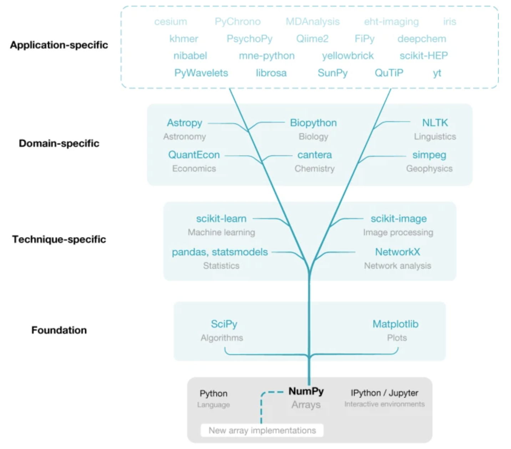
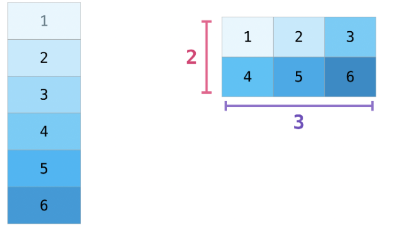
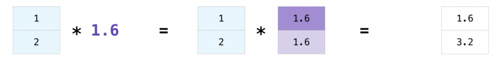
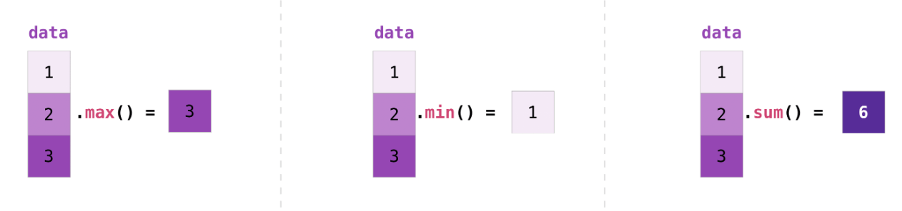
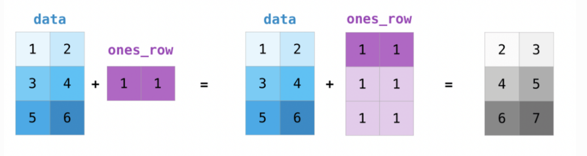

NumPy and Pandas fundamentals for handling biological datasets
Prerequisites
Programming Fundamentals in Python
Basic Python syntax and data structures
Functions and control flow
File handling in Python
Experience with Python IDEs and Jupyter notebooks
Basic Biology Knowledge
Basic genomics terminology
Familiarity with common bioinformatics file formats (FASTA, FASTQ)
Who is the course for?
Bioinformaticians and genomics researchers who want to enhance their data analysis capabilities by mastering NumPy and Pandas for efficient processing of genomic datasets
About the course
Overall Course Objective
By the end of this course, students will be able to effectively utilize NumPy and Pandas libraries to manipulate, analyze, and process complex numerical and tabular data in Python, demonstrating proficiency in advanced array operations, data structures, and data manipulation techniques. Additionally, students will apply these skills to real-world bioinformatics problems, gaining practical experience in genomics data analysis and handling.
Specific Learning Objectives
After completing the NumPy section and hands-on exercises, students will be able to:
Explain the purpose and advantages of using NumPy in scientific computing and data analysis
Create, manipulate, and efficiently implement NumPy arrays through advanced techniques including indexing, sorting, splitting, vectorized operations, and broadcasting
After completing the Pandas section and hands-on exercises, students will be able to:
Understand the relationship between Pandas and NumPy, and effectively use Pandas Series and DataFrames for data analysis
Perform advanced data manipulation techniques including indexing, filtering, handling missing data, and combining DataFrames through merging and concatenation
Overall time schedule
Numpy for Bioinformatics |
3 Hours |
Pandas for Bioinformatics |
3 Hours |
Lesson plan
Overall objectives
Objectives
Understand the fundamentals of NumPy and its importance in scientific computing and bioinformatics
Develop proficiency in creating, manipulating, and performing operations on NumPy arrays
Apply NumPy’s computational capabilities to solve common bioinformatics data manipulation tasks
Compare the efficiency and syntax advantages of NumPy versus standard Python for numerical computation
Instructor note
5 min teaching
Specific Objectives
By the end of this workshop, participants will be able to:
NumPy Foundations
Explain NumPy’s purpose and advantages over standard Python lists
Describe how NumPy leverages contiguous memory allocation for improved performance
Array Creation and Structure
Create NumPy arrays of different dimensions from Python lists and other data sources
Generate arrays using built-in functions like
arange(),zeros(),ones(), andrandom.random()Examine array attributes such as
shape,ndim,size, anddtype
Data Types
Contrast Python and NumPy data types for numerical computation
Select appropriate NumPy data types for optimizing memory usage and computational precision
Understand and manage type coercion in array operations
Indexing and Selection
Access and manipulate array elements using basic indexing
Extract subsets of data using slicing operations in multiple dimensions
Apply boolean masking and advanced filtering techniques to arrays
Array Operations
Reshape and restructure arrays to better match analytical needs
Combine arrays using concatenation and splitting operations
Generate descriptive statistics using NumPy’s built-in functions
Vectorization and Performance
Implement vectorized operations to replace traditional Python loops
Apply broadcasting to perform operations between arrays of different shapes
Optimize calculations for working with large biological datasets
Introduction to NumPy
Objectives
What is NumPy and why it’s important for bioinformatics
Performance advantages over Python lists
Foundation for other scientific libraries
Instructor note
Teaching : 15 min
Demo: 5 min
Exercise : 0 min (exercise would be skipped during live sessions)
What is numpy?
NumPyis short for “Numerical Python”Core python library for scientific computing
Useful for processing large quantities of same-type data
Foundation for:
Data manipulation, analysis and visualization libraries (
Pandas,Matplotlib,scipy)Machine learning libraries (
scikit-learn,TensorFlow,PyTorch)
NumPy operations are written in compiled C, significantly speeding up mathematical operations

Why NumPy is Essential for Bioinformatics
Bioinformatics involves processing and analyzing vast amounts of biological data, from genomic sequences to protein structures
NumPy’s efficient N-dimensional arrays allow for fast and memory-efficient processing of these large datasets
C-optimized operations: NumPy’s compiled C backend makes processing of big-data feasible without having C programming knowledge
Reduced memory footprint help optimize the big-data processing: Accelerating Key Bioinformatics Tasks 100-fold by Improving Memory Access
Run statistical analysis/operations using Biological Data effectively (low barrier to entry)
Numpy is essential for Python-based machine learning applications on biological datasets
Note
In essence, NumPy bridges the gap between high-level Python programming and the performance requirements of modern bioinformatics, making it possible to analyze the increasingly large datasets generated by modern biological research techniques.
NumPy Arrays vs Python Lists
Lists are data structures used to store collections of elements
NumPy arrays enforce a single data type for all elements
Benefits of NumPy arrays:
Homogeneity removes need for type checking during operations
Contiguous memory allocation (faster than Python’s scattered storage)
Vectorization allows operations on entire arrays without loops
Rich set of mathematical functions and operations
Creating NumPy Arrays
Demo
1D Arrays from lists
import numpy as np
# Create from list
py_list = list(range(1,5))
np_array = np.array(py_list)
print(np_array) # Output: array([1, 2, 3, 4])
2D Arrays (matrices)
# Create a 2D array
rows, cols = 3, 4
list_of_list = [[j for j in range(cols)] for i in range(rows)]
np_array = np.array(list_of_list)
print(np_array)
Output:
array([[0, 1, 2, 3],
[0, 1, 2, 3],
[0, 1, 2, 3]])
Creating arrays from scratch
Demo
# Range of values
np.arange(1, 10, 2) # Output: array([1, 3, 5, 7, 9])
# Arrays of zeros
np.zeros((2, 2)) # Output: array([[0., 0.], [0., 0.]])
# Arrays of ones
np.ones(5) # Output: array([1., 1., 1., 1., 1.])
# Random arrays
np.random.random((2, 2)) # Random values between 0 and 1
Examining numpy array structure and storage
NumPy arrays come with several attributes that provide important information about their structure and data storage.
Attribute |
Description |
Example |
Purpose |
|---|---|---|---|
|
A tuple of integers representing the size of each dimension of the array |
(3, 4) (2D array with 3 rows and 4 columns) |
Understands the layout and number of elements within the array. |
|
An integer indicating the dimensionality of the array (number of dimensions) |
2 (for a 2D array), 1 (for a vector) |
Clarifies how many axes are used to access elements. |
|
An integer representing the total number of elements within the array |
12 (for a 2D array with shape (3, 4)) |
Provides a quick way to determine the total number of elements. |
Exercise: NumPy Array Creation Exercises
Exercise 1: Creating Arrays from Scratch
In this exercise, you’ll practice creating NumPy arrays using different built-in functions.
Tasks:
Create a 1D array containing integers from 5 to 50 with a step size of 5 using
np.arange().Create an array of 8 evenly spaced values between 0 and 1 (inclusive) using
np.linspace().Create an array of 10 random integers between 1 and 100 using
np.random.randint().Create an array of shape (3,3) filled with the value 3.14 using
np.full().
Expected Output:
# After task 1
array([ 5, 10, 15, 20, 25, 30, 35, 40, 45, 50])
# After task 2
array([0. , 0.14285714, 0.28571429, 0.42857143, 0.57142857,
0.71428571, 0.85714286, 1. ])
# After task 3 (your values will differ due to randomness)
array([42, 67, 89, 14, 53, 12, 95, 78, 37, 51])
# After task 4
array([[3.14, 3.14, 3.14],
[3.14, 3.14, 3.14],
[3.14, 3.14, 3.14]])
Test
shape,ndim,sizeattributes of the Numpy arrays created in above tasks
Solution
print("Exercise 1: Creating Arrays from Scratch")
# Task 1: Create array from 5 to 50 with step size of 5
array1 = np.arange(5, 51, 5)
print("Task 1 - Array with integers from 5 to 50, step 5:")
print(array1)
print()
# Task 2: Create array of 8 evenly spaced values between 0 and 1
array2 = np.linspace(0, 1, 8)
print("Task 2 - 8 evenly spaced values between 0 and 1:")
print(array2)
print()
# Task 3: Create array of 10 random integers between 1 and 100
array3 = np.random.randint(1, 101, 10)
print("Task 3 - 10 random integers between 1 and 100:")
print(array3)
print()
# Task 4: Create 3x3 array filled with 3.14
array4 = np.full((3, 3), 3.14)
print("Task 4 - 3x3 array filled with 3.14:")
print(array4)
print("\n" + "-"*50 + "\n")
NumPy Data Types
Objectives
Explain the fundamental concept of data types and their importance in computing
Compare and contrast Python’s general data types with NumPy’s specialized data types
Identify the key NumPy data types relevant to bioinformatics applications
Apply data type conversion techniques to optimize NumPy arrays
Explore different NumPy data types for different bioinformatics use cases
Instructor note
Teaching : 15 min
Demo: 10 min
Introduction to Data Types
Data types are fundamental categories that define how computers interpret and store information in memory

Data types directly impact:
Program correctness
Inappropriate data types can lead to errors or unexpected behavior
Computational performance
Different data types have different processing speeds
e.g., Choosing appropriate data types helps optimize memory usage
In scientific computing and bioinformatics specifically, where we often work with large datasets, choosing the right data type becomes even more critical for both accuracy and performance.
Python vs NumPy Data Types
Python and NumPy both provide data type systems, but they serve different purposes and have important distinctions:

Note
This specialization allows NumPy to provide exactly what’s needed for scientific applications without unnecessary overhead. For example, summing a million numbers can be 10-100x faster using NumPy arrays compared to Python lists.
More info
Additional notes
Python vs NumPy - Variety and Focus
Python data types offer broad versatility for general programming:
Integers (
int): Whole numbers without size limitationFloating-point numbers (
float): Decimal numbersStrings (
str): Text dataBooleans (
bool): True/False valuesLists, dictionaries, sets, and Complex data structures
NumPy data types are specialized for numerical and scientific computing:
More precise control over numeric representation (int8, int16, int32, int64, etc.)
Greater variety of floating-point precisions (float16, float32, float64)
Memory-efficient representations of text and boolean values
Specialized types for complex numbers and datetime values
Memory Management:
Python’s approach to memory:
Each value comes with extra information (type information, tracking system - reference count)
Python arranges values wherever it finds room in memory
It’s like having sticky notes scattered across your desk - flexible but takes extra space
NumPy’s approach to memory:
Values are stored together in one organized block
Each value has a fixed, predictable size
It’s like having numbers written in a grid-style notebook - compact and easier to access
This organization also works better with how your computer naturally processes information
In bioinformatics, where we might analyze gene expression data with millions of values, NumPy’s memory efficiency becomes critical.
import numpy as np
import time
# Create a larger dataset for more noticeable timing differences
size = 10000000 # 10 million elements
# Create Python list and NumPy array
python_list = [1] * size
numpy_array = np.ones(size, dtype=np.int8)
# Function to multiply each element by 2
def double_python_list(my_list):
return [x * 2 for x in my_list]
# Timing the Python list operation
start_time = time.time()
doubled_list = double_python_list(python_list)
python_time = time.time() - start_time
print(f"Python list processing time: {python_time:.4f} seconds")
# Timing the NumPy array operation
start_time = time.time()
doubled_array = numpy_array * 2 # Element-wise multiplication
numpy_time = time.time() - start_time
print(f"NumPy array processing time: {numpy_time:.4f} seconds")
# Calculate the speed improvement
speedup = python_time / numpy_time
print(f"NumPy is approximately {speedup:.1f}x faster")
Type Homogeneity
Demo
# Python collections like lists can contain mixed types:
mixed_list = [1, "DNA", True, 3.14] # Different types in one list
print(type(mixed_list), type(mixed_list[0]), type(mixed_list[1]), type(mixed_list[2]), type(mixed_list[3]))
# NumPy arrays enforce type homogeneity:
# All elements converted to the same type (float64)
np_array = np.array([1, 2, 3.14, 4])
print(np_array.dtype)
Output
<class 'list'> <class 'int'> <class 'str'> <class 'bool'> <class 'float'>
float64
This homogeneity enables:
Predictable memory usage
Optimized vectorized operations
Simplified data processing logic
For bioinformatics applications, this homogeneity helps ensure consistency when processing large datasets of gene expression values, sequence reads, or alignment scores.
Key NumPy Data Types
Integer Types
Stores whole numbers only, no decimals - Integer
np.int32 & np.int64 (64-bit signed integer):
np.int32Range: -2,147,483,648 to 2,147,483,647np.int64Range: -9,223,372,036,854,775,808 to 9,223,372,036,854,775,807Primary uses in bioinformatics:
Storing chromosome positions
Indexing into large sequences
Demo
# Storing chromosome positions for a set of genes
gene_positions = np.array([45123, 67845, 123456, 789012], dtype=np.int32)
print(gene_positions.dtype)
print(f"int8 range: {np.iinfo(np.int8).min} to {np.iinfo(np.int8).max}")
print(f"int16 range: {np.iinfo(np.int16).min} to {np.iinfo(np.int16).max}")
Output
int32
int8 range: -128 to 127
int16 range: -32768 to 32767
More info
Additional notes
np.uint8 (8-bit unsigned integer):
Uses 8 bits (1 byte) of memory for each number
Extremely memory-efficient compared to default integer types (usually 32 or 64 bits)
Smaller data types can lead to faster computations
It can only represent non-negative numbers (Unsigned)
Range: 0 to 255
Primary uses in bioinformatics:
Compact storage for quality scores in FASTQ data
Representing nucleotide bases with numeric codes
Storing small count data efficiently
Example:
# Representing DNA as numeric codes (A=1, C=2, G=3, T=4)
dna_sequence = np.array([1, 2, 3, 4, 1, 1, 2], dtype=np.uint8)
When working with small integers, using np.uint8 instead of np.int64 can reduce memory usage by 8x, which becomes significant when processing millions of sequence reads.
Floating-Point Types
np.float32 (Single precision); np.float64 (double-precision float):
np.float32(Single precision)32 bits of precision (~7 significant decimal digits)
np.float64(double-precision float)64 bits of precision (~15-17 significant decimal digits)
Primary uses in bioinformatics:
Storing p-values from statistical tests
Representing gene expression values
Calculating evolutionary distances
Storing probabilities in models
More info
Additional notes
# Gene expression values from RNA-seq experiment
expression_values = np.array([0.0, 12.5, 45.7, 0.13, 92.1], dtype=np.float64)
print(expression_values.dtype)
# For floating-point types, use np.finfo()
print(f"float16 range: {np.finfo(np.float16).min} to {np.finfo(np.float16).max}")
print(f"float32 range: {np.finfo(np.float32).min} to {np.finfo(np.float32).max}")
print(f"float64 range: {np.finfo(np.float64).min} to {np.finfo(np.float64).max}")
print(f"longdouble range: {np.finfo(np.longdouble).min} to {np.finfo(np.longdouble).max}") # Special cases requiring maximum available precision, Rarely used due to platform inconsistency
Output
float64
float16 range: -65504.0 to 65504.0
float32 range: -3.4028234663852886e+38 to 3.4028234663852886e+38
float64 range: -1.7976931348623157e+308 to 1.7976931348623157e+308
longdouble range: -1.7976931348623157e+308 to 1.7976931348623157e+308
Bioinformatics often requires high precision for statistical calculations, making float64 a common choice despite its larger memory footprint.
Boolean Type
np.bool_ (Boolean type):
Values: True or False
Primary uses in bioinformatics:
Creating masks for filtering data
Representing presence/absence of features
Storing binary outcomes from statistical tests
Marking regions of interest in genomic data
Boolean arrays in NumPy are extremely useful for data filtering and are more memory-efficient and faster than equivalent Python list comprehensions.
String Types
<U# (Fixed-length string):
Stores character data with fixed length
Primary uses in bioinformatics:
Storing DNA/RNA sequences
Representing gene names, IDs, or annotations
Storing taxonomic information
Demo
# Array of gene IDs
gene_ids = np.array(['BRCA1', 'TP53', 'EGFR', 'KRAS'])
print(gene_ids.dtype)
x = np.array(["1234567890", "12345678901234567890"])
print(x.dtype)
# Output
# dtype('<U20')
Output
<U5
<U20
NumPy’s string types are less flexible than Python strings but more memory-efficient when working with large collections of fixed-length identifiers.
External resources - Working with Arrays of Strings And Bytes
Data Type Conversion and Specification
NumPy provides several ways to specify or convert data types:
Explicit Type Declaration
# Create array with specific type
counts = np.array([1, 2, 3, 4], dtype=np.int32)
# Convert existing array to new type
float_counts = counts.astype(np.float64)
Checking Data Types
# Check the data type of an array
data = np.array([1.0, 2.0, 3.0])
print(data.dtype) # Output: float64
Automatic Type Inference
NumPy attempts to choose an appropriate type based on the data:
Demo
np.array([1, 2, 3]) # Creates int64 array
np.array([1.0, 2.0, 3.0]) # Creates float64 array
np.array([True, False, True]) # Creates bool array
np.array(['A', 'C', 'G', 'T']) # Creates string array
Practical Considerations for Bioinformatics
Memory Optimization
For large genomic datasets, memory usage is critical:
Demo
# Comparison of memory usage for different types
import numpy as np
# Create arrays with different types
int64_array = np.ones(1000000, dtype=np.int64)
int8_array = np.ones(1000000, dtype=np.int8)
# Check memory usage
print(f"int64 array: {int64_array.nbytes / (1024 * 1024):.2f} MB")
print(f"int8 array: {int8_array.nbytes / (1024 * 1024):.2f} MB")
The int8 array uses 1/8th the memory of the int64 array, which can make the difference between an analysis running in memory or needing extra resources.
Performance Considerations
Data types affect computation speed:
Demo
# Summing integers vs floats
int_array = np.arange(10000000, dtype=np.int32)
float_array = np.arange(10000000, dtype=np.float32)
%time int_sum = np.sum(int_array)
%time float_sum = np.sum(float_array)
Integer operations are generally faster than floating-point operations, which can be important when processing whole-genome data.
Type Compatibility in Bioinformatics Pipelines
Different bioinformatics tools may expect specific data types:
Visualization libraries may require float64 values
Machine learning models may work best with specific types
File formats may impose type constraints
Being aware of these requirements helps create more robust analysis pipelines.
Key Takeaways
Keypoints
NumPy’s specialized data types provide significant advantages for bioinformatics applications:
Efficiency - Both in terms of memory usage and computational performance
Precision - Control over numeric representation ensures accurate calculations
Compatibility - Designed to work well with other scientific computing libraries
Consistency - Type homogeneity helps prevent errors in large datasets
By choosing appropriate data types, bioinformaticians can:
Process larger datasets in memory
Run analyses faster
Ensure computational accuracy
Build more robust analysis pipelines
Understanding the distinctions between Python’s general-purpose types and NumPy’s specialized numeric types is essential for effective scientific programming in bioinformatics.
Array Indexing and Slicing
Objectives
Define and distinguish between indexing and slicing operations in NumPy arrays
Demonstrate proper syntax for accessing individual elements in 1D and 2D arrays using indexing
Extract ranges of elements using slicing techniques, including with negative indices and step parameters
Recognize and avoid common pitfalls when working with arrays, such as off-by-one errors and unintended modifications to original data
Instructor note
Teaching : 10 min
Demo: 5 min
Exercise : 5 min (1st exercise will be completed and the other two be skipped during live sessions)
Introduction
What is Indexing and Slicing?
Indexing is the process of accessing specific individual elements within a data structure
Uses square brackets with a single index value:
array[0]Most programming languages use zero-based indexing (first element is at position 0)
Slicing is the process of extracting a subset or range of elements
Uses square brackets with a range specification:
array[start:stop:step]Creates a view of the original data (changes to the slice affect the original array)
Why Indexing Matters in Bioinformatics:
Bioinformatics deals with large, complex biological datasets:
DNA/RNA sequences (can be millions of nucleotides long)
Protein sequences
Gene expression matrices (thousands of genes × dozens/hundreds of samples)
Phylogenetic trees
Molecular structures
Efficient data access is crucial for:
Sequence alignment and comparison
Identifying motifs or patterns
Analyzing specific regions of interest (e.g., genes, domains, binding sites)
Processing large-scale genomic or proteomic data
Statistical analysis across experimental conditions
NumPy Arrays in Bioinformatics
Common bioinformatics applications:
Storing sequence data as numeric arrays
Representing position weight matrices
Managing alignment scores
Handling gene expression matrices
1D Array Operations
Demo
1D Array Indexing
# Example: String sequence converted to numerical representation
# A=0, C=1, G=2, T=3
dna_seq = np.array([0, 1, 2, 3, 0, 0, 1, 2]) # "ACGTAACG"
# Single element access through indexing
print(dna_seq[0]) # First nucleotide (0 = A)
print(dna_seq[3]) # Fourth nucleotide (3 = T)
print(dna_seq[-1]) # Last nucleotide (2 = G) using negative indexing
1D Array Slicing
# Slicing * extracting subsequences
print(dna_seq[1:4]) # From second to fourth nucleotide: array([1, 2, 3]) = "CGT"
print(dna_seq[:3]) # First three nucleotides: array([0, 1, 2]) = "ACG"
print(dna_seq[5:]) # From sixth nucleotide to the end: array([0, 1, 2]) = "ACG"
# Slicing with negative indices
print(dna_seq[-3:]) # Last three nucleotides: array([0, 1, 2]) = "ACG"
# Slicing with step
print(dna_seq[::2]) # Every second nucleotide: array([0, 2, 0, 1]) = "AGAC"
Real-world significance in bioinformatics:
Indexing:
Accessing specific nucleotide positions of interest
Retrieving expression values for particular genes
Referencing elements in position-specific scoring matrices
Slicing:
Extracting specific regions like promoters, exons, or binding sites
Identifying sequence motifs (e.g., restriction sites, protein domains)
Analyzing k-mers (subsequences of length k)
Creating sliding windows along DNA/protein sequences
2D Array Operations
Demo
# Example: Gene expression matrix
# Rows = genes, Columns = experimental conditions
gene_expr = np.array([
[12.5, 10.2, 33.4, 7.8], # Gene 1 expression across 4 conditions
[45.1, 43.8, 29.2, 22.1], # Gene 2 expression
[8.7, 9.2, 12.3, 10.5], # Gene 3 expression
[67.2, 70.3, 68.7, 71.9] # Gene 4 expression
])
2D Array Indexing
# Single element access * specific element at row, column
print(gene_expr[1, 2]) # Expression of Gene 2 in condition 3: 29.2
# Row indexing * accessing specific row
print(gene_expr[0]) # Gene 1 across all conditions: array([12.5, 10.2, 33.4, 7.8])
2D Array Slicing
# Row slicing * expression profile of one gene across all conditions
print(gene_expr[0, :]) # Gene 1 across all conditions: array([12.5, 10.2, 33.4, 7.8])
# Column slicing * expression of all genes in a specific condition
print(gene_expr[:, 1]) # All genes in condition 2: array([10.2, 43.8, 9.2, 70.3])
# Sub-matrix slicing * subset of genes in subset of conditions
print(gene_expr[0:2, 2:4])
# First 2 genes in conditions 3 and 4:
# array([[33.4, 7.8],
# [29.2, 22.1]])
# Strided slicing * every other gene, first two conditions
print(gene_expr[::2, :2])
# Genes 1 & 3, conditions 1 & 2:
# array([[12.5, 10.2],
# [8.7, 9.2]])
Real-world significance in bioinformatics
Indexing:
Retrieving expression value for a specific gene in a specific condition
Accessing specific positions in sequence alignments
Finding interaction pairs in protein-protein interaction matrices
Slicing:
Comparing gene expression profiles across different tissues or time points
Analyzing subsets of genes after clustering
Extracting data for specific experiments or replicates
Processing sections of alignment score matrices
Analyzing specific regions in protein contact maps
Extracting protein domains from structure coordinate arrays
Exercises - Array Indexing and Slicing Exercises
Exercise
Exercise 1: DNA Sequence Analysis (2-3 minutes)
Given a DNA sequence represented as an array of numerical values (A=0, C=1, G=2, T=3):
import numpy as np
dna_seq = np.array([0, 1, 2, 3, 0, 0, 1, 2, 3, 3, 2, 1, 0, 0, 2, 3]) # "ACGTAACGTTGCAGT"
Tasks:
Extract the first 5 nucleotides
Extract the last 4 nucleotides
Extract every third nucleotide starting from the first position
Extract the subsequence from position 6 to position 10 (inclusive)
Solution
# 1. First 5 nucleotides
print("First 5 nucleotides:", dna_seq[:5])
# 2. Last 4 nucleotides
print("Last 4 nucleotides:", dna_seq[-4:])
# 3. Every third nucleotide
print("Every third nucleotide:", dna_seq[::3])
# 4. Subsequence from position 6 to 10
print("Subsequence pos 6-10:", dna_seq[6:11])
# Note: Upper bound is exclusive in slicing, so we use 11 to include position 10
Output
First 5 nucleotides: [0 1 2 3 0]
Last 4 nucleotides: [0 0 2 3]
Every third nucleotide: [0 3 1 3 0 3]
Subsequence pos 6-10: [1 2 3 3 2]
Additional exercises
Exercise 2 & 3
Exercise
Exercise 2: Gene Expression Analysis (2-3 minutes)
Given a gene expression matrix where rows represent genes and columns represent conditions:
import numpy as np
gene_expr = np.array([
[15.2, 21.5, 18.9, 11.8, 25.3], # Gene 1
[42.3, 38.1, 29.6, 33.2, 19.7], # Gene 2
[8.4, 7.5, 9.2, 8.1, 10.5], # Gene 3
[31.6, 29.8, 27.5, 34.9, 36.2], # Gene 4
[17.3, 19.8, 22.5, 21.3, 18.2] # Gene 5
])
Tasks:
Extract the expression values for Gene 3
Extract the expression values for all genes under fifth column
Extract a sub-matrix containing Genes 2-4 under columns 2-3
Find the expression value for Gene 5 under columns 2
Exercise 2 -Solution:
# 1. Expression values for Gene 3
print("Gene 3 expression:", gene_expr[2])
# Alternative: gene_expr[2, :]
# 2. Expression values for all genes under column 5
print("Condition 4 expression:", gene_expr[:, 4])
# 3. Sub-matrix of Genes 2-4 under columns 2-3
print("Sub-matrix (Genes 2-4, columns 2-3):")
print(gene_expr[1:4, 1:3])
# array([[38.1, 29.6],
# [7.5, 9.2],
# [29.8, 27.5]])
# 4. Expression value for Gene 5 under columns 2
print("Gene 5, columns 2:", gene_expr[4, 1])
Output
Gene 3 expression: [ 8.4 7.5 9.2 8.1 10.5]
Condition 4 expression: [25.3 19.7 10.5 36.2 18.2]
Sub-matrix (Genes 2-4, columns 2-3):
[[38.1 29.6]
[ 7.5 9.2]
[29.8 27.5]]
Gene 5, columns 2: 19.8
Exercise 3: Multi-sequence Alignment Analysis (2-3 minutes)
Consider a simplified alignment scoring matrix where each row represents a match (1) or mismatch (0) and each column represents a position in the alignment:
import numpy as np
alignment_scores = np.array([
[1, 0, 1, 1, 0, 1, 0, 0, 1, 1], # Sequence 1
[1, 1, 0, 1, 0, 0, 1, 1, 0, 1], # Sequence 2
[0, 1, 1, 1, 1, 0, 0, 1, 0, 0], # Sequence 3
[1, 0, 0, 1, 1, 1, 0, 0, 1, 1] # Sequence 4
]) # 1 = match, 0 = mismatch
Tasks:
Find positions where all sequences match (all rows having 1s in a column - use
np.allwith a mask)Extract scores for positions 3-7 for all sequences
Find the matching pattern (positions with value 1) for Sequence 3
Extract a sub-alignment of the first two sequences for the last five positions
Exercise 3 -Solution:
# 1. Positions where all sequences match
all_match = np.all(alignment_scores == 1, axis=0)
print("Positions where all sequences match:", np.where(all_match)[0])
# 2. Scores for positions 3-7 for all sequences
print("Positions 3-7 scores:")
print(alignment_scores[:, 3:8])
# 3. Matching pattern for Sequence 3
seq3_matches = alignment_scores[2] == 1
print("Sequence 3 match positions:", np.where(seq3_matches)[0])
# 4. Sub-alignment of first two sequences for last five positions
print("Sub-alignment (Seq 1-2, last 5 positions):")
print(alignment_scores[0:2, 5:])
Output
Positions where all sequences match: [3]
Positions 3-7 scores:
[[1 0 1 0 0]
[1 0 0 1 1]
[1 1 0 0 1]
[1 1 1 0 0]]
Sequence 3 match positions: [1 2 3 4 7]
Sub-alignment (Seq 1-2, last 5 positions):
[[1 0 0 1 1]
[0 1 1 0 1]]
Key Takeaways
Keypoints
Efficient indexing and slicing are crucial for bioinformatics workflows
Key takeaways:
Indexing for accessing individual elements
Slicing for extracting regions of interest
Leverage both for efficient data manipulation in matrices (gene × condition, position × sequence, etc.)
Combine with boolean operations for filtering
Remember zero-based indexing
Common pitfalls:
Off-by-one errors (especially when converting between biology’s 1-based and programming’s 0-based systems)
Overlooking the exclusive upper bound in slicing (end index is not included)
Forgetting that modifying slices can modify the original array (use .copy() when needed)
Confusing row-major vs. column-major operations
NumPy Boolean Masking and Filtering
Objectives
Create boolean masks for array filtering using comparison operators
Apply boolean masks to select specific elements from arrays
Combine multiple conditions using logical operators (
&,|,~)Use
np.where()to find indices where conditions are metApply
np.where()for conditional value assignmentImplement
np.isin()to check array membershipApply these techniques to solve common data analysis problems
Instructor note
Teaching : 10 min
Demo: 5 min
Exercise : 5 min (1st exercise will be completed and the other two be skipped during live sessions)
Introduction to Advanced Indexing
When working with data, we often need to focus on specific elements that meet certain criteria. NumPy provides elegant and efficient ways to accomplish this through:
Boolean masking
The
np.where()functionThe
np.isin()function
Let’s explore each technique in detail.
Boolean Masking: The Concept
Boolean masking is a fundamental technique in NumPy that allows us to filter arrays based on conditions. The process happens in two steps:
Step 1: Create a Boolean Mask:
We apply a condition to an array
This produces a new array of the same shape filled with
TrueandFalsevaluesElements that satisfy our condition are marked as
TrueElements that don’t satisfy our condition are marked as
False
Step 2: Apply the Mask:
We use this boolean array to index into our original array
Only elements corresponding to
Truevalues are selected
Let’s see this in action:
Demo
import numpy as np
# Create a sample array
data = np.array([1, 4, 2, 5, 3])
print("Original array:", data)
# Create a boolean mask for elements greater than 3
mask = data > 3
print("Boolean mask (data > 3):", mask)
# This produces: [False, True, False, True, False]
# Apply the mask to select elements
selected_data = data[mask]
print("Selected elements:", selected_data)
# This produces: [4, 5]
## Elegant approach - mask array has the exact same shape as data array
## Each position containing information about whether that element meets our criteria
Combining Multiple Conditions
We can combine multiple conditions using logical operators:
&for logical AND|for logical OR~for logical NOT
Demo
# Creating a 2D array for demonstration
arr = np.array([[5, 10, 15],
[20, 25, 30],
[35, 40, 45]])
# Elements greater than 20 AND less than 40
mask = (arr > 20) & (arr < 40)
print("Elements between 20 and 40:", arr[mask])
# This produces: [25 30 35]
# Elements less than 15 OR greater than 40
mask = (arr < 15) | (arr > 40)
print("Elements less than 15 or greater than 40:", arr[mask])
# This produces: [ 5 10 45]
Important: When combining conditions, always use parentheses around each individual condition to ensure proper precedence.
Using np.where(): Finding Positions
The np.where() function gives us even more capabilities. In its simplest form, it returns the indices where a condition is True:
Demo
# Create an array with a sequence
data = np.arange(0, 20, 3) # [0, 3, 6, 9, 12, 15, 18]
print("Original array:", data)
# Find indices where elements are even
indices = np.where(data % 2 == 0)
print("Indices of even elements:", indices[0])
# This produces: [0, 2, 4, 6]
# Use these indices to get the actual values
even_elements = data[indices]
print("Even elements:", even_elements)
# This produces: [ 0, 6, 12, 18]
The result of np.where() is a tuple of arrays, one for each dimension of the input array. Since we’re working with a 1D array here, we access the first (and only) element of this tuple with indices[0].
Using np.where(): Conditional Assignment
The real power of np.where() comes from its three-argument form:
np.where(condition, x, y)
This works like a vectorized if-else statement:
Where the condition is
True, take values from arrayxWhere the condition is
False, take values from arrayy
Demo
# Original array: [0, 3, 6, 9, 12, 15, 18]
# Replace odd numbers with zeros
result = np.where(data % 2 == 0, data, 0)
print("Even numbers preserved, odd numbers replaced with 0:", result)
# This produces: [ 0, 0, 6, 0, 12, 0, 18]
# Another example: create an array that shows whether each element is even or odd
labels = np.where(data % 2 == 0, "even", "odd")
print("Labels for each element:", labels)
# This produces: ['even' 'odd' 'even' 'odd' 'even' 'odd' 'even']
This is much more concise and efficient than using loops or other conditional constructs.
The np.isin() Function
The np.isin() function checks whether elements in one array are present in another array. It creates a boolean mask that we can use for filtering:
Demo
# Original array: [0, 3, 6, 9, 12, 15, 18]
# Check which elements are in a set of values
test_values = [0, 6, 15]
mask = np.isin(data, test_values)
print("Elements that are in test_values:", data[mask])
# This produces: [ 0, 6, 15]
# We can also use the ~ operator for negation
print("Elements that are NOT in test_values:", data[~mask])
# This produces: [ 3, 9, 12, 18]
This is especially useful when we have a specific set of values we’re interested in.
Practical Applications
These techniques are foundational for data analysis tasks:
Data Cleaning: Filter out missing or invalid values
clean_data = data[~np.isnan(data)] # Remove NaN values
Feature Selection: Extract data points that meet specific criteria
high_importance = data[data > threshold]
Conditional Transformations: Apply different operations to different elements
normalized = np.where(data > 0, data/data.max(), data/abs(data.min()))
Performance Considerations
Boolean masking and np.where() operations are highly optimized in NumPy. They:
Avoid explicit loops in Python
Execute at C-speed under the hood
Allow vectorized operations on large datasets
For large datasets, these techniques are drastically faster than traditional iteration.
Exercises: NumPy Boolean Masking and Advanced Filtering
Exercise
Exercise 1 - Basic Boolean Masking:
Create a NumPy array of 20 random integers between 0 and 100. Then:
np.random.seed(42) # for reproducibility
numbers = np.random.randint(0, 101, 20)
Create a boolean mask to identify all numbers divisible by 7
Use the mask to extract these numbers
Count how many numbers are divisible by 7
Solution
import numpy as np
# Create an array of 20 random integers between 0 and 100
np.random.seed(42) # for reproducibility
numbers = np.random.randint(0, 101, 20)
print("Original array:", numbers)
# Create a boolean mask for numbers divisible by 7
mask = numbers % 7 == 0
print("Boolean mask:", mask)
# Extract numbers divisible by 7
divisible_by_7 = numbers[mask]
print("Numbers divisible by 7:", divisible_by_7)
# Count how many numbers are divisible by 7
count = np.sum(mask) # True values are treated as 1, False as 0
print(f"Count of numbers divisible by 7: {count}")
Output
Original array: [51 92 14 71 60 20 82 86 74 74 87 99 23 2 21 52 1 87 29 37]
Boolean mask: [False False True False False False False False False False False False
False False True False False False False False]
Numbers divisible by 7: [14 21]
Count of numbers divisible by 7: 2
Additional exercises
Exercise 2 & 3
Exercise
Exercise 2 - np.where() for Conditional Assignment:
Create a 4x4 matrix of random integers between 1 and 20. Then:
np.random.seed(42)
matrix = np.random.randint(1, 21, (4, 4))
Use np.where() to replace all odd numbers with -1 while keeping even numbers unchanged
Exercise 2 - Solution:
# Create a 4x4 matrix of random integers between 1 and 20
np.random.seed(42)
matrix = np.random.randint(1, 21, (4, 4))
print("Original matrix:")
print(matrix)
# Replace odd numbers with -1, keep even numbers
odd_replaced = np.where(matrix % 2 == 0, matrix, -1)
print("\nMatrix with odd numbers replaced by -1:")
print(odd_replaced)
Output
Original matrix:
[[ 7 20 15 11]
[ 8 7 19 11]
[11 4 8 3]
[ 2 12 6 2]]
Matrix with odd numbers replaced by -1:
[[-1 20 -1 -1]
[ 8 -1 -1 -1]
[-1 4 8 -1]
[ 2 12 6 2]]
Exercise 3 - DNA Sequence Analysis:
You are given a DNA sequence as a NumPy array of characters (A, T, G, C).
Create a random DNA sequence of length 50 using
np.random.choice(['A', 'T', 'G', 'C'], 50)Use boolean masking to Count the number of each nucleotide (A, T, G, C)
Exercise 3 - Solution:
import numpy as np
# Create a random DNA sequence
np.random.seed(42) # for reproducibility
dna_sequence = np.random.choice(['A', 'T', 'G', 'C'], 50)
print("DNA sequence:", ''.join(dna_sequence))
# Count the number of each nucleotide
a_count = np.sum(dna_sequence == 'A')
t_count = np.sum(dna_sequence == 'T')
g_count = np.sum(dna_sequence == 'G')
c_count = np.sum(dna_sequence == 'C')
print(f"A: {a_count}, T: {t_count}, G: {g_count}, C: {c_count}")
Output
DNA sequence: GCAGGCAAGTGGGGCACCCGTATCCTTTCCAACTTACAAGGGTCCCCGTT
A: 10, T: 11, G: 13, C: 16
Key Takeaways
Keypoints
Boolean masking provides an intuitive way to filter arrays based on conditions
np.where()in its single-argument form finds indices where conditions are truenp.where(condition, x, y)acts as a vectorized if-else statementnp.isin()lets us filter based on membership in a set of values
Essential Array Operations with NumPy
Objectives
Reshape arrays to transform data structures while preserving values
Combine arrays using concatenation operations along different axes
Generate descriptive statistics from arrays using NumPy’s built-in functions
Apply the axis parameter correctly to perform row-wise and column-wise operations
Integrate reshaping, concatenation, and statistical functions to solve practical data problems
Instructor note
Teaching : 20 min
Demo: 20 min
Introduction
NumPy is the foundation of Python’s data science ecosystem. At its core is the powerful ndarray object - an efficient, versatile container for large datasets. We’ll explore three essential capabilities:
Reshaping arrays to organize data differently
Combining arrays using concatenation
Generating summary statistics to understand our data
Let’s dive into how these operations can transform the way we work with numerical data.
Reshaping Arrays
Understanding Array Dimensions
Arrays can have different dimensions:
1D arrays (vectors): Simple sequences of values
2D arrays (matrices): Tables with rows and columns
3D arrays and beyond: Multi-dimensional structures

The shape and dimension of an array tell us how data is organized:
Demo
import numpy as np
# Create a simple 1D array
a = np.ones(6)
print("Original array:")
print(a)
print(f"Dimensions: {a.ndim}") # Number of dimensions
print(f"Shape: {a.shape}") # Tuple showing size in each dimension
Output:
Original array:
[1. 1. 1. 1. 1. 1.]
Dimensions: 1
Shape: (6,)
Reshaping Arrays uisng reshape

Reshaping allows us to reorganize the same data into different dimensions
The key rule: the total number of elements must remain the same
Demo
a = np.array(range(1,7))
# Reshape our 1D array with 6 elements into a 2D array (2 rows, 3 columns)
b = a.reshape(2, 3)
print("\nReshaped to 2x3 array:")
print(b)
print(f"Dimensions: {b.ndim}")
print(f"Shape: {b.shape}")
Output
Reshaped to 2x3 array:
[[1 2 3]
[4 5 6]]
Dimensions: 2
Shape: (2, 3)
More info
Additional notes
Practical Example: Preparing a Simple Grayscale Image for an ML Model:
Imagine you have a tiny grayscale image, maybe from a very simple dataset. It’s represented as a 2D grid of pixel values. Many basic machine learning algorithms (like Logistic Regression or simple Neural Networks) expect input data where each row is a single sample (a single image) and each column is a feature (a single pixel value).
Our task is to take a 2D image representation and “flatten” it into a 1D row vector suitable for these algorithms.
Demo
import numpy as np
# 2. Imagine a tiny 3x3 pixel grayscale image
# Each number represents the brightness of a pixel (0=black, 255=white)
# This is a 2D NumPy array (a matrix)
image_2d = np.array([
[10, 20, 30],
[40, 50, 60],
[70, 80, 90]
])
print("Original 2D Image Array:")
print(image_2d)
print("Shape of original image:", image_2d.shape) # Output: (3, 3) -> 3 rows, 3 columns
# 3. Prepare for ML: Flatten the image
# Many ML models expect each sample (our image) as a single row.
# We need to convert the 3x3 grid into a 1x9 row (1 row, 9 features/pixels).
# Total number of pixels = 3 * 3 = 9
# Using reshape:
# We want 1 row, and NumPy can figure out the number of columns needed.
# We use '-1' to tell NumPy: "calculate the correct number of columns for me".
flattened_image = image_2d.reshape(1, 9)
# Alternatively, we could be explicit:
# flattened_image = image_2d.reshape(1, 9)
print("Flattened Image Array (Ready for ML Model):")
print(flattened_image)
print("Shape of flattened image:", flattened_image.shape) # Output: (1, 9) -> 1 row, 9 columns
Output
Original 2D Image Array:
[[10 20 30]
[40 50 60]
[70 80 90]]
Shape of original image: (3, 3)
Flattened Image Array (Ready for ML Model):
[[10 20 30 40 50 60 70 80 90]]
Shape of flattened image: (1, 9)
Using -1 as a Dimension
NumPy can automatically calculate one dimension when you use -1:
Demo
image_2d2 = np.array([
[10, 20, 30],
[40, 50, 60],
[70, 80, 90],
[100, 50, 60],
[55, 150, 200],
[150, 100, 220]
])
print(f"Flattened image: {image_2d2.reshape(-1, 9)}")
Output
array([[ 10, 20, 30, 40, 50, 60, 70, 80, 90],
[100, 50, 60, 55, 150, 200, 150, 100, 220]])
Array Concatenation
Concatenation lets us combine multiple arrays into a single larger array. This is essential when:
Merging datasets
Building up arrays piece by piece
Combining results from different operations

1D Array Concatenation
Let’s start with the simplest case - joining two 1D arrays:
Demo
# Create two 1D arrays
a = np.array([1, 2, 3, 4])
b = np.array([5, 6, 7, 8])
# Concatenate them
combined = np.concatenate((a, b))
print("Concatenated 1D arrays:")
print(combined)
Output
Concatenated 1D arrays:
[1 2 3 4 5 6 7 8]
2D Array Concatenation
When working with 2D arrays, we need to specify the axis of concatenation:
axis=0: Join vertically (collapse rows) axis=1: Join horizontally (collapse columns)
Vertical Concatenation (axis=0)
Demo
# Create 2D arrays
x = np.array([[1, 2], [3, 4]]) # 2x2 array
y = np.array([[5, 6]]) # 1x2 array
# Vertical concatenation (default is axis=0)
v_combined = np.concatenate((x, y))
print("\nVertical concatenation (axis=0):")
print(v_combined)
Output
Vertical concatenation (axis=0):
[[1 2]
[3 4]
[5 6]]
Horizontal Concatenation (axis=1)
Demo
# Create arrays for horizontal concatenation
p = np.array([[1, 2], [3, 4]]) # 2x2 array
q = np.array([[5], [6]]) # 2x1 array
# Horizontal concatenation (axis=1)
h_combined = np.concatenate((p, q), axis=1)
print("\nHorizontal concatenation (axis=1):")
print(h_combined)
Output
Horizontal concatenation (axis=1):
[[1 2 5]
[3 4 6]]
More info
Additional notes
Concatenation Requirements:
The key rule for numpy concatenation is:
When concatenating along a specific axis, all dimensions except that axis must match exactly.
Example 1 (fails):
a = np.array([[1, 2, 3]]) # Shape: (1, 3)
b = np.array([[4, 5, 6, 7]]) # Shape: (1, 4)
np.concatenate((a,b), axis=0)
Concatenating along axis=0 (stacking rows)
For axis=0 concatenation, all other dimensions must match
a has 3 columns, b has 4 columns
Since 3 ≠ 4, this raises an error
Example 2 (works):
c = np.array([[1, 2, 3]]) # Shape: (1, 3)
d = np.array([[4, 5, 6, 7]]) # Shape: (1, 4)
np.concatenate((c,d), axis=1)
Concatenating along axis=1 (stacking columns)
For axis=1 concatenation, all other dimensions must match
Both c and d have 1 row
Since 1 = 1, this works and creates shape (1, 7)
Simple way to remember:
axis=0: Arrays must have the same number of columns
axis=1: Arrays must have the same number of rows
axis=2 (for 3D): Arrays must have matching dimensions in axes 0 and 1
Think of it like stacking blocks:
To stack vertically (axis=0), blocks must have the same width
To stack horizontally (axis=1), blocks must have the same height
Summary Statistics
NumPy provides efficient functions to calculate statistical measures across arrays. These are essential for:
Data exploration and understanding
Identifying patterns and outliers
Summarizing large datasets
Function |
Description |
|---|---|
np.sum() |
Sum of array elements |
np.min() |
Minimum value |
np.max() |
Maximum value |
np.mean() |
Arithmetic mean (average) |
np.median() |
Median value |
np.std() |
Standard deviation |
np.var() |
Variance |
axis=None (default): Operate on all elements (flattened array)
axis=0: Collapse rows and operate along columns (down)
axis=1: Collapse columns and operate along rows (across)
Demo
# Create a 2D array
data = np.array([[1, 2, 3],
[4, 5, 6]])
print("Our data:")
print(data)
# Sum of all elements
total = np.sum(data)
print(f"\nTotal sum: {total}") # 21
# Column sums (axis=0)
col_sums = np.sum(data, axis=0)
print(f"Column sums: {col_sums}") # [5 7 9]
## Collapse values in rows along the the column 0 and aggregate: [1, 4] = 5
## Collapse values in rows along the the column 1 and aggregate: [2, 5] = 7
## Collapse values in rows along the the column 2 and aggregate: [3, 6] = 9
# Row sums (axis=1)
row_sums = np.sum(data, axis=1)
print(f"Row sums: {row_sums}") # [6 15]
## Collapse values in columns along the the row 0 and aggregate: [1, 2, 3] = 6
## Collapse values in columns along the the row 1 and aggregate: [4, 5, 6] = 15
Keypoints
Reshaping Arrays: Maintain the total number of elements when reshaping; use -1 for automatic dimension calculation.
Concatenation of Arrays: Combine arrays while matching dimensions, except along the concatenation axis.
Statistical Functions: Utilize NumPy’s statistical functions for data analysis, operating across different axes.
Error Handling: Be aware of shape requirements for concatenation to avoid errors.
Vectorized Operations in NumPy: Beyond Python Loops
Objectives
By the end of this lecture, you will be able to:
Understand and implement vectorized operations to replace traditional Python loops
Apply broadcasting to perform operations between arrays of different shapes
Optimize calculations for working with large biological datasets
Instructor note
Teaching : 20 min
Demo: 20 min
Introduction to Vectorized Operations
What are Vectorized Operations?
Vectorized operations allow us to perform mathematical operations on entire arrays at once, rather than iterating through each element individually. This approach offers several key advantages:
Performance:
Vectorized operations are significantly faster than Python loops, especially for large datasets
Readability:
The code becomes more concise and often easier to understand
Efficiency:
NumPy uses optimized C code under the hood, making calculations much more efficient
The Speed Advantage: Loops vs. Vectorization
Let’s see a simple example comparing a traditional Python loop with NumPy’s vectorized approach:
Demo
import numpy as np
import time
# Create a large array for testing
size = 10000000
data = np.random.random(size)
# Method 1: Traditional Python loop
start_time = time.time()
result_loop = []
for value in data:
result_loop.append(value * 2 + 5)
loop_time = time.time() - start_time
print(f"Python loop time: {loop_time:.4f} seconds")
# Method 2: NumPy vectorized operation
start_time = time.time()
result_vectorized = data * 2 + 5
vector_time = time.time() - start_time
print(f"NumPy vectorized time: {vector_time:.4f} seconds")
# Calculate the speedup
speedup = loop_time / vector_time
print(f"Vectorized operations are {speedup:.1f}x faster!")
Output
Python loop time: 1.0195 seconds
NumPy vectorized time: 0.0613 seconds
Vectorized operations are 16.6x faster!
Basic Vectorized Operations in NumPy
Arithmetic Operations
NumPy enables element-wise arithmetic operations on arrays:

Demo
import numpy as np
# Create two arrays
a = np.array([1, 2, 3, 4, 5])
b = np.array([10, 20, 30, 40, 50])
# Element-wise operations
addition = a + b
subtraction = b - a
multiplication = a * b
division = b / a
print(f"Addition: {addition}")
print(f"Subtraction: {subtraction}")
print(f"Multiplication: {multiplication}")
print(f"Division: {division}")
Output
Addition: [11 22 33 44 55]
Subtraction: [ 9 18 27 36 45]
Multiplication: [ 10 40 90 160 250]
Division: [10. 10. 10. 10. 10.]
Scalar Operations
You can perform operations between arrays and scalars (single values):

Demo
# Scalar operations
a = np.array([1, 2, 3, 4, 5])
plus_10 = a + 10
times_2 = a * 2
square = a ** 2
reciprocal = 1 / a
print(f"Plus 10: {plus_10}")
print(f"Times 2: {times_2}")
print(f"Squared: {square}")
print(f"Reciprocal: {reciprocal}")
Output
Plus 10: [11 12 13 14 15]
Times 2: [ 2 4 6 8 10]
Squared: [ 1 4 9 16 25]
Reciprocal: [1. 0.5 0.33333333 0.25 0.2 ]
Comparison Operations
Comparison operations create boolean masks that can be useful for filtering data:
Demo
# Comparison operations
a = np.array([1, 2, 3, 4, 5])
greater_than_3 = a > 3
less_than_equal_to_2 = a <= 2
equal_to_3 = a == 3
print(f"a > 3: {greater_than_3}")
print(f"a <= 2: {less_than_equal_to_2}")
print(f"a == 3: {equal_to_3}")
# Using boolean masks for filtering
filtered_data = a[greater_than_3] # [4, 5]
print(f"Values greater than 3: {filtered_data}")
Output
a > 3: [False False False True True]
a <= 2: [ True True False False False]
a == 3: [False False True False False]
Values greater than 3: [4 5]
Universal Functions (ufuncs)
NumPy provides a wide range of universal functions (ufuncs) that operate element-wise on arrays:
Demo
# Universal functions (ufuncs)
a = np.array([1, 2, 3, 4, 5])
sqrt_values = np.sqrt(a) # Square root of each element
log_values = np.log(a) # Natural logarithm of each element
exp_values = np.exp(a) # e raised to the power of each element
sin_values = np.sin(a) # Sine of each element
print(f"Square roots: {sqrt_values}")
print(f"Natural logs: {log_values}")
print(f"Exponentials: {exp_values}")
print(f"Sine values: {sin_values}")
Output
Square roots: [1. 1.41421356 1.73205081 2. 2.23606798]
Natural logs: [0. 0.69314718 1.09861229 1.38629436 1.60943791]
Exponentials: [ 2.71828183 7.3890561 20.08553692 54.59815003 148.4131591 ]
Sine values: [ 0.84147098 0.90929743 0.14112001 -0.7568025 -0.95892427]
Aggregation Functions
NumPy also provides functions to calculate aggregate statistics across arrays: 
Demo
# Aggregation functions
a = np.array([1, 2, 3, 4, 5])
sum_a = np.sum(a) # Sum of all elements (15)
mean_a = np.mean(a) # Mean of all elements (3.0)
min_a = np.min(a) # Minimum value (1)
max_a = np.max(a) # Maximum value (5)
std_a = np.std(a) # Standard deviation (~1.41)
print(f"Sum: {sum_a}")
print(f"Mean: {mean_a}")
print(f"Min: {min_a}")
print(f"Max: {max_a}")
print(f"Standard deviation: {std_a}")
Output
Sum: 15
Mean: 3.0
Min: 1
Max: 5
Standard deviation: 1.4142
Use NumPy’s Built-in Functions: They’re optimized for performance
Exercise
import numpy as np
import time
# Create a large array
size = 1_000_000
data = np.random.random(size)
# Method 1: Custom function with a loop
def mean_std_loop(arr):
mean = sum(arr) / len(arr)
squared_diff_sum = sum((x - mean) ** 2 for x in arr)
std = (squared_diff_sum / len(arr)) ** 0.5
return mean, std
# Method 2: NumPy's built-in functions
def mean_std_numpy(arr):
return np.mean(arr), np.std(arr)
# Time the loop version
start = time.time()
mean1, std1 = mean_std_loop(data)
time1 = time.time() - start
# Time the NumPy version
start = time.time()
mean2, std2 = mean_std_numpy(data)
time2 = time.time() - start
print(f"Loop implementation: {time1:.6f} seconds")
print(f"NumPy implementation: {time2:.6f} seconds")
print(f"Speed improvement: {time1/time2:.1f}x")
Solution
Output
Loop implementation: 0.156354 seconds
NumPy implementation: 0.002557 seconds
Speed improvement: 61.1x
3. Broadcasting in NumPy
What is Broadcasting?
Broadcasting is a powerful mechanism that allows NumPy to perform operations on arrays of different shapes. It automatically “broadcasts” the smaller array across the larger array so that they have compatible shapes.

Broadcasting Rules
If the arrays don’t have the same number of dimensions, the shape of the smaller array is padded with ones on the left
If the shape of the arrays doesn’t match in any dimension, the array with shape equal to 1 in that dimension is stretched to match the other shape
If in any dimension the sizes disagree and neither is equal to 1, an error is raised
Broadcasting Examples
Example 1: Adding a scalar to an array
The simplest form of broadcasting:
Demo
# Adding a scalar to an array
a = np.array([1, 2, 3, 4, 5])
result = a + 10 # Scalar 10 is broadcast to array [10, 10, 10, 10, 10]
print(result) # [11, 12, 13, 14, 15]
Note
If the sizes along a dimension differ, the array with size 1 in that dimension is stretched to match the other size
Example 2: Operations between a 1D array and a 2D array
Demo
# Broadcasting with different dimensional arrays
# Create a 2D array (3x3)
matrix = np.array([
[1, 2, 3],
[4, 5, 6],
[7, 8, 9]
])
# Create a 1D array
row_vector = np.array([10, 20, 30])
result = matrix + row_vector
# Broadcasting: Add the 1D array to each row of the 2D array
# row_vector is broadcast to match matrix's shape
# NumPy's default broadcasting for 1D arrays applies column-wise
print("Original matrix:")
print(matrix)
print("\nRow vector:")
print(row_vector)
print("\nResult after broadcasting addition:")
print(result)
# Output:
# [[11, 22, 33],
# [14, 25, 36],
# [17, 28, 39]]
Note
Row_vector is duplicated across the rows of the matrix
More info
Additional info
Example 3: Adding a column vector to a 2D array
Demo
# Create a column vector (3x1)
column_vector = np.array([[100], [200], [300]])
# Broadcasting: Add the column vector to each column of the matrix
result = matrix + column_vector
print("Original matrix:")
print(matrix)
print("\nColumn vector:")
print(column_vector)
print("\nResult after broadcasting addition:")
print(result)
# Output:
# [[101, 102, 103],
# [204, 205, 206],
# [307, 308, 309]]
Note
column_vector is effectively repeated across all columns, resulting in:
[[100, 100, 100],
[200, 200, 200],
[300, 300, 300]]
Array Splitting with NumPy
Splitting arrays is a common operation when working with biological data, especially when you need to separate data into training and testing sets or divide data by conditions.
Basic Array Splitting
The np.split function allows you to divide an array into multiple sub-arrays:
Demo
import numpy as np
# Create a simple array
arr = np.arange(10)
print(f"Original array: {arr}")
# Split into 5 equal parts
splits = np.split(arr, 5)
print("After splitting into 5 equal parts:")
for i, split in enumerate(splits):
print(f"Split {i}: {split}")
Output
Original array: [0 1 2 3 4 5 6 7 8 9]
After splitting into 5 equal parts:
Split 0: [0 1]
Split 1: [2 3]
Split 2: [4 5]
Split 3: [6 7]
Split 4: [8 9]
More info
Additional info
Splitting 2D Arrays:
You can split arrays along different axes:
Demo
# Create a 4x4 array
arr_2d = np.arange(16).reshape(4, 4)
print("Original 2D array:")
print(arr_2d)
# Split along rows (axis=0)
row_splits = np.split(arr_2d, 2, axis=0)
print("\nSplit along rows (axis=0):")
for i, split in enumerate(row_splits):
print(f"Split {i}:")
print(split)
# Split along columns (axis=1)
col_splits = np.split(arr_2d, 2, axis=1)
print("\nSplit along columns (axis=1):")
for i, split in enumerate(col_splits):
print(f"Split {i}:")
print(split)
Output
Original 2D array:
[[ 0 1 2 3]
[ 4 5 6 7]
[ 8 9 10 11]
[12 13 14 15]]
Split along rows (axis=0):
Split 0:
[[0 1 2 3]
[4 5 6 7]]
Split 1:
[[ 8 9 10 11]
[12 13 14 15]]
Split along columns (axis=1):
Split 0:
[[ 0 1]
[ 4 5]
[ 8 9]
[12 13]]
Split 1:
[[ 2 3]
[ 6 7]
[10 11]
[14 15]]
Splitting at Specific Indices
You can also split an array at specific indices:
Demo
# Create an array
arr = np.arange(10)
print(f"Original array: {arr}")
# Split at indices 2 and 7
splits = np.split(arr, [2, 7])
print("\nAfter splitting at indices [2, 7]:")
for i, split in enumerate(splits):
print(f"Split {i}: {split}")
Output
Original array: [0 1 2 3 4 5 6 7 8 9]
After splitting at indices [2, 7]:
Split 0: [0 1]
Split 1: [2 3 4 5 6]
Split 2: [7 8 9]
Application: Train-Test Split in machine learning
More info
Additional info
Avoiding Common Mistakes:
Copying vs. Viewing: Be aware of when you’re creating a view versus a copy
Demo
# Creating a view - changes to 'view' will affect 'original'
original = np.array([1, 2, 3, 4, 5])
view = original[1:4]
view[0] = 99
print(f"Original after modifying view: {original}") # [1, 99, 3, 4, 5]
# Creating a copy - changes to 'copy' won't affect 'original'
original = np.array([1, 2, 3, 4, 5])
copy = original[1:4].copy()
copy[0] = 99
print(f"Original after modifying copy: {original}") # [1, 2, 3, 4, 5]
Broadcasting Dimensions: Be careful with dimensions when broadcasting
Demo
# This works as expected
a = np.array([[1, 2, 3], [4, 5, 6]]) # 2x3
b = np.array([10, 20, 30]) # 1D with 3 elements
result = a + b
print(result)
# This will fail because dimensions don't align properly
try:
c = np.array([10, 20]) # 1D with 2 elements
result = a + c
except ValueError as e:
print(f"Error: {e}")
Best Practices
Avoid Python Loops when working with numerical data; use vectorized operations instead
Use Broadcasting wisely to make your code concise and efficient
Pre-allocate Arrays when you know their size in advance
Leverage NumPy’s Built-in Functions for optimal performance
Be Mindful of Memory Usage when working with large biological datasets
Vectorized operations in NumPy are a powerful tool for data analysis in computational biology. By replacing traditional loops with vectorized operations, you can significantly improve the performance and readability of your code, making it easier to work with large biological datasets.
Key Takeaways
Keypoints
Vectorized Operations are much faster than Python loops for numerical computations
Broadcasting allows operations between arrays of different shapes
NumPy’s Universal Functions provide efficient implementations of common mathematical operations
Array Splitting is useful for dividing data for analysis and machine learning
Hands-on: RNA Expression Analysis - alternative method
Objective
Examine differential expression of immune-related genes between patient groups previously classified as immunologically strong (‘istrong’) and immunologically weak (‘iweak’)
Apply an alternative analytical approach using Z-ratio methodology to complement standard differential expression tools like DESeq
Ranks immune-related genes based on their relative expression differences between the patient groups
Dataset description
test_data/Sample_group_info.csvPatients were divided into
istrong(immunity-strong) andiweak(immunity-weak) groups based on their Immunity scoreThe Immunity score was calculated by averaging the gene expression values of the 17 identified immune-genes
test_data/count_matrix.csv: Gene expression raw counts
Steps
Data Loading and visualization
Load sample group information (
iweakvsistrong)Load gene expression count matrix
Examine array information
Sample Identification
Filter samples by group (
iweak/istrong)Match count matrix columns with sample IDs
Data Preprocessing
Convert count matrix to numeric values
Apply log2 transformation: log2(counts + 1)
Statistical Analysis
Calculate mean and std for each gene within each group
Compute Z-scores within each sample group
Calculate Z-score differences between groups
Compute standard deviation of all differences
Ranking Genes
Calculate Z-ratio: difference / std_difference
Rank genes by Z-ratio (highest to lowest)
Workflow:
flowchart TD
A[Load Sample Group Info] --> B{Filter by Group}
B -->|iweak| C[Identify iweak samples]
B -->|istrong| D[Identify istrong samples]
E[Load Count Matrix] --> F[Match columns with samples]
F --> G[Convert to numeric]
G --> H[Log2 transformation]
C --> F
D --> F
H --> I1[Calculate iweak mean & std]
H --> I2[Calculate istrong mean & std]
I1 --> J1[Compute Z-scores for iweak]
I2 --> J2[Compute Z-scores for istrong]
J1 --> K[Calculate Z-score difference]
J2 --> K
K --> L[Calculate standard deviation]
L --> M[Compute Z-ratio]
M --> N[Rank genes by Z-ratio]
classDef dataNode fill:#f9f9f9,stroke:#aaa,stroke-width:2px;
classDef processNode fill:#e1f5fe,stroke:#01579b,stroke-width:2px;
classDef resultNode fill:#e8f5e9,stroke:#2e7d32,stroke-width:2px;
class A,E dataNode;
class B,C,D,F,G,H,I1,I2,J1,J2,K,L,M processNode;
class N resultNode;
Step 1: Loading and inspecting data
import numpy as np
from urllib.request import urlopen
# Read the CSV file into a numpy array
## CSV file contains sample group information
sample_group_info_url= "https://coderefinery.github.io/intermediate-python-ml/_downloads/b458a48eed87eb03931a8ce6efcdd351/Sample_group_info.csv"
data = np.genfromtxt(urlopen(sample_group_info_url), delimiter=',', dtype='str')
# Print the numpy array information
def print_array_info(array):
# Get the shape of the array
shape = array.shape
# Get the number of dimensions of the array
ndim = array.ndim
# Get the data type of the array
dtype = array.dtype
# Get the number of elements in the array
size = array.size
print(f"Shape: {shape} \nNumber of dimensions: {ndim} \nData type: {dtype} \nSize: {size}")
print_array_info(data)
Shape: (303, 2)
Number of dimensions: 2
Data type: <U12
Size: 606
# Read the CSV file into a numpy array with string dtype
## CSV file contains RNA count matrix
count_matrix_url = "https://coderefinery.github.io/intermediate-python-ml/_downloads/ab7de98031b77441be14a9d7ba21466c/count_matrix.csv"
count_matrix = np.genfromtxt(urlopen(count_matrix_url), delimiter=',',
dtype='str')
print_array_info(count_matrix)
Shape: (81, 483)
Number of dimensions: 2
Data type: <U18
Size: 39123
# Remove sample names from the count matrix (cm) - Delete the first row
## Convert the cm to a float32 array
print(count_matrix[0:5, 0:5])
print("___")
cm = np.delete(count_matrix, 0, axis=0).astype("float32")
print(cm[0:5, 0:5])
[['SH_TS_BC_C1' 'SH_TS_BC_C11' 'SH_TS_BC_C15' 'SH_TS_BC_C3' 'SH_TS_BC01']
['25' '559' '231' '44' '23']
['173' '2475' '886' '320' '6']
['114' '8806' '2781' '537' '47']
['626' '7492' '2829' '564' '14']]
___
[[2.500e+01 5.590e+02 2.310e+02 4.400e+01 2.300e+01]
[1.730e+02 2.475e+03 8.860e+02 3.200e+02 6.000e+00]
[1.140e+02 8.806e+03 2.781e+03 5.370e+02 4.700e+01]
[6.260e+02 7.492e+03 2.829e+03 5.640e+02 1.400e+01]
[3.170e+02 5.949e+03 2.357e+03 2.750e+02 2.600e+01]]
Step 2: Sample Identification
Filter samples by group (iweak/istrong)
Match count matrix columns with sample IDs

# Print the first 5 rows and columns of the data
print(data[:5, :5])
[['SH_TS_BC111' 'iweak']
['SH_TS_BC112' 'iweak']
['SH_TS_BC113' 'iweak']
['SH_TS_BC119' 'istrong']
['SH_TS_BC133' 'iweak']]
# Access indices of the array where the second column is 'iweak'
iweak_index = np.where(data[:, 1] == 'iweak')
print(iweak_index)
print_array_info(iweak_index[0])
(array([ 0, 1, 2, 4, 5, 6, 7, 8, 9, 12, 14, 15, 16,
17, 18, 21, 24, 25, 27, 31, 33, 34, 35, 38, 39, 41,
43, 45, 47, 49, 50, 51, 53, 54, 55, 56, 59, 60, 61,
63, 64, 65, 67, 69, 71, 72, 73, 74, 75, 78, 80, 81,
84, 86, 92, 93, 94, 97, 102, 106, 108, 111, 112, 114, 122,
123, 126, 131, 132, 133, 139, 142, 145, 146, 148, 149, 150, 151,
160, 161, 163, 164, 166, 168, 170, 171, 173, 176, 177, 180, 186,
188, 192, 195, 196, 197, 200, 203, 206, 207, 212, 214, 215, 216,
217, 219, 223, 225, 226, 227, 228, 230, 235, 244, 248, 249, 252,
256, 258, 260, 262, 263, 265, 266, 269, 270, 271, 275, 276, 278,
279, 280, 282, 283, 285, 286, 287, 288, 289, 291, 292, 293, 294,
295, 296, 298, 299, 300, 302]),)
Shape: (149,)
Number of dimensions: 1
Data type: int64
Size: 149
# Access indices of the array where the second column is 'iweak'
iweak_index = np.where(data[:, 1] == 'iweak')[0]
print("Index\n", iweak_index[:5], "\nData\n", data[iweak_index][:5,])
print_array_info(iweak_index)
Index
[0 1 2 4 5]
Data
[['SH_TS_BC111' 'iweak']
['SH_TS_BC112' 'iweak']
['SH_TS_BC113' 'iweak']
['SH_TS_BC133' 'iweak']
['SH_TS_BC134' 'iweak']]
Shape: (149,)
Number of dimensions: 1
Data type: int64
Size: 149
# View the first column of the count matrix where the sample group is 'iweak'
print(count_matrix[0:5, 0:5])
[['SH_TS_BC_C1' 'SH_TS_BC_C11' 'SH_TS_BC_C15' 'SH_TS_BC_C3' 'SH_TS_BC01']
['25' '559' '231' '44' '23']
['173' '2475' '886' '320' '6']
['114' '8806' '2781' '537' '47']
['626' '7492' '2829' '564' '14']]
# Create a boolean mask to find if the columns in the count matrix where the sample group is 'iweak'
cm_iweak_mask = np.isin(count_matrix[0, :], data[iweak_index, 0])
print(cm_iweak_mask[:30])
[False False False False False False False False False False False False
False False False False False False False False False False False False
False True True True False False]
# Find the indices of the columns in the count matrix where the sample group is 'iweak'
cm_weak_cols = np.where(cm_iweak_mask)[0]
print(cm_weak_cols)
print_array_info(cm_weak_cols)
[ 25 26 27 36 37 38 40 41 42 46 48 49 51 52 53 56 64 65
67 71 73 74 75 79 80 83 85 88 91 93 94 95 97 98 99 100
103 104 105 108 109 110 112 114 116 117 118 119 120 124 126 128 131 133]
Shape: (54,)
Number of dimensions: 1
Data type: int64
Size: 54
# Access indices of the array where the second column is 'istrong'
## Assign the indices to a istrong_index (not the tuple returned by np.where)
istrong_index = np.where(data[:, 1] == 'istrong')[0]
print(istrong_index)
print_array_info(istrong_index)
[ 3 10 11 13 19 20 22 23 26 28 29 30 32 36 37 40 42 44
46 48 52 57 58 62 66 68 70 76 77 79 82 83 85 87 88 89
90 91 95 96 98 99 100 101 103 104 105 107 109 110 113 115 116 117
118 119 120 121 124 125 127 128 129 130 134 135 136 137 138 140 141 143
144 147 152 153 154 155 156 157 158 159 162 165 167 169 172 174 175 178
179 181 182 183 184 185 187 189 190 191 193 194 198 199 201 202 204 205
208 209 210 211 213 218 220 221 222 224 229 231 232 233 234 236 237 238
239 240 241 242 243 245 246 247 250 251 253 254 255 257 259 261 264 267
268 272 273 274 277 281 284 290 297 301]
Shape: (154,)
Number of dimensions: 1
Data type: int64
Size: 154
# Find the indices of the columns in the count matrix where the sample group is 'istrong'
cm_strong_cols = np.where(np.isin(count_matrix[0, :], data[istrong_index, 0]))[0]
print(cm_strong_cols)
print_array_info(cm_strong_cols)
[ 33 44 45 47 54 55 58 63 66 68 69 70 72 76 78 81 84 86
89 92 96 101 102 107 111 113 115 121 122 125 129 130 132 134 136 137
138]
Shape: (37,)
Number of dimensions: 1
Data type: int64
Size: 37
count_matrix.shape
(81, 483)
Step 3: Data Preprocessing
Convert count matrix to numeric values
Apply log2 transformation: log2(counts + 1)
# Remove sample names from the count matrix (cm) - Delete the first row
print(count_matrix[0:5, 0:5])
print("___")
## Convert the cm to a float32 array
cm = np.delete(count_matrix, 0, axis=0).astype("float32")
print(cm[0:5, 0:5])
[['SH_TS_BC_C1' 'SH_TS_BC_C11' 'SH_TS_BC_C15' 'SH_TS_BC_C3' 'SH_TS_BC01']
['25' '559' '231' '44' '23']
['173' '2475' '886' '320' '6']
['114' '8806' '2781' '537' '47']
['626' '7492' '2829' '564' '14']]
___
[[2.500e+01 5.590e+02 2.310e+02 4.400e+01 2.300e+01]
[1.730e+02 2.475e+03 8.860e+02 3.200e+02 6.000e+00]
[1.140e+02 8.806e+03 2.781e+03 5.370e+02 4.700e+01]
[6.260e+02 7.492e+03 2.829e+03 5.640e+02 1.400e+01]
[3.170e+02 5.949e+03 2.357e+03 2.750e+02 2.600e+01]]
# Convert cm to log scale
cm = np.log2(cm + 1)
print(cm)
print_array_info(cm)
[[ 4.70044 9.129283 7.857981 ... 0. 6.5999126 7.936638 ]
[ 7.4429436 11.273795 9.79279 ... 6.794416 9.865733 11.2842455]
[ 6.84549 13.104435 11.441907 ... 9.187352 10.403012 11.279611 ]
...
[10.675957 13.7911625 12.428099 ... 10.456354 11.276706 12.22581 ]
[ 4.857981 8.169925 7.491853 ... 8.948367 4.5849624 8.204571 ]
[ 9.432542 12.378024 10.899357 ... 10.82893 13.397273 14.26415 ]]
Shape: (80, 483)
Number of dimensions: 2
Data type: float32
Size: 38640
# Calculate mean and STD of each gene in iweak samples
iweak_mean = cm[:, cm_weak_cols].mean(1) ## Mean of iweak samples
iweak_std = cm[:, cm_weak_cols].std(1) ## STD of iweak samples
print("iweak_mean", iweak_mean[:5], iweak_mean.shape)
print("iweak_std", iweak_std[:5], iweak_std.shape)
iweak_mean [7.8603177 8.870119 8.839295 9.873015 8.818066 ] (80,)
iweak_std [1.9773906 1.5399547 2.0553062 1.1807643 2.1794095] (80,)
# Calculate mean and STD of each gene in istrong samples
istrong_mean = cm[:,cm_strong_cols].mean(1) ## Mean of istrong disease samples
istrong_std = cm[:,cm_strong_cols].std(1) ## STD of istrong samples
print("istrong_mean", istrong_mean[:5], istrong_mean.shape)
print("istrong_std", istrong_std[:5], istrong_std.shape)
istrong_mean [ 6.9949713 6.953521 10.527761 9.192108 9.029262 ] (80,)
istrong_std [2.2878554 2.8049028 1.3030388 2.2123892 1.9921837] (80,)
Step 4: Statistical Analysis
Calculate mean and std for each gene within each group
Compute Z-scores within each sample group
Calculate Z-score differences between groups
Compute standard deviation of all differences
Z-scores:
Gene expression measurements (counts) can have vastly different scales across different samples due to technical variations
The Z-score transformation standardizes these measurements
$$ Z_{G} = \frac{(Count_G - \mu_{Count_{group}})}{\sigma_{Count_{group}}} $$
$$ Z_{G} : Z-score\ for\ a\ gene\ G$$ $$ Count_G: Log10\ count\ of\ gene\ G\ in\ a\ given\ sample$$ $$ \mu_{Count_{group}}: The\ overall\ average\ across\ all\ samples\ in\ the\ given\ group\ for\ each\ gene$$ $$ \sigma_{Count_{group}}: Standard\ deviation\ all\ samples\ in\ the\ given\ group\ for\ each\ gene$$

# Calculate Z-scores of each gene in iweak samples (vectorized)
print(cm.shape, iweak_mean.shape, iweak_std.shape)
## use .reshape(-1, 1) to convert the mean and std to column vectors
## This is necessary for vectorized operations to work correctly
cm_iweak_z = (cm[:, cm_weak_cols] - iweak_mean.reshape(-1, 1)) / iweak_std.reshape(-1, 1)
## The reshape is necessary because you want to subtract/divide row-wise, but NumPy's default broadcasting for 1D arrays applies column-wise.
print("cm_iweak_z", cm_iweak_z[:5, :5])
print_array_info(cm_iweak_z)
(80, 483) (80,) (80,)
cm_iweak_z [[-0.8058757 -0.7423927 -0.9294824 0.4624626 -0.95228404]
[-1.1998737 -2.0764856 0.16326085 0.22980079 -5.1106176 ]
[-4.3007193 0.31064132 -0.57465094 0.26697835 -1.5138254 ]
[-1.1198412 -1.3803278 0.17033552 1.1318417 -2.3681269 ]
[-4.04608 -0.28826228 -0.18751603 0.5879035 -1.0315684 ]]
Shape: (80, 54)
Number of dimensions: 2
Data type: float32
Size: 4320
# Calculate Z-scores of each gene in istrong samples (vectorized)
cm_istrong_z = (cm[:, cm_strong_cols] - istrong_mean.reshape(-1, 1)) / istrong_std.reshape(-1, 1)
print("cm_istrong_z", cm_istrong_z[:5, :5])
print_array_info(cm_istrong_z)
cm_istrong_z [[ 0.2545867 0.7559668 0.47983187 1.1538492 0.3143879 ]
[ 0.97684896 -0.04753883 0.8586477 1.0635368 0.32466918]
[ 0.13716765 0.28922623 1.1129626 1.229808 0.77283007]
[ 0.4442336 0.6031446 0.74163324 0.75332576 0.71388024]
[ 0.29755822 1.1648388 1.0060126 0.3692481 -0.07359705]]
Shape: (80, 37)
Number of dimensions: 2
Data type: float32
Size: 2960
Z-ratio = Z-score difference (per gene):
The Z-ratio provides a standardized measure of the difference between conditions for each gene
This accounts for the overall variability in the experiment
A gene showing a difference of, say, 0.5 in average Z-score
might be highly significant if most genes show very little difference (small Z-score difference - SD),
but not significant if many genes show large differences (large Z-score difference - SD)
It puts the individual gene’s change in the context of the overall experimental variation
$$ Z.score_{Diff_{gene}} = \bar{Z}{Gene, istring} - \bar{Z}{Gene, iweak} $$
$$ Z_{Ratio, Gene} = \frac{Z.score_{Diff_{gene}}}{SD_{Z.score_{Diff_{gene}}}} $$

diff_z_scores = cm_istrong_z.mean(1) - cm_iweak_z.mean(1)
std_diff = diff_z_scores.std()
### z-score ratio for each gene
## Divide Z-Ratio differences by the Z-Ratio differences SD
z_score_ratios = diff_z_scores / std_diff
print_array_info(z_score_ratios)
print(z_score_ratios[:10])
Shape: (80,)
Number of dimensions: 1
Data type: float32
Size: 80
[-0.43179178 -1.5044755 1.247218 0.22787355 0.64381164 0.83408666
0.96931595 2.2225075 2.1141531 0.49432233]
Step5: Rank genes according to the Z score ratio:
Sort z_score_ratio in descending order and access indices
Rank genes using indices
gene_list = ["ACTR3B", "ANLN", "APOBEC3G", "AURKA", "BAG1", "BCL2", "BIRC5", "BLVRA", "CCL5", "CCNB1", "CCNE1", "CCR2", "CD2", "CD27", "CD3D", "CD52", "CD68", "CDC20", "CDC6", "CDH3", "CENPF", "CEP55", "CORO1A", "CTSL2", "CXCL9", "CXXC5", "EGFR", "ERBB2", "ESR1", "EXO1", "FGFR4", "FOXA1", "FOXC1", "GAPDH", "GPR160", "GRB7", "GSTM1", "GUSB", "GZMA", "GZMK", "HLA-DMA", "IL2RG", "KIF2C", "KRT14", "KRT17", "KRT5", "LCK", "MAPT", "MDM2", "MELK", "MIA", "MKI67", "MLPH", "MMP11", "MRPL19", "MYBL2", "MYC", "NAT1", "NDC80", "NUF2", "ORC6", "PGR", "PHGDH", "PRKCB", "PSMC4", "PTPRC", "PTTG1", "RRM2", "SCUBE2", "SF3A1", "SFRP1", "SH2D1A", "SLC39A6", "TFRC", "TMEM45B", "TP53", "TYMS", "UBE2C", "UBE2T", "VEGFA"]
### `np.argsort()` returns indices of the array that would sort in ascending order
### slicing syntax [start:stop:step] with step -1 returns a reversed array
gene_ranks = np.argsort(z_score_ratios)[::-1]
print("Genes ranked according to Z-score ratio:")
print(np.array(gene_list)[gene_ranks])
Genes ranked according to Z-score ratio:
['PSMC4' 'FOXC1' 'TP53' 'BLVRA' 'CCL5' 'CD68' 'PTPRC' 'GRB7' 'APOBEC3G'
'MRPL19' 'CENPF' 'BIRC5' 'UBE2C' 'PHGDH' 'ERBB2' 'TFRC' 'BCL2' 'GUSB'
'MDM2' 'KRT5' 'BAG1' 'FOXA1' 'CCNB1' 'KRT17' 'CEP55' 'KRT14' 'NDC80'
'AURKA' 'CXCL9' 'TMEM45B' 'SLC39A6' 'GZMK' 'PTTG1' 'GPR160' 'IL2RG'
'GZMA' 'MYC' 'EXO1' 'MKI67' 'TYMS' 'PGR' 'SH2D1A' 'CD27' 'PRKCB' 'CCR2'
'NUF2' 'RRM2' 'MIA' 'MELK' 'ESR1' 'SF3A1' 'UBE2T' 'EGFR' 'CCNE1' 'MAPT'
'KIF2C' 'MMP11' 'HLA-DMA' 'NAT1' 'CTSL2' 'MLPH' 'CXXC5' 'CD2' 'ACTR3B'
'CORO1A' 'SFRP1' 'FGFR4' 'CD3D' 'ORC6' 'LCK' 'CD52' 'CDH3' 'GSTM1'
'VEGFA' 'SCUBE2' 'CDC6' 'ANLN' 'MYBL2' 'CDC20' 'GAPDH']
Lesson plan
Objectives
Understand the Basics: Familiarize participants with the fundamentals of the Pandas library and its relationship with NumPy.
Data Handling: Equip participants with the skills to import and export various data formats using Pandas, facilitating easy data manipulation and analysis.
Data Manipulation Skills: Provide practical techniques for data manipulation, including selection, addition, removal, and handling of missing values within DataFrames.
Indexing Proficiency: Enable participants to effectively index and select data from DataFrames using various methods, enhancing their data exploration capabilities.
Data Analysis Techniques: Introduce advanced data transformation, grouping, and aggregation techniques, enabling participants to perform in-depth data analysis and summarization.
Specific Objectives
Introduction to Pandas
Explain the relationship between Pandas and NumPy, highlighting when to use each library effectively.
Define and differentiate between Series and DataFrame data structures in Pandas.
Demonstrate the creation of Pandas objects from NumPy arrays, solidifying foundational knowledge.
Data Import and Export
Illustrate how to read data from various formats, including CSV, Excel, and JSON, into Pandas.
Show how to export DataFrames to different formats, ensuring participants can save their analyses.
Utilize data inspection methods (head, info, describe) to gain an understanding of data structure and content.
DataFrame Manipulation & Sorting
Demonstrate effective techniques for selecting specific rows and from DataFrames.
Equip participants with skills to add and remove columns within a DataFrame.
Implement sorting methods by values, by index, and perform multiple column sorting with custom orders.
Indexing, Selection & Slicing
Differentiate between label-based and position-based indexing and apply each method appropriately.
Use Boolean indexing to filter data based on specific conditions, connecting concepts from NumPy.
Apply .loc, .iloc, and .at selection methods to extract desired data, and employ multi-level slicing techniques.
Handling Missing Data
Identify missing values in DataFrames using isna() and notna() methods.
Strategize the filling of missing values with fillna() and interpolation methods tailored to scenario needs.
Demonstrate how to drop missing data with dropna() and discuss various strategies for handling missing data.
Merging DataFrames
Illustrate how to concatenate DataFrames using pd.concat() and understand its applications.
Explain database-style joins with the merge() function and illustrate the different join types (inner, outer, left, * right).
Address challenges faced with duplicate columns and indexes during merging operations.
Summary Statistics & Aggregations
Calculate basic statistics (mean, median, min, max) to summarize and analyze data.
Develop custom aggregation functions for specific needs in data analysis.
Apply GroupBy operations effectively, utilizing the Split-Apply-Combine pattern to derive insights from grouped data.
Advanced Data Transformation
Utilize apply() and map() functions for advanced data transformation on DataFrames.
Perform string and datetime operations effectively using Pandas functionality.
Construct pivot tables and crosstabs to summarize data visually and contextually.
Practical Exercises and Q&A
Execute practical exercises using real-world datasets to reinforce concepts learned during the workshop.
Connect concepts from both NumPy and Pandas to solidify understanding through application.
Engage in a Q&A session to clarify doubts, deepen understanding, and discuss challenges faced during practical sessions
Time schedule
Session |
Time |
|---|---|
Introduction to Pandas |
15 mins |
Break |
5 mins |
Data Import and Export |
15 mins |
Break |
5 mins |
DataFrame Manipulation & Sorting |
25 mins |
Break |
5 mins |
Indexing, Selection & Slicing |
20 mins |
Break |
10 mins |
Handling Missing Data |
8 mins |
Merging DataFrames |
8 mins |
Break |
5 mins |
Summary Statistics & Aggregations |
20 mins |
Break |
5 mins |
Practical Exercises and Q&A |
20 mins |
Introduction to Pandas
Objectives
Explain the relationship between Pandas and NumPy, highlighting when to use each library effectively.
Define and differentiate between Series and DataFrame data structures in Pandas.
Demonstrate the creation of Pandas objects from NumPy arrays, solidifying foundational knowledge.
Time
15 Minutes
What is Pandas?
A powerful Python library for data manipulation and analysis
Built on top of NumPy (which you’re already familiar with)
Essential tool in data science, machine learning, and analytics
Name comes from “panel data” - economic term for multidimensional data
Discussion
“Pandas is to data analysis what NumPy is to numerical computing.”
“If you’ve ever used Excel or SQL, Pandas will feel somewhat familiar.”
“Today we’ll see how the NumPy skills you’ve learned provide the foundation for Pandas.”
Pandas vs NumPy Relationship
Key Differences:
NumPy |
Pandas |
|---|---|
Homogeneous arrays |
Heterogeneous data |
Numerical focus |
Tabular data focus |
Unlabeled axes |
Labeled axes |
Fast mathematical operations |
Data manipulation operations |
Memory efficient |
Feature rich |
Demo
import numpy as np
import pandas as pd
# NumPy array - homogeneous data type
numpy_array = np.array([1, 2, 3, 4, 5])
print(f"NumPy array: {numpy_array}")
print(f"NumPy data type: {numpy_array.dtype}")
# Try to put mixed types in NumPy - notice what happens
mixed_numpy = np.array([1, 'string', 3.14])
print(f"Mixed NumPy array: {mixed_numpy}")
print(f"Mixed array dtype: {mixed_numpy.dtype}") # Converts to common type
# Pandas Series - can handle mixed types
pandas_series = pd.Series([1, 'string', 3.14])
print("\nPandas Series with mixed types:")
print(pandas_series)
Output
NumPy array: [1 2 3 4 5]
NumPy data type: int64
Mixed NumPy array: ['1' 'string' '3.14']
Mixed array dtype: <U32 # Unicode string with a maximum length of 32 characters
Pandas Series with mixed types:
0 1
1 string
2 3.14
dtype: object
print([type(i) for i in mixed_numpy])
print([type(i) for i in pandas_series])
Output
[<class 'numpy.str_'>, <class 'numpy.str_'>, <class 'numpy.str_'>]
[<class 'int'>, <class 'str'>, <class 'float'>]
Discussion
Notice how NumPy converts everything to strings when faced with mixed types
Pandas, on the other hand, preserves the original types using an ‘object’ dtype.
This flexibility is crucial when working with real-world data that rarely comes in neat, homogeneous packages
NumPy converts everything to strings or objects, losing the original type functionality, while Pandas preserves the original types and their behaviors.
DataFrame Data Structures
Pandas introduces two new data structures
Series: A labeled one-dimensional array
DataFrames: Labeled Tables for Powerful Data Analysis
Pandas Series
1D labeled array capable of holding any data type
Like a cross between a list and a dictionary
Has an Index (labels) and values (data)
Built on NumPy, so supports vectorized operations
Demo
# Creating a Series
s = pd.Series([10, 20, 30, 40], index=['a', 'b', 'c', 'd'])
print("Pandas Series with custom index:")
print(s)
print(f"The index: {s.index}")
print(f"The values: {s.values}") # Notice this returns a NumPy array
# Dictionary-like access
print(f"\nValue at index 'b': {s['b']}")
print(f"Values at indices 'a' and 'c': {s[['a', 'c']]}")
# NumPy-like operations
print(f"\nAdding 5 to all values: \n{s + 5}")
print(f"Values greater than 25: \n{s > 25}")
Output
Pandas Series with custom index:
a 10
b 20
c 30
d 40
dtype: int64
The index: Index(['a', 'b', 'c', 'd'], dtype='object')
The values: [10 20 30 40]
Value at index 'b': 20
Values at indices 'a' and 'c': a 10
c 30
dtype: int64
Adding 5 to all values:
a 15
b 25
c 35
d 45
dtype: int64
Values greater than 25:
a False
b False
c True
d True
dtype: bool
Discussion
Why ues labels and not numerical indexing?
Labels provide context and meaning to your data (similar to Python Dictionaries)
Flexibility in reshaping and manipulating:
Numerical indexing assumes a fixed order
With labels, you can add, remove, or reorder elements without affecting the data retrieval process
Handling Missing Data:
Numerical indexing can become problematic with missing entries in data. However, Labels let you explicitly handle missing entries using designated labels (e.g., NaN)
Intrinsic Data alignment with labels:
When performing operations between two Series, pandas aligns data based on the label of the indices, not the integer location
This makes operations across data structures with potentially differently ordered labels possible and coherent
The Pandas DataFrame
2D labeled data structure with columns of potentially different types
Think: spreadsheet or SQL table
Collection of Series objects that share the same index
Primary data structure you’ll use in data analysis
Demo
# Creating a DataFrame
data = {
'Name': ['Alice', 'Bob', 'Charlie'],
'Age': [25, 30, 35],
'City': ['New York', 'Boston', 'Chicago']
}
df = pd.DataFrame(data)
print("Pandas DataFrame:")
print(df)
# DataFrame info
print(f"\nDataFrame shape: {df.shape}")
print(f"DataFrame columns: {df.columns}")
print(f"DataFrame index: {df.index}")
# Accessing a column (returns a Series)
print("\nAccessing the Age column:")
print(df['Age'])
print(f"Type of column: {type(df['Age'])}")
Output
Pandas DataFrame:
Name Age City
0 Alice 25 New York
1 Bob 30 Boston
2 Charlie 35 Chicago
DataFrame shape: (3, 3)
DataFrame columns: Index(['Name', 'Age', 'City'], dtype='object')
DataFrame index: RangeIndex(start=0, stop=3, step=1)
Accessing the Age column:
0 25
1 30
2 35
Name: Age, dtype: int64
Type of column: <class 'pandas.core.series.Series'>
Discussion
A Series is the building block in Pandas - think of it as a single column of data
A DataFrame is a collection of Series objects sharing an index - like a table made up of columns
The real power comes from being able to manipulate, filter, and analyze these structures easily
DataFrame is made up of Series objects, and that both have labeled axes that make data access intuitive.
Creating Pandas Objects from NumPy Arrays
Pandas objects can be created directly from NumPy arrays
Indexes can be automatically generated or custom-defined
The underlying NumPy array is still accessible
Pandas adds powerful indexing and data manipulation features
Numpy array to Pandas series
Demo
# NumPy array to Pandas Series
numpy_data = np.array([100, 200, 300, 400])
s1 = pd.Series(numpy_data)
print("Series with default index:")
print(s1)
s2 = pd.Series(numpy_data, index=['w', 'x', 'y', 'z'])
print("\nSeries with custom index:")
print(s2)
Output
Series with default index:
0 100
1 200
2 300
3 400
dtype: int64
Series with custom index:
w 100
x 200
y 300
z 400
dtype: int64
print("Original Pandas Series (s2):")
print(s2)
print("\nIndex of the Pandas Series (s2.index):")
print(s2.index)
# Convert the Pandas Series to a NumPy array
numpy_array_from_s2 = s2.to_numpy()
print("\nNumPy Array created from s2 (s2.to_numpy()):")
print(numpy_array_from_s2)
# There's no explicit index in the NumPy array, it's implicitly 0, 1, 2, ...
# You can demonstrate accessing elements using numerical indices in the NumPy array
print("\nAccessing elements in the NumPy array (numerical indexing):")
print(f"numpy_array_from_s2[0]: {numpy_array_from_s2[0]}")
print(f"numpy_array_from_s2[2]: {numpy_array_from_s2[2]}")
Output
Original Pandas Series (s2):
w 100
x 200
y 300
z 400
dtype: int64
Index of the Pandas Series (s2.index):
Index(['w', 'x', 'y', 'z'], dtype='object')
NumPy Array created from s2 (s2.to_numpy()):
[100 200 300 400]
Accessing elements in the NumPy array (numerical indexing):
numpy_array_from_s2[0]: 100
numpy_array_from_s2[2]: 300
Numpy 2D array to Pandas dataframe
# NumPy 2D array to DataFrame
array_2d = np.array([[1, 2, 3], [4, 5, 6], [7, 8, 9]])
df1 = pd.DataFrame(array_2d)
print("\nDataFrame from 2D array (default column names):")
print(df1)
df2 = pd.DataFrame(array_2d,
columns=['A', 'B', 'C'],
index=['row1', 'row2', 'row3'])
print("\nDataFrame with custom row and column labels:")
print(df2)
# Converting back to NumPy
numpy_again = df2.to_numpy()
print("\nConverted back to NumPy:")
print(numpy_again)
Output
DataFrame from 2D array (default column names):
0 1 2
0 1 2 3
1 4 5 6
2 7 8 9
DataFrame with custom row and column labels:
A B C
row1 1 2 3
row2 4 5 6
row3 7 8 9
Converted back to NumPy:
[[1 2 3]
[4 5 6]
[7 8 9]]
Discussion
Your existing NumPy knowledge transfers directly to Pandas
The key difference is the addition of labels, which makes data more self-describing
Notice how Pandas automatically names axes when none are provided, but lets you customize when needed
You can always convert back to NumPy when you need pure numerical performance
When you convert a Pandas Series to a NumPy array using .to_numpy(), you are essentially extracting the data values
The labeled index, which is a key feature of Pandas Series, is not part of the underlying NumPy array structure
The resulting NumPy array reverts to its default numerical indexing.
Exercise
Imagine the random_array represents quarterly sales data for three different products. Explain how the provided code transforms this raw numerical data into a more informative and manageable structure using Pandas, allowing for labeled access and calculations.
Have students execute:
# Create a 3x4 NumPy array of random integers
random_array = np.random.randint(1, 100, size=(3, 4))
print("Original NumPy array:")
print(random_array)
Solution
# Convert to DataFrame with custom labels
quarters_df = pd.DataFrame(
random_array,
columns=['Q1', 'Q2', 'Q3', 'Q4'],
index=['Product A', 'Product B', 'Product C']
)
print("\nAs Pandas DataFrame with labels:")
print(quarters_df)
# Extract Q2 column as a Series
q2_series = quarters_df['Q2']
print("\nQ2 column as a Series:")
print(q2_series)
print(f"Series type: {type(q2_series)}")
Key Takeaways
Keypoints
Building on NumPy: Pandas uses NumPy under the hood, adding labels and mixed-type support
Series: 1D labeled array similar to a dictionary + array hybrid
DataFrame: 2D labeled structure, like a collection of Series sharing an index
Labels Matter: Named axes make your data self-documenting and easier to work with
Data Types: Pandas handles mixed types better than NumPy, crucial for real-world data
Homework
Homework
Creating pandas DataFrames from list of dictionaries:
Each dictionary represents a row and its keys are the column names
data = [
{'Name': 'Alice', 'Age': 25, 'Score': 85},
{'Name': 'Bob', 'Age': 30, 'Score': 70},
{'Name': 'Charlie', 'Age': 22, 'Score': 90}
]
df = pd.DataFrame(data)
print(df)
Output
Name Age Score
0 Alice 25 85
1 Bob 30 70
2 Charlie 22 90
Creating pandas DataFrames from dictionaries of lists:
The dictionary keys are the column names, and the values are lists containing the corresponding data for each row
data = {
'Name': ['Alice', 'Bob', 'Charlie'],
'Age': [25, 30, 22],
'Score': [85, 70, 90]
}
df = pd.DataFrame(data)
print(df)
Output
Name Age Score
0 Alice 25 85
1 Bob 30 70
2 Charlie 22 90
Data Import and Export in Pandas
Objectives
Illustrate how to read data from various formats, including CSV, Excel, and JSON, into Pandas.
Show how to export DataFrames to different formats, ensuring participants can save their analyses.
Utilize data inspection methods (head, info, describe) to gain an understanding of data structure and content.
Time
15 Minutes
Introduction to Data Import and Export
Real-world data analysis starts with getting data into Pandas
Pandas supports many file formats natively
The process: Import → Inspect → Manipulate → Export
Discussion
“Now that we understand Pandas data structures, let’s learn how to fill them with real data.”
“This is where Pandas really starts to shine compared to NumPy - it handles diverse data sources seamlessly.”
“The workflow we’re learning today is the foundation of data analysis in Python.”
Reading Data from Various Formats
Reading Data - Main Methods
Function |
Purpose |
Common Parameters |
|---|---|---|
|
Read CSV files |
|
|
Read Excel files |
|
|
Read JSON files |
|
|
Read SQL query/table |
|
|
Read HTML tables |
|
Reading CSV Data
Demo
import pandas as pd
# Basic CSV reading
df_csv = pd.read_csv('test_data/sample_data.csv')
print("Basic CSV import:")
print(df_csv.head()) # Show first 3 rows
# Customizing CSV import
df_csv_custom = pd.read_csv('test_data/sample_data.csv',
sep=',', # Delimiter (comma is default)
header=0, # Row to use as column names (0 is default)
index_col='ID', # Column to set as index
usecols=['ID', 'Name', 'Value'], # Only import specific columns
nrows=5) # Only read first 5 rows
print("\nCustomized CSV import:")
print(df_csv_custom)
Output
Basic CSV import:
ID Name Age City Value Category Date
0 1 Person_1 22 Chicago 34.61 B 2023-01-01
1 2 Person_2 52 Phoenix 47.46 A 2023-01-02
2 3 Person_3 38 Phoenix 48.85 D 2023-01-03
3 4 Person_4 27 Houston 75.10 A 2023-01-04
4 5 Person_5 34 Houston 47.88 B 2023-01-05
Customized CSV import:
Name Value
ID
1 Person_1 34.61
2 Person_2 47.46
3 Person_3 48.85
4 Person_4 75.10
5 Person_5 47.88
Reading Excel Data
Demo
# Basic Excel reading
df_excel = pd.read_excel('test_data/sample_data.xlsx')
print("Basic Excel import:")
print(df_excel.head())
# Reading specific sheet
df_excel_sheet2 = pd.read_excel('test_data/sample_data.xlsx',
sheet_name='Sheet 1 - sample_data',
skiprows=1) # Skip first row
print("\nReading specific Excel sheet:")
print(df_excel_sheet2.head())
# List all sheets in workbook
xl = pd.ExcelFile('test_data/sample_data.xlsx')
print(f"\nAll sheets in workbook: {xl.sheet_names}")
Output
Basic Excel import:
sample_data Unnamed: 1 Unnamed: 2 Unnamed: 3 Unnamed: 4 Unnamed: 5 Unnamed: 6
0 ID Name Age City Value Category Date
1 1 Person_1 22 Chicago 34.61 B 2023-01-01
2 2 Person_2 52 Phoenix 47.46 A 2023-01-02
3 3 Person_3 38 Phoenix 48.85 D 2023-01-03
4 4 Person_4 27 Houston 75.1 A 2023-01-04
Reading specific Excel sheet:
ID Name Age City Value Category Date
0 1 Person_1 22 Chicago 34.61 B 2023-01-01
1 2 Person_2 52 Phoenix 47.46 A 2023-01-02
2 3 Person_3 38 Phoenix 48.85 D 2023-01-03
3 4 Person_4 27 Houston 75.10 A 2023-01-04
4 5 Person_5 34 Houston 47.88 B 2023-01-05
All sheets in workbook: ['Sheet 1 - sample_data']
Reading JSON Data
Demo
# Reading JSON
df_json = pd.read_json('test_data/sample_data.json')
print("JSON import:")
print(df_json.head())
Output
JSON import:
Name Department Salary Hire_Date
0 Alex Sales 55000 2020-01-15
1 Beth HR 60000 2019-07-10
2 Charlie Tech 75000 2021-03-22
3 Diana Finance 70000 2018-11-05
Discussion
“Notice that all these different file formats are loaded into the same DataFrame structure.”
“Each import function has many parameters for fine-tuning the import process.”
“The defaults work well in many cases, but customization gives you control over exactly what data gets loaded and how.”
“For real-world data, you’ll often need to use these parameters to handle messy or improperly formatted files.”
Writing Data to Files
Writing Data - Main Methods
Function |
Purpose |
Common Parameters |
|---|---|---|
|
Write to CSV |
|
|
Write to Excel |
|
|
Write to JSON |
|
|
Write to SQL table |
|
|
Write to HTML |
|
Writing to Different Formats**
Demo
# Create a small DataFrame to export
data = {
'Name': ['Alex', 'Beth', 'Charlie', 'Diana'],
'Department': ['Sales', 'HR', 'Tech', 'Finance'],
'Salary': [55000, 60000, 75000, 70000],
'Hire_Date': ['2020-01-15', '2019-07-10', '2021-03-22', '2018-11-05']
}
df = pd.DataFrame(data)
print("DataFrame to export:")
print(df)
# Export to CSV
df.to_csv('employees.csv', index=False)
print("\nExported to CSV (employees.csv)")
# Export to Excel
df.to_excel('employees.xlsx', sheet_name='Employees', index=False)
print("Exported to Excel (employees.xlsx)")
# Export to JSON (with different orientations)
df.to_json('employees_records.json', orient='records')
print("Exported to JSON (employees_records.json) in records format")
df.to_json('employees_split.json', orient='split')
print("Exported to JSON (employees_split.json) in split format")
Discussion
Writing data is even simpler than reading it, since Pandas already knows the structure.
Setting
index=Falseis common when exporting, to avoid having an extra column.Different export formats are useful in different contexts:
CSV is universal but loses data types
Excel preserves formatting but requires Excel to open
JSON is great for web applications and APIs
Exercise
Writing Data:
Use grades_df dataframe and export to
CSV without the index, but including headers
JSON in format
Verify by reading the files back
# Create a dataframe of student grades
grades_data = {
'Student': ['Alex', 'Barbara', 'Carlos', 'Diana', 'Evan'],
'Math': [85, 92, 78, 96, 88],
'Science': [92, 85, 91, 88, 95],
'History': [79, 89, 85, 82, 91]
}
grades_df = pd.DataFrame(grades_data)
Solution
# Task 1: Export to CSV without the index, but including headers
grades_df.to_csv('student_grades.csv', index=False)
# Task 2: Export to JSON in 'records' format
grades_df.to_json('student_grades.json', orient='records')
# Verify by reading the files back
print("CSV file contents:")
print(pd.read_csv('student_grades.csv').head())
print("\nJSON file contents:")
print(pd.read_json('student_grades.json').head())
Data Inspection Methods
Key Inspection Methods
Method |
Purpose |
What It Shows |
|---|---|---|
|
View first/last n rows |
A preview of the data |
|
Summary of DataFrame |
Data types, non-null counts, memory usage |
|
Statistical summary |
Count, mean, std, min, 25%, 50%, 75%, max |
|
Column data types |
Data type of each column |
|
Dimensions |
(rows, columns) |
|
Column names |
Index of column names |
|
Count unique values |
Frequency of each unique value |
Demo
Inspection Methods
# Let's inspect a more interesting dataset
import numpy as np
# Create a sample dataset with different data types
np.random.seed(42) # For reproducibility
data = {
'Category': np.random.choice(['A', 'B', 'C', 'D'], size=1000),
'Value': np.random.normal(100, 20, size=1000),
'Count': np.random.randint(1, 100, size=1000),
'Date': pd.date_range(start='2023-01-01', periods=1000),
'Flag': np.random.choice([True, False], size=1000)
}
df = pd.DataFrame(data)
# Add some missing values
df.loc[10:20, 'Value'] = np.nan
df.loc[500:510, 'Category'] = None
# Now let's inspect
print("First 5 rows with head():")
print(df.head())
print("\nLast 3 rows with tail(3):")
print(df.tail(3))
print("\nDataFrame information with info():")
df.info()
print("\nStatistical summary with describe():")
print(df.describe())
print("\nInclude all columns in describe (even non-numeric):")
print(df.describe(include='all'))
print("\nData types of each column:")
print(df.dtypes)
print("\nShape (rows, columns):", df.shape)
print("\nValue counts for 'Category':")
print(df['Category'].value_counts())
Output
First 5 rows with head():
Category Value Count Date Flag
0 C 106.835120 72 2023-01-01 False
1 D 137.523417 49 2023-01-02 False
2 A 119.008477 79 2023-01-03 True
3 C 88.461927 17 2023-01-04 True
4 C 82.031707 60 2023-01-05 False
Last 3 rows with tail(3):
Category Value Count Date Flag
997 D 87.885702 77 2025-09-24 True
998 D 114.841907 59 2025-09-25 False
999 C 105.985852 47 2025-09-26 False
DataFrame information with info():
<class 'pandas.core.frame.DataFrame'>
RangeIndex: 1000 entries, 0 to 999
Data columns (total 5 columns):
# Column Non-Null Count Dtype
--- ------ -------------- -----
0 Category 989 non-null object
1 Value 989 non-null float64
2 Count 1000 non-null int64
3 Date 1000 non-null datetime64[ns]
4 Flag 1000 non-null bool
dtypes: bool(1), datetime64[ns](1), float64(1), int64(1), object(1)
memory usage: 32.4+ KB
Statistical summary with describe():
Value Count Date
count 989.000000 1000.000000 1000
mean 100.858217 49.007000 2024-05-14 12:00:00
min 42.074892 1.000000 2023-01-01 00:00:00
25% 87.503628 24.000000 2023-09-07 18:00:00
50% 100.811834 48.000000 2024-05-14 12:00:00
75% 113.637830 73.000000 2025-01-19 06:00:00
max 161.577616 99.000000 2025-09-26 00:00:00
std 20.024572 28.269703 NaN
Include all columns in describe (even non-numeric):
Category Value Count Date Flag
count 989 989.000000 1000.000000 1000 1000
unique 4 NaN NaN NaN 2
top D NaN NaN NaN True
freq 277 NaN NaN NaN 512
mean NaN 100.858217 49.007000 2024-05-14 12:00:00 NaN
min NaN 42.074892 1.000000 2023-01-01 00:00:00 NaN
25% NaN 87.503628 24.000000 2023-09-07 18:00:00 NaN
50% NaN 100.811834 48.000000 2024-05-14 12:00:00 NaN
75% NaN 113.637830 73.000000 2025-01-19 06:00:00 NaN
max NaN 161.577616 99.000000 2025-09-26 00:00:00 NaN
std NaN 20.024572 28.269703 NaN NaN
Data types of each column:
Category object
Value float64
Count int64
Date datetime64[ns]
Flag bool
dtype: object
Shape (rows, columns): (1000, 5)
Value counts for 'Category':
Category
D 277
A 254
C 229
B 229
Name: count, dtype: int64
Discussion
“These inspection methods are critical to understanding your data before analysis.”
“Always start data exploration with these methods - they quickly reveal dataset characteristics and potential issues.”
“
info()shows missing values and data types - crucial for cleaning strategies.”“
describe()gives statistical summaries - great for spotting outliers or distribution patterns.”“Real data is messy - these tools help you understand what needs to be cleaned.”
Exercise
Data Inspection:
Perform a comprehensive inspection using products_df and answer these questions
How many rows and columns are in this dataset?
What data type is the ‘Rating’ column?
How many null values are in the dataset?
What’s the average price?
# Create a dataframe with some intentional quirks
data = {
'Product': ['Laptop', 'Phone', 'Tablet', 'Monitor', 'Keyboard'],
'Price': [1200, 800, 350, 250, 75],
'Stock': [10, 25, 30, 5, 50],
'Rating': [4.5, 4.8, 4.2, 4.7, None], # Note the None value
'OnSale': [True, False, True, False, False]
}
products_df = pd.DataFrame(data)
Solution
# Inspect the data
print("Shape:", products_df.shape)
products_df.info()
print("\nStatistical summary:")
print(products_df.describe())
print("\nIncluding all columns:")
print(products_df.describe(include='all'))
# Answers:
print("\nAnswers:")
print(f"1. {products_df.shape[0]} rows and {products_df.shape[1]} columns")
print(f"2. The 'Rating' column has dtype: {products_df['Rating'].dtype}")
print(f"3. Total null values: {products_df.isnull().sum().sum()}")
print(f"4. Average price: ${products_df['Price'].mean():.2f}")
Key Takeaways
Keypoints
Data Import Flexibility: Pandas can read data from virtually any structured data format
Customized Reading: Parameters let you control exactly how data is imported
Easy Export: Writing data is straightforward with similar syntax across formats
Always Inspect First:
head(),info(), anddescribe()should be your first steps with any new datasetReal-World Ready: These tools prepare you for working with messy, real-world data
DataFrame Manipulation & Sorting
Objectives
Demonstrate effective techniques for selecting specific rows and from DataFrames.
Equip participants with skills to add and remove columns within a DataFrame.
Implement sorting methods by values, by index, and perform multiple column sorting with custom orders.
Time
20 minutes
Discussion
Now that we can import data, we need to reshape and manipulate it for analysis
In real-world data analysis, you’ll spend about 80% of your time cleaning and manipulating data, and only 20% on actual analysis
The skills we’re covering in this session form the backbone of data wrangling in Python
Think of these operations as transforming raw data into analysis-ready information
Column and Row Selection
Different Ways to Select Data:
Selection Type |
Purpose |
Example Syntax |
|---|---|---|
Single column |
Get one variable |
|
Multiple columns |
Get specific variables |
|
Row by index |
Get specific observation |
|
Row by position |
Get nth observation |
|
Row and column |
Get specific value(s) |
|
Slicing |
Get ranges of data |
|
Basic Selection
Demo
import pandas as pd
import numpy as np
# Create a sample dataset
data = {
'Name': ['Alice', 'Bob', 'Charlie', 'David', 'Eva'],
'Age': [24, 30, 35, 42, 28],
'City': ['New York', 'Boston', 'Chicago', 'Seattle', 'Miami'],
'Salary': [65000, 72000, 85000, 92000, 70000],
'Department': ['HR', 'Sales', 'Tech', 'Tech', 'Finance']
}
df = pd.DataFrame(data)
df.index = ['emp001', 'emp002', 'emp003', 'emp004', 'emp005'] # Custom index
print("Original DataFrame:")
print(df)
# Single column selection - two methods
print("\n1. Single column as Series:")
print(df['Age']) # Returns a Series
print("\n2. Alternative syntax for columns without spaces:")
print(df.Age) # Also returns a Series, but only works if column name has no spaces
# Multiple column selection
print("\n3. Selecting multiple columns:")
print(df[['Name', 'Salary']]) # Returns a DataFrame
# Row selection by index label using .loc
print("\n4. Selecting row by index label:")
print(df.loc['emp003']) # Returns a Series representing the row
# Row selection by position using .iloc
print("\n5. Selecting row by position (third row):")
print(df.iloc[2]) # Also returns a Series
# Selecting a subset of rows
print("\n6. Selecting multiple rows by position:")
print(df.iloc[1:4]) # Rows 1, 2, and 3 (not including 4)
# Selecting specific cells
print("\n7. Selecting specific value (cell):")
print(df.loc['emp002', 'Salary']) # Returns the value (72000)
# Selecting a subset of rows and columns
print("\n8. Selecting subset of rows and columns:")
print(df.loc['emp001':'emp003', ['Name', 'Age', 'Salary']])
Output
Original DataFrame:
Name Age City Salary Department
emp001 Alice 24 New York 65000 HR
emp002 Bob 30 Boston 72000 Sales
emp003 Charlie 35 Chicago 85000 Tech
emp004 David 42 Seattle 92000 Tech
emp005 Eva 28 Miami 70000 Finance
1. Single column as Series:
emp001 24
emp002 30
emp003 35
emp004 42
emp005 28
Name: Age, dtype: int64
2. Alternative syntax for columns without spaces:
emp001 24
emp002 30
emp003 35
emp004 42
emp005 28
Name: Age, dtype: int64
3. Selecting multiple columns:
Name Salary
emp001 Alice 65000
emp002 Bob 72000
emp003 Charlie 85000
emp004 David 92000
emp005 Eva 70000
4. Selecting row by index label:
Name Charlie
Age 35
City Chicago
Salary 85000
Department Tech
Name: emp003, dtype: object
5. Selecting row by position (third row):
Name Charlie
Age 35
City Chicago
Salary 85000
Department Tech
Name: emp003, dtype: object
6. Selecting multiple rows by position:
Name Age City Salary Department
emp002 Bob 30 Boston 72000 Sales
emp003 Charlie 35 Chicago 85000 Tech
emp004 David 42 Seattle 92000 Tech
7. Selecting specific value (cell):
72000
8. Selecting subset of rows and columns:
Name Age Salary
emp001 Alice 24 65000
emp002 Bob 30 72000
emp003 Charlie 35 85000
Discussion
Notice that selecting a single column returns a Series, while selecting multiple columns maintains the DataFrame structure
The
.locaccessor is used for label-based indexing, while.ilocis for position-based indexing
Advanced Selection with Conditions
Demo
# Boolean selection - rows where Age > 30
print("\n9. Boolean selection - employees over 30:")
print(df[df['Age'] > 30])
# Multiple conditions using & (and) and | (or)
print("\n10. Multiple conditions - Tech department with salary > 80000:")
print(df[(df['Department'] == 'Tech') & (df['Salary'] > 80000)])
# Using .query() method for cleaner syntax
print("\n11. Using query method - same condition:")
print(df.query("Department == 'Tech' and Salary > 80000"))
# Row selection with .isin()
print("\n12. Using .isin() - employees in HR or Finance:")
print(df[df['Department'].isin(['HR', 'Finance'])])
Output
9. Boolean selection - employees over 30:
Name Age City Salary Department
emp003 Charlie 35 Chicago 85000 Tech
emp004 David 42 Seattle 92000 Tech
10. Multiple conditions - Tech department with salary > 80000:
Name Age City Salary Department
emp003 Charlie 35 Chicago 85000 Tech
emp004 David 42 Seattle 92000 Tech
11. Using query method - same condition:
Name Age City Salary Department
emp003 Charlie 35 Chicago 85000 Tech
emp004 David 42 Seattle 92000 Tech
12. Using .isin() - employees in HR or Finance:
Name Age City Salary Department
emp001 Alice 24 New York 65000 HR
emp005 Eva 28 Miami 70000 Finance
Discussion
Boolean selection is incredibly powerful - it lets you filter data based on specific conditions
These selection methods can be combined in powerful ways to extract exactly the data you need
Exercise
Selection Practice:
Use inventory dataframe and
Select just the Product_Name and Price columns
Select all products that are in stock (In_Stock is True)
Select all electronics that cost less than 500
Select the 2nd and 3rd products using position-based indexing
# Create a dataset of product inventory
products = {
'Product_ID': ['P001', 'P002', 'P003', 'P004', 'P005', 'P006'],
'Product_Name': ['Laptop', 'Smartphone', 'Tablet', 'Monitor', 'Keyboard', 'Mouse'],
'Category': ['Electronics', 'Electronics', 'Electronics',
'Electronics', 'Accessories', 'Accessories'],
'Price': [1200, 800, 350, 250, 75, 25],
'In_Stock': [True, True, False, True, True, False],
'Units': [15, 28, 0, 10, 45, 0]
}
inventory = pd.DataFrame(products)
Solution
# Tasks:
# 1. Select just the Product_Name and Price columns
names_prices = inventory[['Product_Name', 'Price']]
print("Product names and prices:")
print(names_prices)
# 2. Select all products that are in stock (In_Stock is True)
in_stock = inventory[inventory['In_Stock'] == True]
print("\nProducts in stock:")
print(in_stock)
# 3. Select all electronics that cost less than 500
cheap_electronics = inventory[(inventory['Category'] == 'Electronics') &
(inventory['Price'] < 500)]
print("\nAffordable electronics:")
print(cheap_electronics)
# 4. Select the 2nd and 3rd products using position-based indexing
second_third = inventory.iloc[1:3]
print("\nSecond and third products:")
print(second_third)
Understand the different ways to select data from a DataFrame, including column selection, row selection by label and position, boolean filtering, and combinations of these methods
Adding and Removing Columns/Rows
Modifying DataFrame Structure:
Operation |
Method |
Example |
|---|---|---|
Add column |
Direct assignment |
|
Add column |
From existing columns |
|
Add column |
Using apply/lambda |
|
Remove column |
Using drop |
|
Remove row |
Using drop |
|
Add row |
Using loc |
|
Add row |
Using append/concat |
|
Adding and Removing Columns
Adding new column with
a scalar value
a list of values
a calculated values in a pandas series
a column with conditional values
Removing
a single column
multiple columns
columns in-place
Demo
# Create a sample dataset
data = {
'Name': ['Alice', 'Bob', 'Charlie', 'David', 'Eva'],
'Age': [24, 30, 35, 42, 28],
'City': ['New York', 'Boston', 'Chicago', 'Seattle', 'Miami'],
'Salary': [65000, 72000, 85000, 92000, 70000],
'Department': ['HR', 'Sales', 'Tech', 'Tech', 'Finance']
}
df = pd.DataFrame(data)
df.index = ['emp001', 'emp002', 'emp003', 'emp004', 'emp005'] # Custom index
print("Original DataFrame:")
print(df)
# 1. Adding a new column with scalar value
df['Active'] = True
print("\n1. Adding 'Active' column with same value for all rows:")
print(df)
# 2. Adding a column with a list of values
df['Performance'] = [4.5, 4.0, 3.8, 4.7, 4.2]
print("\n2. Adding 'Performance' column with different values:")
print(df)
# 3. Adding a calculated column
df['Bonus'] = df['Salary'] * df['Performance'] / 100
print("\n3. Adding calculated 'Bonus' column:")
print(df)
# 4. Adding a column with conditional values
df['Experience'] = np.where(df['Age'] > 30, 'Senior', 'Junior')
print("\n4. Adding conditional 'Experience' column:")
print(df)
# 5. Removing a single column
df_no_city = df.drop('City', axis=1)
print("\n5. Removing 'City' column:")
print(df_no_city)
# 6. Removing multiple columns
df_minimal = df.drop(['Active', 'Performance', 'Bonus'], axis=1)
print("\n6. Removing multiple columns:")
print(df_minimal)
# 7. Remove columns in-place
df.drop(['City', 'Active'], axis=1, inplace=True)
print("\n7. Removing multiple columns (inplace=True):")
print(df)
Output
Original DataFrame:
Name Age City Salary Department
emp001 Alice 24 New York 65000 HR
emp002 Bob 30 Boston 72000 Sales
emp003 Charlie 35 Chicago 85000 Tech
emp004 David 42 Seattle 92000 Tech
emp005 Eva 28 Miami 70000 Finance
1. Adding 'Active' column with same value for all rows:
Name Age City Salary Department Active
emp001 Alice 24 New York 65000 HR True
emp002 Bob 30 Boston 72000 Sales True
emp003 Charlie 35 Chicago 85000 Tech True
emp004 David 42 Seattle 92000 Tech True
emp005 Eva 28 Miami 70000 Finance True
2. Adding 'Performance' column with different values:
Name Age City Salary Department Active Performance
emp001 Alice 24 New York 65000 HR True 4.5
emp002 Bob 30 Boston 72000 Sales True 4.0
emp003 Charlie 35 Chicago 85000 Tech True 3.8
emp004 David 42 Seattle 92000 Tech True 4.7
emp005 Eva 28 Miami 70000 Finance True 4.2
3. Adding calculated 'Bonus' column:
Name Age City Salary Department Active Performance Bonus
emp001 Alice 24 New York 65000 HR True 4.5 2925.0
emp002 Bob 30 Boston 72000 Sales True 4.0 2880.0
emp003 Charlie 35 Chicago 85000 Tech True 3.8 3230.0
emp004 David 42 Seattle 92000 Tech True 4.7 4324.0
emp005 Eva 28 Miami 70000 Finance True 4.2 2940.0
4. Adding conditional 'Experience' column:
Name Age City Salary Department Active Performance Bonus Experience
emp001 Alice 24 New York 65000 HR True 4.5 2925.0 Junior
emp002 Bob 30 Boston 72000 Sales True 4.0 2880.0 Junior
emp003 Charlie 35 Chicago 85000 Tech True 3.8 3230.0 Senior
emp004 David 42 Seattle 92000 Tech True 4.7 4324.0 Senior
emp005 Eva 28 Miami 70000 Finance True 4.2 2940.0 Junior
5. Removing 'City' column:
Name Age Salary Department Active Performance Bonus Experience
emp001 Alice 24 65000 HR True 4.5 2925.0 Junior
emp002 Bob 30 72000 Sales True 4.0 2880.0 Junior
emp003 Charlie 35 85000 Tech True 3.8 3230.0 Senior
emp004 David 42 92000 Tech True 4.7 4324.0 Senior
emp005 Eva 28 70000 Finance True 4.2 2940.0 Junior
6. Removing multiple columns:
Name Age City Salary Department Experience
emp001 Alice 24 New York 65000 HR Junior
emp002 Bob 30 Boston 72000 Sales Junior
emp003 Charlie 35 Chicago 85000 Tech Senior
emp004 David 42 Seattle 92000 Tech Senior
emp005 Eva 28 Miami 70000 Finance Junior
7. Removing multiple columns (inplace=True):
Name Age Salary Department Performance Bonus
emp001 Alice 24 65000 HR 4.5 2925.0
emp002 Bob 30 72000 Sales 4.0 2880.0
emp003 Charlie 35 85000 Tech 3.8 3230.0
emp004 David 42 92000 Tech 4.7 4324.0
emp005 Eva 28 70000 Finance 4.2 2940.0
Adding and Removing Rows
Removing
a row by index label
multiple rows
Adding a new row
with
.locwith a Series
Demo
data = {
'Name': ['Alice', 'Bob', 'Charlie', 'David', 'Eva'],
'Age': [24, 30, 35, 42, 28],
'City': ['New York', 'Boston', 'Chicago', 'Seattle', 'Miami'],
'Salary': [65000, 72000, 85000, 92000, 70000],
'Department': ['HR', 'Sales', 'Tech', 'Tech', 'Finance']
}
df = pd.DataFrame(data)
df.index = ['emp001', 'emp002', 'emp003', 'emp004', 'emp005'] # Custom index
# 1. Removing a row by index label
df_no_bob = df.drop('emp002')
print("\n1. DataFrame without Bob (emp002):")
print(df_no_bob)
# 2. Removing multiple rows
df_reduced = df.drop(['emp001', 'emp005'])
print("\n2. DataFrame without emp001 and emp005:")
print(df_reduced)
# 3. Adding a new row with .loc
# Create a copy to avoid SettingWithCopyWarning
df_new = df.copy()
df_new.loc['emp006'] = ['Frank', 38, 'Dallas', 88000, 'Sales']
print("\n3. DataFrame with new employee:")
print(df_new)
# 4. Adding a row with a Series
new_employee = pd.Series({
'Name': 'Grace', 'Age': 27, 'City': 'Denver', 'Salary': 67000, 'Department': 'HR',
}, name='emp007')
df_newer = pd.concat([df_new, pd.DataFrame([new_employee])])
print("\n4. DataFrame with another new employee:")
print(df_newer)
Output
1. DataFrame without Bob (emp002):
Name Age City Salary Department
emp001 Alice 24 New York 65000 HR
emp003 Charlie 35 Chicago 85000 Tech
emp004 David 42 Seattle 92000 Tech
emp005 Eva 28 Miami 70000 Finance
2. DataFrame without emp001 and emp005:
Name Age City Salary Department
emp002 Bob 30 Boston 72000 Sales
emp003 Charlie 35 Chicago 85000 Tech
emp004 David 42 Seattle 92000 Tech
3. DataFrame with new employee:
Name Age City Salary Department
emp001 Alice 24 New York 65000 HR
emp002 Bob 30 Boston 72000 Sales
emp003 Charlie 35 Chicago 85000 Tech
emp004 David 42 Seattle 92000 Tech
emp005 Eva 28 Miami 70000 Finance
emp006 Frank 38 Dallas 88000 Sales
4. DataFrame with another new employee:
Name Age City Salary Department
emp001 Alice 24 New York 65000 HR
emp002 Bob 30 Boston 72000 Sales
emp003 Charlie 35 Chicago 85000 Tech
emp004 David 42 Seattle 92000 Tech
emp005 Eva 28 Miami 70000 Finance
emp006 Frank 38 Dallas 88000 Sales
emp007 Grace 27 Denver 67000 HR
Discussion
Adding columns is a common operation, especially when you need to create derived fields or features
Notice that we can add columns based on calculations from other columns - this is ideal for metrics and KPIs
The
drop()function is powerful but doesn’t modify the original DataFrame unless you specifyinplace=TrueAdding rows is less common but useful for simulation, testing, or creating summary rows
Always be careful with the
axisparameter -axis=0is for rows,axis=1is for columns
Exercise
Adding and Removing Data:
products = {
'Product_ID': ['P001', 'P002', 'P003', 'P004', 'P005', 'P006'],
'Product_Name': ['Laptop', 'Smartphone', 'Tablet', 'Monitor', 'Keyboard', 'Mouse'],
'Category': ['Electronics', 'Electronics', 'Electronics',
'Electronics', 'Accessories', 'Accessories'],
'Price': [1200, 800, 350, 250, 75, 25],
'In_Stock': [True, True, False, True, True, False],
'Units': [15, 28, 0, 10, 45, 0]
}
inventory = pd.DataFrame(products)
Use inventory dataframe and
Add a ‘Value’ column that multiplies Price by Units
Add a ‘Status’ column: ‘Available’ if In_Stock is True, ‘Out of Stock’ otherwise
Remove the In_Stock column (now redundant with Status)
Add a
new_productrow
new_product = pd.Series({
'Product_ID': 'P007',
'Product_Name': 'Headphones',
'Category': 'Accessories',
'Price': 150,
'Units': 20,
'Value': 3000,
'Status': 'Available'
})
Solution
# Continue with the inventory DataFrame from Exercise 1
print("Original inventory:")
print(inventory)
# 1. Add a 'Value' column that multiplies Price by Units
inventory['Value'] = inventory['Price'] * inventory['Units']
print("\nInventory with Value column:")
print(inventory)
# 2. Add a 'Status' column: 'Available' if In_Stock is True, 'Out of Stock' otherwise
inventory['Status'] = inventory['In_Stock'].map({True: 'Available', False: 'Out of Stock'})
print("\nInventory with Status column:")
print(inventory)
# 3. Remove the In_Stock column (now redundant with Status)
inventory_updated = inventory.drop('In_Stock', axis=1)
print("\nInventory without In_Stock column:")
print(inventory_updated)
# 4. Add a new product row
inventory_final = pd.concat([inventory_updated, pd.DataFrame([new_product])])
print("\nInventory with new product:")
print(inventory_final)
DataFrame Sorting
Sorting functions
Method |
Description |
Key Parameters |
|---|---|---|
|
Sort by column values |
|
|
Sort by index |
|
Multi-column sorting |
Sort by multiple columns |
|
Custom sorting |
Sort with custom orders |
|
Basic Sorting
Sorting by a single column - ascending and descending
Sorting by index
Sorting by multiple columns
Sorting with different directions for each column
Demo
data = {
'Name': ['Alice', 'Bob', 'Charlie', 'David', 'Eva'],
'Age': [24, 30, 35, 42, 28],
'City': ['New York', 'Boston', 'Chicago', 'Seattle', 'Miami'],
'Salary': [65000, 72000, 85000, 92000, 70000],
'Department': ['HR', 'Sales', 'Tech', 'Tech', 'Finance']
}
df = pd.DataFrame(data)
df.index = ['emp001', 'emp002', 'emp003', 'emp004', 'emp005'] # Custom index
# Continuing with our employee DataFrame
print("Original DataFrame:")
print(df)
# 1. Sorting by a single column (ascending by default)
df_by_age = df.sort_values('Age')
print("\n1. Sorted by Age (ascending):")
print(df_by_age)
# 2. Sorting by a single column (descending)
df_by_salary_desc = df.sort_values('Salary', ascending=False)
print("\n2. Sorted by Salary (descending):")
print(df_by_salary_desc)
# 3. Sorting by index
df_by_index = df.sort_index()
print("\n3. Sorted by index:")
print(df_by_index)
# 4. Sorting by multiple columns
df_multi_sort = df.sort_values(['Department', 'Salary'])
print("\n4. Sorted by Department, then by Salary within each department:")
print(df_multi_sort)
# 5. Sorting with different directions for each column
df_complex = df.sort_values(['Department', 'Salary'],
ascending=[True, False])
print("\n5. Sorted by Department (asc), then by Salary (desc) within each department:")
print(df_complex)
Output
Original DataFrame:
Name Age City Salary Department
emp001 Alice 24 New York 65000 HR
emp002 Bob 30 Boston 72000 Sales
emp003 Charlie 35 Chicago 85000 Tech
emp004 David 42 Seattle 92000 Tech
emp005 Eva 28 Miami 70000 Finance
1. Sorted by Age (ascending):
Name Age City Salary Department
emp001 Alice 24 New York 65000 HR
emp005 Eva 28 Miami 70000 Finance
emp002 Bob 30 Boston 72000 Sales
emp003 Charlie 35 Chicago 85000 Tech
emp004 David 42 Seattle 92000 Tech
2. Sorted by Salary (descending):
Name Age City Salary Department
emp004 David 42 Seattle 92000 Tech
emp003 Charlie 35 Chicago 85000 Tech
emp002 Bob 30 Boston 72000 Sales
emp005 Eva 28 Miami 70000 Finance
emp001 Alice 24 New York 65000 HR
3. Sorted by index:
Name Age City Salary Department
emp001 Alice 24 New York 65000 HR
emp002 Bob 30 Boston 72000 Sales
emp003 Charlie 35 Chicago 85000 Tech
emp004 David 42 Seattle 92000 Tech
emp005 Eva 28 Miami 70000 Finance
4. Sorted by Department, then by Salary within each department:
Name Age City Salary Department
emp005 Eva 28 Miami 70000 Finance
emp001 Alice 24 New York 65000 HR
emp002 Bob 30 Boston 72000 Sales
emp003 Charlie 35 Chicago 85000 Tech
emp004 David 42 Seattle 92000 Tech
5. Sorted by Department (asc), then by Salary (desc) within each department:
Name Age City Salary Department
emp005 Eva 28 Miami 70000 Finance
emp001 Alice 24 New York 65000 HR
emp002 Bob 30 Boston 72000 Sales
emp004 David 42 Seattle 92000 Tech
emp003 Charlie 35 Chicago 85000 Tech
Advanced Sorting
Sort with NaNs at the beginning or end
Custom categorical sorting (custom order)
Demo
# 1. Sorting with NaN values
# Create a DataFrame with some missing values
data = {
'Name': ['Alice', 'Bob', 'Charlie', 'David', 'Eva'],
'Age': [24, 30, 35, 42, 28],
'City': ['New York', 'Boston', 'Chicago', 'Seattle', 'Miami'],
'Salary': [65000, 72000, 85000, 92000, 70000],
'Department': ['HR', 'Sales', 'Tech', 'Tech', 'Finance']
}
df = pd.DataFrame(data)
df.index = ['emp001', 'emp002', 'emp003', 'emp004', 'emp005'] # Custom index
df.loc['emp001', 'City'] = np.nan
df.loc['emp003', 'City'] = np.nan
print("1. DataFrame with NaN values:")
print(df)
# Sort with NaNs at the beginning
print("\n1a. Sorted with NaNs first:")
print(df.sort_values('City', na_position='first'))
# Sort with NaNs at the end
print("\n1b. Sorted with NaNs last:")
print(df.sort_values('City', na_position='last'))
# 3. Custom categorical sorting
# Create a custom order for departments
dept_order = ['HR', 'Sales', 'Finance', 'Tech']
df['Dept_Coded'] = pd.Categorical(df['Department'],
categories=dept_order,
ordered=True)
print("\n3. Custom department order sorting:")
print(df.sort_values('Dept_Coded'))
Output
1. DataFrame with NaN values:
Name Age City Salary Department
emp001 Alice 24 NaN 65000 HR
emp002 Bob 30 Boston 72000 Sales
emp003 Charlie 35 NaN 85000 Tech
emp004 David 42 Seattle 92000 Tech
emp005 Eva 28 Miami 70000 Finance
1a. Sorted with NaNs first:
Name Age City Salary Department
emp001 Alice 24 NaN 65000 HR
emp003 Charlie 35 NaN 85000 Tech
emp002 Bob 30 Boston 72000 Sales
emp005 Eva 28 Miami 70000 Finance
emp004 David 42 Seattle 92000 Tech
1b. Sorted with NaNs last:
Name Age City Salary Department
emp002 Bob 30 Boston 72000 Sales
emp005 Eva 28 Miami 70000 Finance
emp004 David 42 Seattle 92000 Tech
emp001 Alice 24 NaN 65000 HR
emp003 Charlie 35 NaN 85000 Tech
3. Custom department order sorting:
Name Age City Salary Department Dept_Coded
emp001 Alice 24 NaN 65000 HR HR
emp002 Bob 30 Boston 72000 Sales Sales
emp005 Eva 28 Miami 70000 Finance Finance
emp003 Charlie 35 NaN 85000 Tech Tech
emp004 David 42 Seattle 92000 Tech Tech
Discussion
Sorting is essential for both data analysis and presentation.
Multi-column sorting is particularly useful for hierarchical data.
The
ascendingparameter can be a single boolean or a list of booleans for multi-column sorts.Custom sorting allows for domain-specific ordering beyond simple alphabetical or numerical order.
The
inplace=Trueparameter can be used to modify the original DataFrame rather than creating a new one.
Exercise
Multiple Column Sorting with Custom Orders:
This dataset represents results from three independent candidate gene studies investigating the association between common genetic variants and breast cancer risk, where odds ratios indicate the increased likelihood of developing breast cancer for carriers of each gene variant compared to non-carriers.
Create correct chromosome ordering: ‘Chr1’ to ‘ChrX’, ‘ChrY’
Create study category with custom order: ‘Study1’, ‘Study2’, ‘Study3’
Sort by Chromosome (numerical), then by Study (custom order)
Sort by statistical significance (p-value) within each Chromosome
Select genes sorted by P-value and effect size within each chromosome
import pandas as pd
# Create a genetic dataset
genetic_data = {
'Gene': ['BRCA1', 'TP53', 'APOE', 'PTEN', 'BRAF', 'KRAS',
'BRCA2', 'EGFR', 'TNF', 'IL6'],
'Chromosome': ['Chr17', 'Chr17', 'Chr19', 'Chr10', 'Chr7', 'Chr12',
'Chr13', 'Chr7', 'Chr6', 'Chr7'],
'Study': ['Study1', 'Study2', 'Study1', 'Study3', 'Study2', 'Study3',
'Study1', 'Study2', 'Study3', 'Study1'],
'PValue': [0.0001, 0.0050, 0.0200, 0.0150, 0.0300, 0.0400,
0.0005, 0.0250, 0.0100, 0.0450],
'EffectSize': [2.5, 1.8, 3.2, 2.1, 1.5, 1.2, 2.7, 1.9, 2.3, 1.1]
}
Solution
genetic_df = pd.DataFrame(genetic_data)
print("Genetic DataFrame:")
print(genetic_df)
# 1. Create correct chromosome ordering
chrom_order = ['Chr1', 'Chr2', 'Chr3', 'Chr4', 'Chr5', 'Chr6', 'Chr7',
'Chr8', 'Chr9', 'Chr10', 'Chr11', 'Chr12', 'Chr13', 'Chr14',
'Chr15', 'Chr16', 'Chr17', 'Chr18', 'Chr19', 'Chr20', 'Chr21', 'Chr22', 'ChrX', 'ChrY']
genetic_df['Chromosome_Sorted'] = pd.Categorical(genetic_df['Chromosome'],
categories=chrom_order,
ordered=True)
# 2. Create study category with custom order
study_order = ['Study1', 'Study2', 'Study3']
genetic_df['Study_Sorted'] = pd.Categorical(genetic_df['Study'],
categories=study_order,
ordered=True)
# 3. Sort by Chromosome (numerical), then by Study (custom order)
print("\n1. Sorted by Chromosome, then by Study (custom orders):")
sorted_genetic = genetic_df.sort_values(['Chromosome_Sorted', 'Study_Sorted'])
print(sorted_genetic[['Chromosome', 'Gene', 'Study']])
# 4. Sort by statistical significance (p-value) within each Chromosome
print("\n2. Sorted by Chromosome, then by P-value (ascending) within each chromosome:")
genetic_by_pvalue = genetic_df.sort_values(['Chromosome_Sorted', 'PValue'],
ascending=[True, True])
print(genetic_by_pvalue[['Chromosome', 'Gene', 'PValue']])
# 5. Rank genes by effect size within each chromosome
genetic_df['EffectRank'] = genetic_df.groupby('Chromosome')['EffectSize'].rank(ascending=False)
print("\n3. Genes according to P-value and Effect Size within each Chromosome:")
print(genetic_df.sort_values(by=["PValue","EffectSize", "Chromosome_Sorted"], ascending=[True, False, True])["Gene"])
The most significant findings are in the DNA repair genes BRCA1 and BRCA2 (p-values 0.0001 and 0.0005), with BRCA1 carriers showing 2.5 times higher odds and BRCA2 carriers showing 2.7 times higher odds of developing breast cancer. Other genes showing significant but less pronounced associations include inflammatory pathway genes (TNF) and key tumor suppressor genes (TP53, PTEN), highlighting the multifactorial genetic architecture of breast cancer susceptibility that spans DNA repair, cell cycle regulation, and inflammatory response pathways
Key Takeaways
Keypoints
Flexible Selection: Pandas provides multiple ways to select, filter, and extract data
Structure Modification: Adding and removing columns/rows enables dataset evolution
Meaningful Sorting: Proper sorting is essential for analysis and presentation
Custom Orders: Categorical data types allow you to enforce domain-specific ordering
Combined Operations: The real power comes from combining these techniques
Indexing, Selection & Slicing in Pandas
Objectives
Differentiate between label-based and position-based indexing and apply each method appropriately.
Use Boolean indexing to filter data based on specific conditions, connecting concepts from NumPy.
Apply
.loc,.iloc, and.atselection methods to extract desired data, and employ multi-level slicing techniques.
Discussion
In the previous session, we introduced some basic ways to select data. Now we’ll dive deeper into Pandas’ powerful indexing systems.
Think of these techniques as the surgical tools that let you precisely extract exactly the data you need.
Understanding the differences between these indexing methods will make your code more efficient and help you avoid common errors.
These concepts build directly on your NumPy knowledge, but with added capabilities for labeled data.
Precise data access is the foundation of efficient data analysis
Pandas offers multiple ways to access data, each with specific use cases
Label vs. Position-based Indexing
Two Fundamental Indexing Approaches
Indexing Type |
Method |
Use Case |
NumPy Equivalent |
|---|---|---|---|
Label-based |
|
When you know the labels |
N/A (NumPy is position-based) |
Position-based |
|
When you know the positions |
Standard NumPy indexing |
Mixed |
Direct |
Simple selection (but less explicit) |
N/A |
Creating a DataFrame with Meaningful Indices
Demo
# Create a DataFrame with custom indices
import pandas as pd
# Create a genetic dataset
genetic_data = {
'Gene': ['BRCA1', 'TP53', 'APOE', 'PTEN', 'BRAF', 'KRAS',
'BRCA2', 'EGFR', 'TNF', 'IL6'],
'Chromosome': ['Chr17', 'Chr17', 'Chr19', 'Chr10', 'Chr7', 'Chr12',
'Chr13', 'Chr7', 'Chr6', 'Chr7'],
'Study': ['Study1', 'Study2', 'Study1', 'Study3', 'Study2', 'Study3',
'Study1', 'Study2', 'Study3', 'Study1'],
'PValue': [0.0001, 0.0050, 0.0200, 0.0150, 0.0300, 0.0400,
0.0005, 0.0250, 0.0100, 0.0450],
'EffectSize': [2.5, 1.8, 3.2, 2.1, 1.5, 1.2, 2.7, 1.9, 2.3, 1.1]
}
genetic_df = pd.DataFrame(genetic_data)
print("Genetic DataFrame:")
print(genetic_df)
# Set a meaningful index from an existing column
genetic_df.set_index('Gene', inplace=True)
print("DataFrame with 'Gene' as index:")
print(genetic_df)
# Reset index to return to default integer indexing
df_reset = genetic_df.reset_index()
print("\nDataFrame with default integer index:")
print(df_reset)
Output
Genetic DataFrame:
Gene Chromosome Study PValue EffectSize
0 BRCA1 Chr17 Study1 0.0001 2.5
1 TP53 Chr17 Study2 0.0050 1.8
2 APOE Chr19 Study1 0.0200 3.2
3 PTEN Chr10 Study3 0.0150 2.1
4 BRAF Chr7 Study2 0.0300 1.5
5 KRAS Chr12 Study3 0.0400 1.2
6 BRCA2 Chr13 Study1 0.0005 2.7
7 EGFR Chr7 Study2 0.0250 1.9
8 TNF Chr6 Study3 0.0100 2.3
9 IL6 Chr7 Study1 0.0450 1.1
DataFrame with 'Gene' as index:
Chromosome Study PValue EffectSize
Gene
BRCA1 Chr17 Study1 0.0001 2.5
TP53 Chr17 Study2 0.0050 1.8
APOE Chr19 Study1 0.0200 3.2
PTEN Chr10 Study3 0.0150 2.1
BRAF Chr7 Study2 0.0300 1.5
KRAS Chr12 Study3 0.0400 1.2
BRCA2 Chr13 Study1 0.0005 2.7
EGFR Chr7 Study2 0.0250 1.9
TNF Chr6 Study3 0.0100 2.3
IL6 Chr7 Study1 0.0450 1.1
DataFrame with default integer index:
Gene Chromosome Study PValue EffectSize
0 BRCA1 Chr17 Study1 0.0001 2.5
1 TP53 Chr17 Study2 0.0050 1.8
2 APOE Chr19 Study1 0.0200 3.2
3 PTEN Chr10 Study3 0.0150 2.1
4 BRAF Chr7 Study2 0.0300 1.5
5 KRAS Chr12 Study3 0.0400 1.2
6 BRCA2 Chr13 Study1 0.0005 2.7
7 EGFR Chr7 Study2 0.0250 1.9
8 TNF Chr6 Study3 0.0100 2.3
9 IL6 Chr7 Study1 0.0450 1.1
Use Label and Position-based Indexing
Label-based indexing with
.locSelect multiple rows by label
Select rows and columns by label
Slicing dataframe using labels
Position-based indexing with
.ilocSelect multiple rows by position
Slicing dataframe using indices (Select rows and columns by position)
Demo
# Using the genetic_df with 'Gene' as the index
# 1. Label-based indexing with .loc
print("\n1.1. Label-based selection (.loc):")
print("Data for 'BRCA1':")
print(genetic_df.loc['BRCA1'])
# Select multiple rows by label
print("\n1.2. Data for 'TP53' and 'APOE':")
print(genetic_df.loc[['TP53', 'APOE']])
# Select rows and columns by label
print("\n1.3. Chromosome and PValue for 'BRAF' and 'KRAS':")
print(genetic_df.loc[['BRAF', 'KRAS'], ['Chromosome', 'PValue']])
# Slicing dataframe using labels
print("\n1.4. All the rows of Chromosome and PValue columns:")
print(genetic_df.loc[:, ['Chromosome', 'PValue']])
gene_set = ["BRCA1", "BRCA2", "TP53"]
print("\n1.5. row indices in gene_set array and column indices - Study, EffectSize:")
print(genetic_df.loc[["BRCA1","BRAF"], ["Study","EffectSize"]])
# 2. Position-based indexing with .iloc
print("\n2.1. Position-based selection (.iloc):")
print("Third row (index position 2):")
print(genetic_df.iloc[2])
# Select multiple rows by position
print("\n2.2. First and fourth rows (positions 0 and 3):")
print(genetic_df.iloc[[0, 3]])
# Slicing dataframe using indices - Select rows and columns by position
print("\n2.3. Rows 1-3, columns 0-1:")
print(genetic_df.iloc[1:4, 0:2])
# 3. Mixed indexing (direct [])
# Mixing approaches (not recommended but sometimes seen)
# print("\nFirst two rows of 'Study' column:")
# print(genetic_df['Study'][0:2]) # Chained indexing - can lead to issues
Output
1.1. Label-based selection (.loc):
Data for 'BRCA1':
Chromosome Chr17
Study Study1
PValue 0.0001
EffectSize 2.5
Name: BRCA1, dtype: object
1.2. Data for 'TP53' and 'APOE':
Chromosome Study PValue EffectSize
Gene
TP53 Chr17 Study2 0.005 1.8
APOE Chr19 Study1 0.020 3.2
1.3. Chromosome and PValue for 'BRAF' and 'KRAS':
Chromosome PValue
Gene
BRAF Chr7 0.03
KRAS Chr12 0.04
1.4. All the rows of Chromosome and PValue columns:
Chromosome PValue
Gene
BRCA1 Chr17 0.0001
TP53 Chr17 0.0050
APOE Chr19 0.0200
PTEN Chr10 0.0150
BRAF Chr7 0.0300
KRAS Chr12 0.0400
BRCA2 Chr13 0.0005
EGFR Chr7 0.0250
TNF Chr6 0.0100
IL6 Chr7 0.0450
1.5. row indices in gene_set array and column indices - Study, EffectSize:
Study EffectSize
Gene
BRCA1 Study1 2.5
BRAF Study2 1.5
2.1. Position-based selection (.iloc):
Third row (index position 2):
Chromosome Chr19
Study Study1
PValue 0.02
EffectSize 3.2
Name: APOE, dtype: object
2.2. First and fourth rows (positions 0 and 3):
Chromosome Study PValue EffectSize
Gene
BRCA1 Chr17 Study1 0.0001 2.5
PTEN Chr10 Study3 0.0150 2.1
2.3. Rows 1-3, columns 0-1:
Chromosome Study
Gene
TP53 Chr17 Study2
APOE Chr19 Study1
PTEN Chr10 Study3
Discussion
The key distinction is that
.locuses labels, while.ilocuses integer positions.Think of
.locas looking up data in a dictionary by key, and.ilocas accessing a list by position.Label-based indexing is more intuitive when working with real-world data that has meaningful labels.
Position-based indexing connects directly to your NumPy knowledge and is useful for algorithms that need specific positions.
Using the direct
[]approach is convenient but can be ambiguous and lead to unexpected behavior.df[mask]can be thought as shorthand fordf.loc[mask, :]Using
.locis more explicit and makes your intentions clearer - you’re specifically asking for label-based indexing
When filtering data with conditions, particularly with missing values,
.locis generally safer..locgenerally handles missing values more gracefully. If your mask involves columns containing NaN values, direct indexing might raise unexpected errors while.locwill typically handle them correctly
Boolean Indexing
Boolean Indexing and Filtering:
Concept |
Description |
Connection to NumPy |
|---|---|---|
Boolean masks |
Arrays of True/False values |
Direct equivalent in NumPy |
Comparison operators |
|
Same as NumPy |
Compound conditions |
Combined with `&, |
, ~` |
|
SQL-like filtering |
Pandas-specific, no NumPy equivalent |
Demo
Simple boolean mask
Using the mask to filter rows
Inline boolean indexing
Multiple conditions with & (and), | (or)
Creating and Using Boolean Masks:
# Reset example
genetic_df = pd.DataFrame(genetic_data)
genetic_df.set_index('Gene', inplace=True)
print("Original DataFrame:")
print(genetic_df)
# 1. Simple boolean mask
low_pvalue_mask = genetic_df['PValue'] < 0.01
print("\n1. Boolean mask for low P-values:")
print(low_pvalue_mask)
# Using the mask to filter rows
print("\nGenes with low P-values:")
print(genetic_df[low_pvalue_mask])
# 2. Inline boolean indexing
print("\n2. Genes on Chromosome 7:")
print(genetic_df[genetic_df['Chromosome'] == 'Chr7'])
# 3. Multiple conditions with & (and), | (or)
print("\n3a. Genes from Study1 with large effect size:")
multi_cond_and = (genetic_df['Study'] == 'Study1') & (genetic_df['EffectSize'] > 2.5)
print(genetic_df[multi_cond_and]) # print(genetic_df.loc[multi_cond_and, :])
print("\n3b. Genes with either very low P-value or large effect size:")
multi_cond_or = (genetic_df['PValue'] < 0.005) | (genetic_df['EffectSize'] > 3.0)
print(genetic_df[multi_cond_or]) # print(genetic_df.loc[multi_cond_or, :])
# 4. Using .loc with boolean masks
print("\n4.a Using .loc with boolean mask:")
chr17_genes = (genetic_df['Chromosome'] == 'Chr17')
col_list = ['Study', 'EffectSize']
print(genetic_df.loc[chr17_genes, col_list])
print("\n4.b Using .loc with boolean mask:")
print(genetic_df.loc[multi_cond_and, col_list])
Output
Original DataFrame:
Chromosome Study PValue EffectSize
Gene
BRCA1 Chr17 Study1 0.0001 2.5
TP53 Chr17 Study2 0.0050 1.8
APOE Chr19 Study1 0.0200 3.2
PTEN Chr10 Study3 0.0150 2.1
BRAF Chr7 Study2 0.0300 1.5
KRAS Chr12 Study3 0.0400 1.2
BRCA2 Chr13 Study1 0.0005 2.7
EGFR Chr7 Study2 0.0250 1.9
TNF Chr6 Study3 0.0100 2.3
IL6 Chr7 Study1 0.0450 1.1
1. Boolean mask for low P-values:
Gene
BRCA1 True
TP53 True
APOE False
PTEN False
BRAF False
KRAS False
BRCA2 True
EGFR False
TNF False
IL6 False
Name: PValue, dtype: bool
Genes with low P-values:
Chromosome Study PValue EffectSize
Gene
BRCA1 Chr17 Study1 0.0001 2.5
TP53 Chr17 Study2 0.0050 1.8
BRCA2 Chr13 Study1 0.0005 2.7
2. Genes on Chromosome 7:
Chromosome Study PValue EffectSize
Gene
BRAF Chr7 Study2 0.030 1.5
EGFR Chr7 Study2 0.025 1.9
IL6 Chr7 Study1 0.045 1.1
3a. Genes from Study1 with large effect size:
Chromosome Study PValue EffectSize
Gene
APOE Chr19 Study1 0.0200 3.2
BRCA2 Chr13 Study1 0.0005 2.7
3b. Genes with either very low P-value or large effect size:
Chromosome Study PValue EffectSize
Gene
BRCA1 Chr17 Study1 0.0001 2.5
APOE Chr19 Study1 0.0200 3.2
BRCA2 Chr13 Study1 0.0005 2.7
4.a Using .loc with boolean mask:
Study EffectSize
Gene
BRCA1 Study1 2.5
TP53 Study2 1.8
4.b Using .loc with boolean mask:
Study EffectSize
Gene
APOE Study1 3.2
BRCA2 Study1 2.7
Advanced Boolean Indexing Techniques
Demo
String methods with boolean indexing
.isin()for multiple value matchingCombining with function application
# 1. String methods with boolean indexing
print("\n1. Chromosomes starting with 'Chr1':")
print(genetic_df[genetic_df['Chromosome'].str.startswith('Chr1')])
# 2. isin() for multiple value matching
print("\n2. Genes from Study1 or Study3:")
print(genetic_df[genetic_df['Study'].isin(['Study1', 'Study3'])])
# 3. Combining with function application
def is_significant(p_value):
# Consider p-values below P-value threshold as highly significant
return p_value < 0.001
print("\n3. Highly significant genes using a function:")
print(genetic_df[genetic_df['PValue'].apply(is_significant)])
Output
1. Chromosomes starting with 'Chr1':
Chromosome Study PValue EffectSize
Gene
BRCA1 Chr17 Study1 0.0001 2.5
TP53 Chr17 Study2 0.0050 1.8
APOE Chr19 Study1 0.0200 3.2
PTEN Chr10 Study3 0.0150 2.1
KRAS Chr12 Study3 0.0400 1.2
BRCA2 Chr13 Study1 0.0005 2.7
2. Genes from Study1 or Study3:
Chromosome Study PValue EffectSize
Gene
BRCA1 Chr17 Study1 0.0001 2.5
APOE Chr19 Study1 0.0200 3.2
PTEN Chr10 Study3 0.0150 2.1
KRAS Chr12 Study3 0.0400 1.2
BRCA2 Chr13 Study1 0.0005 2.7
TNF Chr6 Study3 0.0100 2.3
IL6 Chr7 Study1 0.0450 1.1
3. Highly significant genes using a function:
Chromosome Study PValue EffectSize
Gene
BRCA1 Chr17 Study1 0.0001 2.5
BRCA2 Chr13 Study1 0.0005 2.7
Discussion
Boolean indexing is one of the most powerful features in Pandas and NumPy - it lets you filter data based on conditions.
The syntax is very similar to NumPy’s boolean masking, which you’re already familiar with.
Remember that when combining conditions, you need to use
&for AND and|for OR,not the Python keywords ‘and’ and ‘or’.
Each condition needs to be wrapped in parentheses when combining them - this is a common source of errors.
You can combine boolean indexing with
.locto filter rows and select specific columns in one operation.
Exercise
Boolean indexing using students dataframe to
Find all students who scored 90 or above
Find all Math students with grades below 80
Find all Science or Art students who are 17 years old
# Create a DataFrame of student data
students = pd.DataFrame({
'Name': ['Emma', 'Noah', 'Olivia', 'Liam', 'Ava', 'William', 'Sophia', 'Mason'],
'Grade': [85, 92, 78, 95, 89, 79, 88, 91],
'Subject': ['Math', 'Science', 'Math', 'Science', 'Art', 'Math', 'Science', 'Art'],
'Age': [16, 17, 16, 18, 17, 16, 17, 18]
})
print("Students DataFrame:")
print(students)
Solution
# Tasks:
# 1. Find all students who scored 90 or above
high_performers = students[students['Grade'] >= 90]
print("\n1. High performers (90+ grade):")
print(high_performers)
# 2. Find all Math students with grades below 80
struggling_math = students[(students['Subject'] == 'Math') & (students['Grade'] < 80)]
print("\n2. Math students with grades below 80:")
print(struggling_math)
# 3. Find all Science or Art students who are 17 years old
science_art_17 = students[(students['Subject'].isin(['Science', 'Art'])) & (students['Age'] == 17)]
print("\n3. Science or Art students who are 17:")
print(science_art_17)
Key Takeaways
Keypoints
Selection Toolkit: Different indexing methods are optimized for different tasks
Label vs. Position:
.locuses labels,.ilocuses positions - choose based on what you knowBoolean Filtering: Powerful way to extract data matching specific conditions
Homework
Homework
.loc, .iloc, and .at Selection Methods
Specialized Selection Methods:
Method |
Purpose |
Use Case |
Performance |
|---|---|---|---|
|
Label-based selection |
Slicing, multi-label selection |
Good for ranges |
|
Position-based selection |
Numerical indexing |
Good for ranges |
|
Single value by label |
Fast scalar lookup |
Fastest for single values |
|
Single value by position |
Fast scalar lookup |
Fastest for single values |
Comparing Selection Methods:
data = {
'Name': ['Alice', 'Bob', 'Charlie', 'David', 'Eva'],
'Department': ['HR', 'Engineering', 'Sales', 'Management', 'Engineering'],
'Salary': [75000, 85000, 62000, 95000, 78000],
'Hire_Date': ['2019-05-10', '2018-03-25', '2020-11-15', '2017-08-01', '2020-07-12'],
'Performance': [4.2, 4.5, 3.9, 4.7, 4.1]
}
df = pd.DataFrame(data)
df.set_index('Name', inplace=True)
print("Original DataFrame:")
print(df)
# 1. Using .loc for single value (by label)
print("\n1a. Bob's Department using .loc:")
print(df.loc['Bob', 'Department'])
# 2. Using .iloc for single value (by position)
print("\n2a. Value at row 1, column 0 using .iloc:")
print(df.iloc[1, 0])
# 3. Using .at for single value access (fastest)
print("\n3. Bob's Department using .at (fastest):")
print(df.at['Bob', 'Department'])
# 4. Using .iat for position-based single value access
print("\n4. Value at row 1, column 0 using .iat (fastest):")
print(df.iat[1, 0])
# 5. Performance comparison for large DataFrame
import time
# Create a larger DataFrame
large_df = pd.DataFrame(np.random.rand(10000, 100))
# Time comparison
print("\n5. Performance comparison:")
start = time.time()
for _ in range(1000):
value = large_df.loc[5000, 50]
loc_time = time.time() - start
print(f"loc time: {loc_time:.6f} seconds")
start = time.time()
for _ in range(1000):
value = large_df.at[5000, 50]
at_time = time.time() - start
print(f"at time: {at_time:.6f} seconds")
print(f".at is approximately {loc_time/at_time:.1f}x faster than .loc for single value access")
Discussion
While
.locand.ilocare versatile,.atand.iatare optimized for single value lookupUse
.atand.iatwhen you need to access individual values repeatedly, such as in a loop.The performance difference becomes significant with larger DataFrames
The general rule: Use the most specific tool for the job
For single value access:
.at/.iat>.loc/.iloc> direct indexing with[].
Handling Missing Data in Pandas
Objectives
Identify missing values in DataFrames using
isna()and methods.Strategize the filling of missing values with
fillna()and interpolation methods tailored to scenario needs.Demonstrate how to drop missing data with
dropna()and discuss various strategies for handling missing data.
Time
8 Minutes
Missing data is ubiquitous in real-world datasets
Pandas represents missing values as
NaN(Not a Number)Proper handling of missing values is critical for accurate analysis
We’ll focus on the three most essential operations: detecting, filling, and dropping missing data
Detecting Missing Values
Key Methods for Finding Missing Data
Method |
Returns |
Purpose |
|---|---|---|
|
Boolean mask (True where missing) |
Identify missing values |
|
Boolean mask (True where not missing) |
Identify non-missing values |
|
Count of missing values per column |
Quantify missing data |
|
Whether any value is missing per column |
Quick presence check |
Detecting Missing Values:
Demo
Detect missing values with
isna()Count missing values per column
Count total missing values
import pandas as pd
import numpy as np
# Create a DataFrame with different types of missing values
data = {
'A': [1, 2, np.nan, 4, 5, 8],
'B': [6, np.nan, 8, 9, np.nan, 15],
'C': [10, 11, 12, np.nan, 14, 20],
'D': [np.nan, np.nan, np.nan, np.nan, np.nan, 15],
'E': ['a', 'b', None, 'd', 'e', 'h'] # None also represents missing value
}
df = pd.DataFrame(data)
print("DataFrame with missing values:")
print(df)
# Detect missing values with isna()
print("\n1. Boolean mask of missing values:")
print(df.isna()) # True where values are missing
# Count missing values per column
print("\n2. Count of missing values per column:")
print(df.isna().sum(axis=0))
# Count total missing values
total_missing = df.isna().sum().sum()
print(f"\n3. Total missing values in DataFrame: {total_missing}")
# Filter rows with any missing value
rows_with_missing = df.isna().any(axis=1)
rows_with_any_missing = df.loc[rows_with_missing]
print("\n4. Rows with any missing value:")
print(rows_with_any_missing)
# Filter rows with no missing values
row_without_missing = df.notna().all(axis=1)
complete_rows = df.loc[row_without_missing]
print("\n5. Rows with no missing values:")
print(complete_rows)
Output
1. Boolean mask of missing values:
A B C D E
0 False False False True False
1 False True False True False
2 True False False True True
3 False False True True False
4 False True False True False
5 False False False False False
2. Count of missing values per column:
A 1
B 2
C 1
D 5
E 1
dtype: int64
3. Total missing values in DataFrame: 10
4. Rows with any missing value:
A B C D E
0 1.0 6.0 10.0 NaN a
1 2.0 NaN 11.0 NaN b
2 NaN 8.0 12.0 NaN None
3 4.0 9.0 NaN NaN d
4 5.0 NaN 14.0 NaN e
5. Rows with no missing values:
A B C D E
5 8.0 15.0 20.0 15.0 h
Exercise
Check if isna() and isnull() returns the same results?
Solution
df.isnull()==df.isna()
isna()can be thought as an alias forisnull()We can use
isnull()orisna()interchangeably
Discussion
Pandas provides a consistent interface for detecting missing values with
isna()andnotna().Notice that both
np.nanandNoneare treated as missing values in Pandas.In Pandas,
Nonevalues are treated asnp.nan
Boolean masks generated by
isna()can be used directly for filteringThe
axisparameter controls whether operations are applied to rows or columns.
Filling Missing Values
Most Common Fill Strategies:
Method |
Purpose |
Key Parameters |
|---|---|---|
|
Replace with specific value |
|
|
Forward fill (use previous value) |
|
|
Backward fill (use next value) |
Basic Fill Methods
Demo
Fill all missing values with a single value
fillna(value)Fill with different values for each column
fillna(dict)Forward fill (propagate last valid observation forward)
Fill numeric columns with their means
data = {
'A': [1, 2, np.nan, 4, 5, 8],
'B': [6, np.nan, 8, 9, np.nan, 15],
'C': [10, 11, 12, np.nan, 14, 20],
'D': [np.nan, np.nan, np.nan, np.nan, np.nan, 15],
'E': ['a', 'b', None, 'd', 'e', 'h'] # None also represents missing value
}
df = pd.DataFrame(data)
# Original DataFrame
print("Original DataFrame:")
print(df)
# 1. Fill all missing values with a single value
df_filled = df.fillna(0)
print("\n1. Fill all missing values with 0:")
print(df_filled)
# 2. Fill with different values for each column
fill_values = {'A': 0, 'B': -1, 'C': 999, 'D': 0, 'E': 'missing'}
df_custom_fill = df.fillna(fill_values)
print("\n2. Fill with custom values per column:")
print(df_custom_fill)
# 3. Forward fill (propagate last valid observation forward)
df_ffill = df.ffill()
print("\n3. Forward fill (ffill):")
print(df_ffill)
# 4. Fill numeric columns with their means
df_mean = df.copy()
for col in ['A', 'B', 'C', 'D']:
df_mean[col].fillna(df_mean[col].mean(), inplace=True)
print("\n4. Fill numeric columns with their means:")
print(df_mean)
Output
Original DataFrame:
A B C D E
0 1.0 6.0 10.0 NaN a
1 2.0 NaN 11.0 NaN b
2 NaN 8.0 12.0 NaN None
3 4.0 9.0 NaN NaN d
4 5.0 NaN 14.0 NaN e
5 8.0 15.0 20.0 15.0 h
1. Fill all missing values with 0:
A B C D E
0 1.0 6.0 10.0 0.0 a
1 2.0 0.0 11.0 0.0 b
2 0.0 8.0 12.0 0.0 0
3 4.0 9.0 0.0 0.0 d
4 5.0 0.0 14.0 0.0 e
5 8.0 15.0 20.0 15.0 h
2. Fill with custom values per column:
A B C D E
0 1.0 6.0 10.0 0.0 a
1 2.0 -1.0 11.0 0.0 b
2 0.0 8.0 12.0 0.0 missing
3 4.0 9.0 999.0 0.0 d
4 5.0 -1.0 14.0 0.0 e
5 8.0 15.0 20.0 15.0 h
3. Forward fill (ffill):
A B C D E
0 1.0 6.0 10.0 NaN a
1 2.0 6.0 11.0 NaN b
2 2.0 8.0 12.0 NaN b
3 4.0 9.0 12.0 NaN d
4 5.0 9.0 14.0 NaN e
5 8.0 15.0 20.0 15.0 h
4. Fill numeric columns with their means:
A B C D E
0 1.0 6.0 10.0 15.0 a
1 2.0 9.5 11.0 15.0 b
2 4.0 8.0 12.0 15.0 None
3 4.0 9.0 13.4 15.0 d
4 5.0 9.5 14.0 15.0 e
5 8.0 15.0 20.0 15.0 h
Discussion
The choice of fill method should be based on the nature of your data and the analysis you’re conducting.
Forward fill and backward fill are especially useful for time series when you want to carry values forward or backward.
Statistical measures like mean, median, or mode are common choices for filling numeric data.
Remember that filling is modifying your data - it’s important to document your approach and consider its impact on analysis.
For categorical data, consider whether a missing value has meaning before deciding how to fill it.
Dropping Missing Data
Key Parameters for dropna():
Parameter |
Purpose |
Values |
|---|---|---|
|
Specify rows or columns |
0 for rows, 1 for columns |
|
Condition for dropping |
‘any’ (default) or ‘all’ |
|
Minimum non-NaN values to keep |
integer |
|
Columns to consider |
list of column names |
Demo
Dropping Rows and Columns:
Drop rows with any missing values (any missing values)
Drop columns with any missing values
Drop columns where all values are missing
Keep rows with at least
nnon-NaN valuesDrop rows with missing values in specific columns
data = {
'A': [1, 2, np.nan, 4, 5],
'B': [6, np.nan, 8, 9, np.nan],
'C': [10, 11, 12, np.nan, 14],
'D': [np.nan, np.nan, np.nan, np.nan, np.nan],
'E': ['a', 'b', None, 'd', 'e',] # None also represents missing value
}
df = pd.DataFrame(data)
# Original DataFrame
print("Original DataFrame:")
print(df)
# 1. Drop rows with any missing values
df_drop_rows = df.dropna()
print("\n1. After dropping rows with any missing values:")
print(df_drop_rows)
# 2. Drop columns with any missing values
df_drop_cols = df.dropna(axis=1)
print("\n2. After dropping columns with any missing values:")
print(df_drop_cols)
# 3. Drop columns where all values are missing
df_drop_all_na_cols = df.dropna(axis=1, how='all')
print("\n3. After dropping columns where all values are missing:")
print(df_drop_all_na_cols)
# 4. Keep rows with at least 3 non-NaN values
df_thresh = df.dropna(thresh=3)
print("\n4. Keep rows with at least 3 non-NaN values:")
print(df_thresh)
# 5. Drop rows with missing values in specific columns
df_subset = df.dropna(subset=['A', 'C'])
print("\n5. Drop rows with NaN in columns A or C:")
print(df_subset)
Original DataFrame:
A B C D E
0 1.0 6.0 10.0 NaN a
1 2.0 NaN 11.0 NaN b
2 NaN 8.0 12.0 NaN None
3 4.0 9.0 NaN NaN d
4 5.0 NaN 14.0 NaN e
2. After dropping columns with any missing values:
Empty DataFrame
Columns: []
Index: [0, 1, 2, 3, 4, 5]
3. After dropping columns where all values are missing:
A B C E
0 1.0 6.0 10.0 a
1 2.0 NaN 11.0 b
2 NaN 8.0 12.0 None
3 4.0 9.0 NaN d
4 5.0 NaN 14.0 e
4. Keep rows with at least 3 non-NaN values:
A B C D E
0 1.0 6.0 10.0 NaN a
1 2.0 NaN 11.0 NaN b
3 4.0 9.0 NaN NaN d
4 5.0 NaN 14.0 NaN e
5. Drop rows with NaN in columns A or C:
A B C D E
0 1.0 6.0 10.0 NaN a
1 2.0 NaN 11.0 NaN b
4 5.0 NaN 14.0 NaN e
Discussion
Dropping is the simplest strategy, but it can lead to data loss - use cautiously.
The
howparameter is critical - ‘any’ is much more restrictive than ‘all’.The
threshparameter lets you keep rows with a minimum amount of data.The
subsetparameter allows targeted dropping based on specific columns.Dropping is often appropriate when missing values are rare, or when you need a complete dataset for specific analyses.
Be aware of potential bias introduced by dropping - if missing data correlates with certain characteristics, dropping can skew results.
Key Takeaways
Keypoints
Always detect first: Understand the pattern and extent of missing values before taking action
Choose the right strategy:
Fill when you can reasonably infer values or need to preserve data
Drop when missing data is minimal or would introduce bias if filled
Document your approach: Your handling choices affect analysis results
Merging DataFrames in Pandas
Objectives
Illustrate how to concatenate DataFrames using
pd.concat()and understand its applications.Explain database-style joins with the
merge()function and illustrate the different join types (inner, outer, left, * right).
Time
8 Minutes
In real-world data analysis, you rarely have all the data you need in a single file or table.
Combining data from multiple sources is a fundamental data wrangling skill.
Pandas gives us two main approaches: stacking data (concatenation) and joining data on common keys (merging)
Concatenation: Stacking similar datasets (vertically or horizontally)
Merging/Joining: Combining related datasets based on common keys
Concatenation with pd.concat()
Parameter |
Purpose |
Common Values |
|---|---|---|
|
List of DataFrames |
|
|
Direction |
|
Demo
Vertical concatenation (stacking)
Horizontal concatenation (side by side)
import pandas as pd
# Create sample DataFrames
df1 = pd.DataFrame({
'A': ['A0', 'A1', 'A2'],
'B': ['B0', 'B1', 'B2']
}, index=['K0', 'K1', 'K2'])
df2 = pd.DataFrame({
'A': ['A3', 'A4', 'A5'],
'B': ['B3', 'B4', 'B5']
}, index=['K3', 'K4', 'K5'])
df3 = pd.DataFrame({
'C': ['C6', 'C7', 'C8'],
'D': ['D6', 'D7', 'D8']
}, index=['K6', 'K7', 'K8'])
# Vertical concatenation (stacking)
result1 = pd.concat([df1, df2])
print("1. Vertical concatenation (stacking)")
print(result1)
# Horizontal concatenation (side by side)
result2 = pd.concat([df1, df3], axis=1)
print("2. Horizontal concatenation (side by side)")
print(result2)
Output
1. Vertical concatenation (stacking)
A B
K0 A0 B0
K1 A1 B1
K2 A2 B2
K3 A3 B3
K4 A4 B4
K5 A5 B5
2. Horizontal concatenation (side by side)
A B C D
K0 A0 B0 NaN NaN
K1 A1 B1 NaN NaN
K2 A2 B2 NaN NaN
K6 NaN NaN C6 D6
K7 NaN NaN C7 D7
K8 NaN NaN C8 D8
Discussion
Concatenation is like stacking datasets either vertically (axis=0) or horizontally (axis=1).
Vertical concatenation is useful when you have data from different dataframes in the same format.
Horizontal concatenation is useful when you have different features for the same observations
Use
ignore_index=Truewhen original indices aren’t meaningful after combininge.g.,
pd.concat([df1, df2], ignore_index=True)
Database-Style Joins with merge()
Key Parameters for pd.merge()
Parameter |
Purpose |
Common Values |
|---|---|---|
|
DataFrames to merge |
DataFrame objects |
|
Type of join |
|
|
Column(s) to join on |
Column name or list of names |
|
Column(s) when names differ |
Column name(s) for each DataFrame |
|
For duplicate columns |
Tuple of strings, default |
Basic Merge Examples
Demo
Inner join (default) - only matching rows (intersect)
Left join - keep all rows from left DataFrame
Right join - keep all rows from right DataFrame
Outer join - keep all rows from both DataFrames (union)
# Create sample DataFrames for merging
employees = pd.DataFrame({
'employee_id': [1, 2, 3, 4, 5],
'name': ['Alice', 'Bob', 'Charlie', 'David', 'Eva'],
'department_id': [101, 102, 101, 103, 102]
})
print("Original dataframe")
print(employees)
departments = pd.DataFrame({
'department_id': [101, 102, 103, 104],
'department_name': ['HR', 'Engineering', 'Finance', 'Marketing'],
'location': ['New York', 'San Francisco', 'Chicago', 'Boston']
})
print("Original dataframe")
print(departments)
# Inner join (default) - only matching rows
inner_merge = pd.merge(employees, departments, on='department_id')
print("1. Inner join (default) - only matching rows")
print(inner_merge)
# Left join - keep all rows from left DataFrame
left_merge = pd.merge(employees, departments, on='department_id', how='left')
print("2. Left join - keep all rows from left DataFrame")
print(left_merge)
# Right join - keep all rows from right DataFrame
right_merge = pd.merge(employees, departments, on='department_id', how='right')
print("3. Right join - keep all rows from right DataFrame")
print(right_merge)
# Outer join - keep all rows from both DataFrames
outer_merge = pd.merge(employees, departments, on='department_id', how='outer')
print("4. Outer join - keep all rows from both DataFrames")
print(outer_merge)
Output
Original dataframe
employee_id name department_id
0 1 Alice 101
1 2 Bob 102
2 3 Charlie 101
3 4 David 103
4 5 Eva 102
Original dataframe
department_id department_name location
0 101 HR New York
1 102 Engineering San Francisco
2 103 Finance Chicago
3 104 Marketing Boston
1. Inner join (default) - only matching rows
employee_id name department_id department_name location
0 1 Alice 101 HR New York
1 3 Charlie 101 HR New York
2 2 Bob 102 Engineering San Francisco
3 5 Eva 102 Engineering San Francisco
4 4 David 103 Finance Chicago
2. Left join - keep all rows from left DataFrame
employee_id name department_id department_name location
0 1 Alice 101 HR New York
1 2 Bob 102 Engineering San Francisco
2 3 Charlie 101 HR New York
3 4 David 103 Finance Chicago
4 5 Eva 102 Engineering San Francisco
3. Right join - keep all rows from right DataFrame
employee_id name department_id department_name location
0 1.0 Alice 101 HR New York
1 3.0 Charlie 101 HR New York
2 2.0 Bob 102 Engineering San Francisco
3 5.0 Eva 102 Engineering San Francisco
4 4.0 David 103 Finance Chicago
5 NaN NaN 104 Marketing Boston
4. Outer join - keep all rows from both DataFrames
employee_id name department_id department_name location
0 1.0 Alice 101 HR New York
1 3.0 Charlie 101 HR New York
2 2.0 Bob 102 Engineering San Francisco
3 5.0 Eva 102 Engineering San Francisco
4 4.0 David 103 Finance Chicago
5 NaN NaN 104 Marketing Boston
Discussion
The
merge()function is modeled after SQL joins and is used to combine DataFrames based on common columns or indices.The ‘how’ parameter determines which rows to keep: ‘inner’ (matching rows only), ‘left’ (all left rows), ‘right’ (all right rows), or ‘outer’ (all rows).
You can merge on multiple columns by passing lists to ‘on’, ‘left_on’, or ‘right_on’.
When merging on indices instead of columns, use ‘left_index=True’ and/or ‘right_index=True’.
Merging is a powerful way to enrich your dataset with additional information from other sources.
3. Handling Duplicate Columns
When merging DataFrames with overlapping column names, you need to handle duplicates:
Default behavior adds
_xand_ysuffixes orAdd custom suffixes
# DataFrames with overlapping column names
df_a = pd.DataFrame({
'key': ['K0', 'K1', 'K2'],
'A': ['A0', 'A1', 'A2'],
'B': ['B0', 'B1', 'B2']
})
df_b = pd.DataFrame({
'key': ['K0', 'K2', 'K3'],
'B': ['B3', 'B4', 'B5'],
'C': ['C3', 'C4', 'C5']
})
# Default behavior adds _x and _y suffixes
merged_default = pd.merge(df_a, df_b, on='key')
print("1. Default behavior adds _x and _y suffixes")
print(merged_default)
# Custom suffixes
merged_custom = pd.merge(df_a, df_b, on='key', suffixes=('_left', '_right'))
print("2. Custom suffixes")
print(merged_custom)
Output
1. Default behavior adds _x and _y suffixes
key A B_x B_y C
0 K0 A0 B0 B3 C3
1 K2 A2 B2 B4 C4
2. Custom suffixes
key A B_left B_right C
0 K0 A0 B0 B3 C3
1 K2 A2 B2 B4 C4
Discussion
When merging DataFrames with duplicate column names, Pandas adds suffixes to make them unique.
You can customize these suffixes to make the result more readable.
Another approach is to select only the columns you need, either before or after merging
Duplicate indices can cause unexpected behavior, especially with joins.
Be careful with duplicate values in join keys - each duplicate in one DataFrame will join with all matches in the other DataFrame, potentially creating many rows.
Always inspect the result after merging, especially checking the row count to ensure it matches expectations.
Key Takeaways
Keypoints
Concatenation vs. Merging:
Use concatenation for stacking similar data
Use merging for combining related data on keys
Join Types:
inner: Keep only matching data (default)outer: Keep everythingleft/right: Keep all rows from one DataFrame
Best Practices:
Clean join keys before merging
Handle duplicate columns with suffixes or column selection
Always verify the shape of the result
Summary Statistics & Aggregations in Pandas
Data collection and cleaning are just the beginning
The real value comes from extracting meaningful insights
Summary statistics reduce complex data into understandable metrics
Aggregations allow us to analyze data at different levels of granularity
These operations form the foundation of data analysis
Discussion
We’ve learned how to load, clean, and combine data in Pandas. Now we’ll explore how to extract insights from that data.
Summary statistics and aggregations are how we transform raw data into actionable information.
These techniques allow us to answer questions like ‘What’s the average customer spending?’ or ‘How do sales compare across different regions?’”
The methods connect directly to statistical concepts but are implemented with Pandas’ intuitive syntax.
Basic Descriptive Statistics
Built-in Statistical Methods
Method |
Purpose |
Returns |
|---|---|---|
|
Comprehensive summary |
DataFrame with count, mean, std, min, quartiles, max |
|
Central tendency |
Series or scalar |
|
Range boundaries |
Series or scalar |
|
Dispersion/spread |
Series or scalar |
|
Distribution points |
Series or DataFrame |
|
Non-null count |
Series or scalar |
|
Sum of values |
Series or scalar |
Basic Statistical Methods:
Demo
Comprehensive statistical summary
Include all columns (even non-numeric)
Basic statistical methods
Mean, Median, Minimum, Maximum, Standard deviation
import pandas as pd
import numpy as np
# Create a sample gene expression DataFrame
np.random.seed(42) # For reproducibility
# Generate 15 sample genes
data = {
'Gene_ID': [f'GENE{i:03d}' for i in range(1, 16)],
'Expression_Level': np.random.lognormal(4, 1, 15).round(2), # Log-normal for expression values
'Log2_Fold_Change': np.random.normal(0, 2, 15).round(2), # Normal distribution for log2 fold changes
'P_Value': np.random.beta(1, 10, 15).round(4), # Beta distribution for p-values
'Tissue_Type': np.random.choice(['Brain', 'Liver', 'Kidney', 'Heart', 'Lung'], 15),
'Chromosome': np.random.choice(['chr1', 'chr2', 'chr3', 'chr4', 'chrX', 'chrY'], 15)
}
df = pd.DataFrame(data)
# Add some missing values for realism
df.loc[4, 'P_Value'] = None
df.loc[9, 'Log2_Fold_Change'] = None
# Add a column for significance based on P_Value and Log2_Fold_Change
df['Is_Significant'] = ((df['P_Value'] < 0.05) & (abs(df['Log2_Fold_Change']) > 1))
print("Sample Gene Expression DataFrame:")
print(df)
# 1. Comprehensive statistical summary
print("\n1. Comprehensive statistical summary with describe():")
print(df.describe())
# 2. Include all columns (even non-numeric)
print("\n2. Describing all columns (including non-numeric):")
print(df.describe(include='all'))
# 3. Basic statistical methods
print("\n3. Basic statistical methods:")
print(f"Mean expression level: {df['Expression_Level'].mean():.2f}")
print(f"Median log2 fold change: {df['Log2_Fold_Change'].median():.2f}")
print(f"Minimum p-value: {df['P_Value'].min():.4f}")
print(f"Number of significant genes: {df['Is_Significant'].sum()}")
print(f"Standard deviation of expression: {df['Expression_Level'].std():.2f}")
# 4. Multiple statistics at once
print("\n4. Multiple statistics for Expression Level:")
print(df['Expression_Level'].agg(['min', 'max', 'mean', 'median', 'std']))
# 5. Quantiles/percentiles
print("\n5. Expression level quartiles:")
print(df['Expression_Level'].quantile([0, 0.25, 0.5, 0.75, 1.0]))
Output
Sample Gene Expression DataFrame:
Gene_ID Expression_Level Log2_Fold_Change P_Value Tissue_Type Chromosome Is_Significant
0 GENE001 89.72 -1.12 0.1445 Lung chr4 False
1 GENE002 47.55 -2.03 0.0038 Kidney chrY True
2 GENE003 104.34 0.63 0.0458 Brain chrX False
3 GENE004 250.39 -1.82 0.0555 Lung chrX False
4 GENE005 43.20 -2.82 NaN Liver chr3 False
5 GENE006 43.20 2.93 0.0073 Kidney chrX True
6 GENE007 264.86 -0.45 0.0067 Brain chr4 False
7 GENE008 117.62 0.14 0.2418 Liver chrX False
8 GENE009 34.14 -2.85 0.0479 Liver chr3 True
9 GENE010 93.93 NaN 0.0076 Heart chr3 False
10 GENE011 34.35 0.22 0.1132 Lung chrY False
11 GENE012 34.27 -2.30 0.1041 Kidney chr4 False
12 GENE013 69.54 0.75 0.0723 Brain chr2 False
13 GENE014 8.06 -1.20 0.0268 Heart chr2 True
14 GENE015 9.73 -0.58 0.0947 Lung chrX False
2. Describing all columns (including non-numeric):
Gene_ID Expression_Level Log2_Fold_Change P_Value Tissue_Type Chromosome Is_Significant
count 15 15.000000 14.000000 14.000000 15 15 15
unique 15 NaN NaN NaN 5 5 2
top GENE001 NaN NaN NaN Lung chrX False
freq 1 NaN NaN NaN 4 5 11
mean NaN 82.993333 -0.750000 0.069429 NaN NaN NaN
std NaN 78.207700 1.611707 0.066835 NaN NaN NaN
min NaN 8.060000 -2.850000 0.003800 NaN NaN NaN
25% NaN 34.310000 -1.977500 0.012400 NaN NaN NaN
50% NaN 47.550000 -0.850000 0.051700 NaN NaN NaN
75% NaN 99.135000 0.200000 0.101750 NaN NaN NaN
max NaN 264.860000 2.930000 0.241800 NaN NaN NaN
3. Basic statistical methods:
Mean expression level: 82.99
Median log2 fold change: -0.85
Minimum p-value: 0.0038
Number of significant genes: 4
Standard deviation of expression: 78.21
4. Multiple statistics for Expression Level:
min 8.060000
max 264.860000
mean 82.993333
median 47.550000
std 78.207700
Name: Expression_Level, dtype: float64
5. Expression level quartiles:
0.00 8.060
0.25 34.310
0.50 47.550
0.75 99.135
1.00 264.860
Name: Expression_Level, dtype: float64
Discussion
The
describe()method gives you a quick overview of your data’s distribution.Notice how Pandas handles missing values in statistical calculations - they’re automatically excluded.
These methods work column-wise by default, which makes sense for most statistical analyses.
You can compute multiple statistics at once with the
agg()method, which we’ll explore further.Statistical methods can be combined with grouping to compare metrics across categories.
Remember that these methods only make sense for numerical data - Pandas will ignore or handle non-numeric data differently.
Exercise
Basic Statistics:
Use
studentsdatabase andGenerate a comprehensive statistical summary of all numeric columns
Calculate the average score for each subject
Find the highest and lowest scoring student in each subject
# Create a dataset of student scores
student_data = {
'Student_ID': range(1, 11),
'Math': [85, 90, 72, 95, 83, 78, 92, 86, 79, 88],
'Science': [92, 85, 76, 94, 88, 84, 90, 81, 74, 89],
'English': [78, 92, 88, 96, 82, 79, 91, 84, 76, 93],
'Class': ['A', 'B', 'A', 'B', 'A', 'B', 'A', 'B', 'A', 'B']
}
students = pd.DataFrame(student_data)
Solution
# Tasks:
# 1. Generate a comprehensive statistical summary of all numeric columns
print("1. Statistical summary of student scores:")
print(students.describe())
# 2. Calculate the average score for each subject
subject_means = students[['Math', 'Science', 'English']].mean()
print("\n2. Average scores by subject:")
print(subject_means)
# 3. Find the highest and lowest scoring student in each subject
highest_math = students.loc[students['Math'].idxmax()]
lowest_english = students.loc[students['English'].idxmin()]
print("\n3. Highest scoring student in Math:")
print(highest_math[['Student_ID', 'Math', 'Class']])
print("\nLowest scoring student in English:")
print(lowest_english[['Student_ID', 'English', 'Class']])
# # 4. Compare average scores between classes
# class_comparison = students.groupby('Class')[['Math', 'Science', 'English']].mean()
# print("\n4. Average scores by class:")
# print(class_comparison)
Custom Aggregation Functions
Custom aggregation functions help perform beyond Built-in Statistics
Approach |
Use Case |
Method |
|---|---|---|
Built-in aggregations |
Common statistics |
|
Lambda functions |
Simple custom calculations |
|
Named functions |
Complex custom calculations |
|
Dictionary approach |
Different aggs per column |
|
Multiple aggregations |
Comprehensive analysis |
|
Demo
Simple custom aggregation with lambda
Define a custom function and use
aggDifferent aggregations for different columns
# Create a sample gene expression DataFrame
np.random.seed(42) # For reproducibility
# Generate 15 sample genes
data = {
'Gene_ID': [f'GENE{i:03d}' for i in range(1, 16)],
'Expression_Level': np.random.lognormal(4, 1, 15).round(2), # Log-normal for expression values
'Log2_Fold_Change': np.random.normal(0, 2, 15).round(2), # Normal distribution for log2 fold changes
'P_Value': np.random.beta(1, 10, 15).round(4), # Beta distribution for p-values
'Tissue_Type': np.random.choice(['Brain', 'Liver', 'Kidney', 'Heart', 'Lung'], 15),
'Chromosome': np.random.choice(['chr1', 'chr2', 'chr3', 'chr4', 'chrX', 'chrY'], 15)
}
df = pd.DataFrame(data)
print("Original dataframe")
print(df)
# 1. Simple custom aggregation with lambda
range_calc = df['Expression_Level'].agg(lambda x: x.max() - x.min())
print("\n1. Expression Level range using lambda function:")
print(f"{range_calc:.2f}")
# 2. Define a custom function
def range_ratio(x):
"""Calculate the ratio of max to min value"""
return x.max() / x.min()
print("\n2. Expression Level max/min ratio using custom function:")
print(f"{df['Expression_Level'].agg(range_ratio):.2f}")
# 3. Different aggregations for different columns
print("\n3. Different aggregations per column:")
mixed_aggs = df.agg({
'Expression_Level': ['min', 'max', 'mean'],
'Log2_Fold_Change': ['median', 'std'],
'P_Value': ['min', 'mean'],
'Is_Significant': 'sum'
})
print(mixed_aggs)
# 4. Genomics-specific custom aggregation
def differential_expression_score(x):
"""Calculate a custom score based on fold change magnitude and significance"""
# Higher absolute fold change and lower p-values yield higher scores
return x.abs().mean() * (-np.log10(df['P_Value'].dropna().mean()))
print("\n4. Custom differential expression score:")
print(f"{df['Log2_Fold_Change'].agg(differential_expression_score):.2f}")
1. Expression Level range using lambda function:
256.80
2. Expression Level max/min ratio using custom function:
32.86
3. Different aggregations per column:
Expression_Level Log2_Fold_Change P_Value Is_Significant
min 8.060000 NaN 0.003800 NaN
max 264.860000 NaN NaN NaN
mean 82.993333 NaN 0.069429 NaN
median NaN -0.850000 NaN NaN
std NaN 1.611707 NaN NaN
sum NaN NaN NaN 4.0
4. Custom differential expression score:
1.64
Custom Aggregations with GroupBy
Additional notes
Basic GroupBy Concept:
The groupby() function allows us to split data into groups based on some criteria, apply a function to each group independently, and combine the results. Think of it as a “split-apply-combine” strategy.
# Create a genetic dataset
import pandas as pd
import numpy as np
genetic_data = {
'Gene': ['BRCA1', 'TP53', 'APOE', 'PTEN', 'BRAF', 'KRAS',
'BRCA2', 'EGFR', 'TNF', 'IL6'],
'Chromosome': ['Chr17', 'Chr17', 'Chr19', 'Chr10', 'Chr7', 'Chr12',
'Chr13', 'Chr7', 'Chr6', 'Chr7'],
'Study': ['Study1', 'Study2', 'Study1', 'Study3', 'Study2', 'Study3',
'Study1', 'Study2', 'Study3', 'Study1'],
'PValue': [0.0001, 0.0050, 0.0200, 0.0150, 0.0300, 0.0400,
0.0005, 0.0250, 0.0100, 0.0450],
'EffectSize': [2.5, 1.8, 3.2, 2.1, 1.5, 1.2, 2.7, 1.9, 2.3, 1.1]
}
genetic_df = pd.DataFrame(genetic_data)
print("Genetic DataFrame:")
print(genetic_df)
# Group by Chromosome
chromosome_groups = genetic_df.groupby('Chromosome')
# View the groups
print("Available groups:")
print(list(chromosome_groups.groups.keys()))
# Access a specific group
print("\nGenes on Chr17:")
print(chromosome_groups.get_group('Chr17'))
Output
Genetic DataFrame:
Gene Chromosome Study PValue EffectSize
0 BRCA1 Chr17 Study1 0.0001 2.5
1 TP53 Chr17 Study2 0.0050 1.8
2 APOE Chr19 Study1 0.0200 3.2
3 PTEN Chr10 Study3 0.0150 2.1
4 BRAF Chr7 Study2 0.0300 1.5
5 KRAS Chr12 Study3 0.0400 1.2
6 BRCA2 Chr13 Study1 0.0005 2.7
7 EGFR Chr7 Study2 0.0250 1.9
8 TNF Chr6 Study3 0.0100 2.3
9 IL6 Chr7 Study1 0.0450 1.1
Available groups:
['Chr10', 'Chr12', 'Chr13', 'Chr17', 'Chr19', 'Chr6', 'Chr7']
Genes on Chr17:
Gene Chromosome Study PValue EffectSize
0 BRCA1 Chr17 Study1 0.0001 2.5
1 TP53 Chr17 Study2 0.0050 1.8
Demo
Aggregations - The Core of GroupBy:
After grouping, we typically want to perform calculations on each group.
Basic Aggregation Functions
# Calculate mean effect size and p-value for each chromosome
chromosome_stats = genetic_df.groupby('Chromosome').agg({
'PValue': 'mean',
'EffectSize': 'mean'
})
print("Mean statistics by chromosome:")
print(chromosome_stats)
Output
Mean statistics by chromosome:
PValue EffectSize
Chromosome
Chr10 0.015000 2.10
Chr12 0.040000 1.20
Chr13 0.000500 2.70
Chr17 0.002550 2.15
Chr19 0.020000 3.20
Chr6 0.010000 2.30
Chr7 0.033333 1.50
Multiple Aggregations:
We can apply multiple functions to each column:
# Apply multiple aggregations
multi_agg = genetic_df.groupby('Study').agg({
'PValue': ['min', 'max', 'mean'],
'EffectSize': ['min', 'max', 'mean', 'std']
})
print("Multiple aggregations by study:")
print(multi_agg)multi_agg = genetic_df.groupby('Study').agg({
'PValue': ['min', 'max', 'mean'],
'EffectSize': ['min', 'max', 'mean', 'std']
})
print("Multiple aggregations by study:")
print(multi_agg)
Output
Multiple aggregations by study:
PValue EffectSize
min max mean min max mean std
Study
Study1 0.0001 0.045 0.016400 1.1 3.2 2.375000 0.899537
Study2 0.0050 0.030 0.020000 1.5 1.9 1.733333 0.208167
Study3 0.0100 0.040 0.021667 1.2 2.3 1.866667 0.585947
Custom Aggregation Functions:
Sometimes built-in functions aren’t enough. Let’s create a custom function to calculate the coefficient of variation (CV):
# Custom function for coefficient of variation
def cv(x):
return x.std() / x.mean() if x.mean() != 0 else 0
# Apply our custom function
custom_agg = genetic_df.groupby('Chromosome').agg({
'EffectSize': [cv, 'count']
})
print("Custom aggregation by chromosome:")
print(custom_agg)
Output
Custom aggregation by chromosome:
EffectSize
cv count
Chromosome
Chr10 NaN 1
Chr12 NaN 1
Chr13 NaN 1
Chr17 0.230221 2
Chr19 NaN 1
Chr6 NaN 1
Chr7 0.266667 3
Grouping by Multiple Columns:
We can create hierarchical groups using multiple columns:
# Group by both Chromosome and Study
multi_group = genetic_df.groupby(['Chromosome', 'Study']).agg({
'PValue': 'mean',
'EffectSize': 'mean'
})
print("Grouping by multiple columns:")
print(multi_group)
Output
Grouping by multiple columns:
PValue EffectSize
Chromosome Study
Chr10 Study3 0.0150 2.1
Chr12 Study3 0.0400 1.2
Chr13 Study1 0.0005 2.7
Chr17 Study1 0.0001 2.5
Study2 0.0050 1.8
Chr19 Study1 0.0200 3.2
Chr6 Study3 0.0100 2.3
Chr7 Study1 0.0450 1.1
Study2 0.0275 1.7
Discussion
Built-in aggregations cover many common needs, but custom functions let you calculate any metric you can imagine.
Lambda functions are perfect for simple calculations that don’t need to be reused.
Named functions are better for complex calculations or ones you’ll reuse multiple times.
The dictionary approach gives you fine-grained control over which aggregations to apply to each column.
Custom aggregations really shine when combined with grouping operations.
Note how the result has a hierarchical index - flattening these can make the results more manageable.
These techniques are powerful because they let you create domain-specific metrics tailored to your analysis needs.
Exercise
Custom Aggregations:
Use students dataframe and execute:
Calculate the range (max - min) for each subject
Define and apply a custom function to calculate the proportion of students scoring above 85
Define a new function called
high_achieversthat takes in one parameter calledscores. Thescoresparameter will be a series of scores for a particular subjectPerform a Boolean Comparison - compare each score in the scores series to 85. This will result in a Boolean mask
call
.mean()on the Boolean series (average of the numerical representation ofTrueandFalse) and calculate the percentageagg()applyinghigh_achieversfunction
Calculate multiple statistics (‘mean’, ‘max’, high_achievers) by class
student_data = {
'Student_ID': range(1, 11),
'Math': [85, 90, 72, 95, 83, 78, 92, 86, 79, 88],
'Science': [92, 85, 76, 94, 88, 84, 90, 81, 74, 89],
'English': [78, 92, 88, 96, 82, 79, 91, 84, 76, 93],
'Class': ['A', 'B', 'A', 'B', 'A', 'B', 'A', 'B', 'A', 'B']
}
students = pd.DataFrame(student_data)
print("Student DataFrame:")
print(students)
Solution
# Tasks:
# 1. Calculate the range (max - min) for each subject
score_ranges = students.agg({
'Math': lambda x: x.max() - x.min(),
'Science': lambda x: x.max() - x.min(),
'English': lambda x: x.max() - x.min()
})
print("\n1. Score range for each subject:")
print(score_ranges)
# 2. Define and apply a custom function to calculate the proportion of students scoring above 85
def high_achievers(scores):
return (scores > 85).mean() * 100 # Percentage of scores above 85
high_performers = students[['Math', 'Science', 'English']].agg(high_achievers)
print("\n2. Percentage of high achievers (>85) in each subject:")
print(high_performers)
# 3. Calculate multiple statistics by class
class_stats = students.groupby('Class').agg({
'Math': ['mean', 'max', high_achievers],
'Science': ['mean', 'max', high_achievers],
'English': ['mean', 'max', high_achievers]
})
print("\n3. Multiple statistics by class:")
print(class_stats)
Key Takeaways
Keypoints
Descriptive Statistics: Pandas provides comprehensive methods for calculating summary statistics on your data
Custom Aggregations: When built-in statistics aren’t enough, you can create custom aggregation functions
GroupBy Power: The split-apply-combine pattern enables sophisticated analyses across subsets of your data
Multiple Dimensions: You can group by multiple columns to create hierarchical analyses
Reshaping Results: Tools like unstack() and pivot_table() help transform grouped results into useful formats
Homework
Homework
GroupBy Operations and the Split-Apply-Combine Pattern (7 minutes)
The Split-Apply-Combine Workflow:
Split-Apply-Combine Pattern
Phase |
Description |
Pandas Implementation |
|---|---|---|
Split |
Divide data into groups |
|
Apply |
Perform operation on each group |
|
Combine |
Bring results back together |
Automatic in Pandas |
Basic GroupBy Operations:
# Create a more comprehensive dataset
retail_data = {
'Date': pd.date_range(start='2023-01-01', periods=20),
'Product': np.random.choice(['Laptop', 'Phone', 'Tablet', 'Monitor'], 20),
'Category': np.random.choice(['Electronics', 'Accessories'], 20),
'Store': np.random.choice(['North', 'South', 'East', 'West'], 20),
'Units': np.random.randint(1, 10, 20),
'Unit_Price': np.random.choice([1200, 800, 300, 250], 20),
'Discount': np.random.choice([0, 0.1, 0.2], 20)
}
sales = pd.DataFrame(retail_data)
sales['Revenue'] = sales['Units'] * sales['Unit_Price'] * (1 - sales['Discount'])
print("Retail Sales DataFrame:")
print(sales.head())
# 1. Basic groupby with single column
product_sales = sales.groupby('Product')['Units'].sum()
print("\n1. Total units sold by product:")
print(product_sales)
# 2. Groupby with multiple aggregations
product_summary = sales.groupby('Product').agg({
'Units': 'sum',
'Revenue': ['sum', 'mean'],
'Discount': 'mean'
})
print("\n2. Product sales summary:")
print(product_summary)
# 3. Groupby with multiple columns
store_product = sales.groupby(['Store', 'Product'])['Revenue'].sum()
print("\n3. Revenue by store and product:")
print(store_product)
# 4. Unstack to reshape result
store_product_unstacked = store_product.unstack()
print("\n4. Revenue by store and product (unstacked):")
print(store_product_unstacked)
# 5. Groupby with date components
sales['Month'] = sales['Date'].dt.month
monthly_sales = sales.groupby('Month')['Revenue'].sum()
print("\n5. Total monthly revenue:")
print(monthly_sales)
Advanced GroupBy Operations:
# 1. Filter groups based on a condition
high_volume_products = sales.groupby('Product').filter(lambda x: x['Units'].sum() > 30)
print("1. Products with more than 30 total units sold:")
print(high_volume_products['Product'].unique())
# 2. Transform to fill missing values with group mean
df_with_missing = sales.copy()
df_with_missing.loc[2, 'Unit_Price'] = None
df_with_missing.loc[5, 'Unit_Price'] = None
print("\n2a. DataFrame with missing values:")
print(df_with_missing[df_with_missing['Unit_Price'].isna()])
# Fill with product-specific means
filled_df = df_with_missing.copy()
filled_df['Unit_Price'] = df_with_missing.groupby('Product')['Unit_Price'].transform(
lambda x: x.fillna(x.mean())
)
print("\n2b. After filling with product-specific means:")
print(filled_df[df_with_missing['Unit_Price'].isna()])
# 3. Apply to manipulate each group
def top_revenue_product(group):
return group.nlargest(1, 'Revenue')
top_by_store = sales.groupby('Store').apply(top_revenue_product)
print("\n3. Highest revenue product in each store:")
print(top_by_store[['Store', 'Product', 'Revenue']])
# 4. Calculating group-specific ranks
sales['Revenue_Rank'] = sales.groupby('Store')['Revenue'].rank(ascending=False)
top_sellers = sales[sales['Revenue_Rank'] <= 2]
print("\n4. Top 2 sales by revenue in each store:")
print(top_sellers[['Store', 'Product', 'Revenue', 'Revenue_Rank']])
Discussion
The GroupBy operation is one of the most powerful features in Pandas, inspired by the ‘split-apply-combine’ pattern from R.
First, data is split into groups based on one or more columns.
Next, operations are applied to each group independently.
Finally, results are combined back into a coherent structure.
This pattern is incredibly flexible - you can group by any column(s) and apply virtually any operation.”
The result of a groupby has a hierarchical index, which can be reshaped using
unstack().”Beyond simple aggregations, groupby supports filtering, transformation, and applying custom functions to groups.
The
transform()method is particularly useful for filling missing values with group-specific statistics.The
apply()method allows for complex operations that operate on the entire group.Groupby operations often form the backbone of business intelligence and reporting systems.
Hands-on: RNA Expression Analysis - alternative method
Objectives
Examine differential expression of immune-related genes between patient groups previously classified as immunologically strong (‘istrong’) and immunologically weak (‘iweak’)
Apply an alternative analytical approach using Z-ratio methodology to complement standard differential expression tools like DESeq
Ranks immune-related genes based on their relative expression differences between the patient groups
RNA Expression Analysis Steps:
Data Loading and visualization
Load sample group information (iweak vs istrong)
Load gene expression count matrix
View first few rows/columns
View basic info
Sample Identification
Filter samples by group (iweak/istrong)
Match count matrix columns with sample IDs
Data Preprocessing
Convert count matrix to numeric values
Apply log2 transformation: log2(counts + 1)
Statistical Analysis
Calculate mean and std for each gene within each group
Compute Z-scores within each sample group
Calculate Z-score differences between groups
Compute standard deviation of all differences
Ranking Genes
Calculate Z-ratio: difference / std_difference
Rank genes by Z-ratio (highest to lowest)
This workflow standardizes the comparison between sample groups by accounting for the overall variability in gene expression across the entire experiment.
import pandas as pd
import numpy as np
1. Data Loading and visualization
Load sample group information (iweak vs istrong)
Load gene expression count matrix
View first few rows/columns
View basic info
Load sample group information (iweak vs istrong)
sample_info = pd.read_csv(
"test_data/Sample_group_info.csv", header=None, names=["Sample", "Group"]
)
print("Samples and Groups:\n", sample_info.head())
print("Dataframe info:\n", sample_info.info())
print("\nNumber of samples in each group:")
print(sample_info.groupby(by="Group").size())
Samples and Groups:
Sample Group
0 SH_TS_BC111 iweak
1 SH_TS_BC112 iweak
2 SH_TS_BC113 iweak
3 SH_TS_BC119 istrong
4 SH_TS_BC133 iweak
<class 'pandas.core.frame.DataFrame'>
RangeIndex: 303 entries, 0 to 302
Data columns (total 2 columns):
# Column Non-Null Count Dtype
--- ------ -------------- -----
0 Sample 303 non-null object
1 Group 303 non-null object
dtypes: object(2)
memory usage: 4.9+ KB
Dataframe info:
None
Number of samples in each group:
Group
istrong 154
iweak 149
dtype: int64
Load gene expression count matrix
count_matrix = pd.read_csv(
"test_data/count_matrix_with_row_indices.csv", header=0, index_col=0, sep=";"
)
print("Count matrix:\n", count_matrix.iloc[:, :5].head())
print("Dataframe info:\n", count_matrix.info())
print(
"Descriptive statistics (First 5 samples):\n", count_matrix.iloc[:, :5].describe()
)
Count matrix:
SH_TS_BC_C1 SH_TS_BC_C11 SH_TS_BC_C15 SH_TS_BC_C3 SH_TS_BC01
Gene
ACTR3B 25 559 231 44 23
ANLN 173 2475 886 320 6
APOBEC3G 114 8806 2781 537 47
AURKA 626 7492 2829 564 14
BAG1 317 5949 2357 275 26
<class 'pandas.core.frame.DataFrame'>
Index: 80 entries, ACTR3B to VEGFA
Columns: 483 entries, SH_TS_BC_C1 to UNC_TGS_BC_Y90_R1
dtypes: int64(483)
memory usage: 302.5+ KB
Dataframe info:
None
Descriptive statistics (First 5 samples):
SH_TS_BC_C1 SH_TS_BC_C11 SH_TS_BC_C15 SH_TS_BC_C3 SH_TS_BC01
count 80.000000 80.00000 80.000000 80.000000 80.000000
mean 1118.700000 20114.17500 6846.137500 1403.150000 126.212500
std 2627.440095 42620.73209 13895.968032 2411.549117 329.326881
min 1.000000 13.00000 6.000000 0.000000 0.000000
25% 58.500000 1758.50000 692.500000 207.000000 3.750000
50% 265.000000 5481.00000 1903.500000 529.000000 22.000000
75% 849.500000 15620.50000 5396.750000 1142.000000 100.250000
max 15912.000000 239031.00000 79955.000000 12397.000000 2352.000000
print("Number of NaN values in each column:", count_matrix.isna().sum(0))
print("Number of NaN values in the dataframe:", count_matrix.isna().sum(0).sum())
Number of NaN values in each column: SH_TS_BC_C1 0
SH_TS_BC_C11 0
SH_TS_BC_C15 0
SH_TS_BC_C3 0
SH_TS_BC01 0
..
UNC_TGS_BC_9m 0
UNC_TGS_BC_Y23 0
UNC_TGS_BC_Y23_R1 0
UNC_TGS_BC_Y90 0
UNC_TGS_BC_Y90_R1 0
Length: 483, dtype: int64
Number of NaN values in the dataframe: 0
2. Sample Identification
Filter samples by group (iweak/istrong)
Match count matrix columns with sample IDs
Filter samples and match count matrix - iweak
# Display info about iweak samples
iweak_samples = sample_info[sample_info["Group"] == "iweak"]
print("iweak samples:")
print(iweak_samples.head())
print("Number of iweak samples:", len(iweak_samples))
# Display info about iweak samples
print("iweak samples:")
print(iweak_samples.info())
iweak samples:
Sample Group
0 SH_TS_BC111 iweak
1 SH_TS_BC112 iweak
2 SH_TS_BC113 iweak
4 SH_TS_BC133 iweak
5 SH_TS_BC134 iweak
Number of iweak samples: 149
iweak samples:
<class 'pandas.core.frame.DataFrame'>
Index: 149 entries, 0 to 302
Data columns (total 2 columns):
# Column Non-Null Count Dtype
--- ------ -------------- -----
0 Sample 149 non-null object
1 Group 149 non-null object
dtypes: object(2)
memory usage: 3.5+ KB
None
# Identify columns that match iweak sample IDs
print("Samples in count matrix (first 10):\n", count_matrix.columns[:10])
print("Data Type of count_matrix.columns:", type(count_matrix.columns))
## `pandas.core.indexes.base.Index` is not a NumPy ndarray, but it is built on top of NumPy arrays.
## In other words, while a Pandas Index can store data in a way that is compatible with NumPy
## `pandas.core.indexes.base.Index` it is a separate object that provides additional functionality specific to indexing and more complex operations suited for Pandas
Samples in count matrix (first 10):
Index(['SH_TS_BC_C1', 'SH_TS_BC_C11', 'SH_TS_BC_C15', 'SH_TS_BC_C3',
'SH_TS_BC01', 'SH_TS_BC010_1', 'SH_TS_BC010_2', 'SH_TS_BC02',
'SH_TS_BC04', 'SH_TS_BC05'],
dtype='object')
Data Type of count_matrix.columns: <class 'pandas.core.indexes.base.Index'>
iweak_cols = count_matrix.columns.isin(iweak_samples["Sample"])
print("iweak column mask (first 10):")
print(iweak_cols[:10])
print("Number of iweak columns in iweak column mask:", iweak_cols.sum())
# print("Number of iweak columns in count matrix:", len(iweak_cols[iweak_cols]))
print("\niweak column mask (first 30):", iweak_cols[:30])
print(
f"First 30 columns of iweak: {count_matrix.columns[iweak_cols][:30]} \
\n Total number of iweak columns: {len(count_matrix.columns[iweak_cols])}"
)
iweak column mask (first 10):
[False False False False False False False False False False]
Number of iweak columns in iweak column mask: 54
iweak column mask (first 30): [False False False False False False False False False False False False
False False False False False False False False False False False False
False True True True False False]
First 30 columns of iweak: Index(['SH_TS_BC111', 'SH_TS_BC112', 'SH_TS_BC113', 'SH_TS_BC133',
'SH_TS_BC134', 'SH_TS_BC139', 'SH_TS_BC141', 'SH_TS_BC146',
'SH_TS_BC147', 'SH_TS_BC152', 'SH_TS_BC154', 'SH_TS_BC155',
'SH_TS_BC160', 'SH_TS_BC161', 'SH_TS_BC163', 'SH_TS_BC169',
'SH_TS_BC172', 'SH_TS_BC173', 'SH_TS_BC176', 'SH_TS_BC181',
'SH_TS_BC183', 'SH_TS_BC184', 'SH_TS_BC185', 'SH_TS_BC196',
'SH_TS_BC198', 'SH_TS_BC200', 'SH_TS_BC203', 'SH_TS_BC207',
'SH_TS_BC210', 'SH_TS_BC212'],
dtype='object')
Total number of iweak columns: 54
Filter samples and match count matrix - istrong
# Display info about istrong samples
istrong_samples = sample_info[sample_info["Group"] == "istrong"]
print("\nistrong samples:")
print(istrong_samples.head())
print("Number of iweak samples:", len(istrong_samples))
# Display info about iweak samples
print("iweak samples:")
print(istrong_samples.info())
istrong samples:
Sample Group
3 SH_TS_BC119 istrong
10 SH_TS_BC150 istrong
11 SH_TS_BC151 istrong
13 SH_TS_BC153 istrong
19 SH_TS_BC165 istrong
Number of iweak samples: 154
iweak samples:
<class 'pandas.core.frame.DataFrame'>
Index: 154 entries, 3 to 301
Data columns (total 2 columns):
# Column Non-Null Count Dtype
--- ------ -------------- -----
0 Sample 154 non-null object
1 Group 154 non-null object
dtypes: object(2)
memory usage: 3.6+ KB
None
istrong_cols = count_matrix.columns.isin(istrong_samples["Sample"])
print("istrong column mask (first 10):")
print(istrong_cols[:10])
print("Number of istrong columns in istrong column mask:", istrong_cols.sum())
print("\nistrong column mask (first 30):", istrong_cols[:30])
print(
f"First 30 columns of istrong: {count_matrix.columns[istrong_cols][:30]} \
\n Total number of istrong columns: {len(count_matrix.columns[istrong_cols])}"
)
istrong column mask (first 10):
[False False False False False False False False False False]
Number of istrong columns in istrong column mask: 37
istrong column mask (first 30): [False False False False False False False False False False False False
False False False False False False False False False False False False
False False False False False False]
First 30 columns of istrong: Index(['SH_TS_BC119', 'SH_TS_BC150', 'SH_TS_BC151', 'SH_TS_BC153',
'SH_TS_BC165', 'SH_TS_BC166', 'SH_TS_BC170', 'SH_TS_BC171',
'SH_TS_BC175', 'SH_TS_BC177', 'SH_TS_BC178', 'SH_TS_BC180',
'SH_TS_BC182', 'SH_TS_BC188', 'SH_TS_BC193', 'SH_TS_BC199',
'SH_TS_BC202', 'SH_TS_BC204', 'SH_TS_BC209', 'SH_TS_BC211',
'SH_TS_BC219', 'SH_TS_BC233', 'SH_TS_BC235', 'SH_TS_BC240',
'SH_TS_BC249', 'SH_TS_BC252', 'SH_TS_BC255', 'SH_TS_BC265',
'SH_TS_BC266', 'SH_TS_BC272'],
dtype='object')
Total number of istrong columns: 37
3. Data Preprocessing
Convert count matrix to numeric values
Apply log2 transformation: log2(counts + 1)
Convert cm to log scale:
Gene expression count data often contains zeros (genes that weren’t detected)
Since log₂(0) is mathematically undefined (negative infinity), we add 1 to every value
This is called a “pseudo-count” approach, creating what’s known as “log₂(counts+1)”
Differences in log space correspond to fold changes in original space
A difference of 1 in log₂ space = a 2-fold change in original counts
A difference of 2 in log₂ space = a 4-fold change in original counts
Convert count matrix to numeric values
# Convert count matrix to numeric values
count_matrix = count_matrix.astype(float, errors="raise")
count_matrix.info()
<class 'pandas.core.frame.DataFrame'>
Index: 80 entries, ACTR3B to VEGFA
Columns: 483 entries, SH_TS_BC_C1 to UNC_TGS_BC_Y90_R1
dtypes: float64(483)
memory usage: 302.5+ KB
print("Counts of zeros in each column:")
print(count_matrix.apply(lambda x: x == 0, axis=0).sum(axis=0))
print(
"Total zeros in count matrix:",
count_matrix.apply(lambda x: x == 0, axis=0).sum(axis=0).sum(),
)
Counts of zeros in each column:
SH_TS_BC_C1 0
SH_TS_BC_C11 0
SH_TS_BC_C15 0
SH_TS_BC_C3 3
SH_TS_BC01 5
..
UNC_TGS_BC_9m 1
UNC_TGS_BC_Y23 4
UNC_TGS_BC_Y23_R1 9
UNC_TGS_BC_Y90 2
UNC_TGS_BC_Y90_R1 3
Length: 483, dtype: int64
Total zeros in count matrix: 3150
np_matrix = np.array(count_matrix.iloc[:, :])
print("NumPy matrix shape:", np_matrix.shape)
print("Counts of zeros in each column:", (np_matrix == 0).sum(axis=0))
print("Total Counts of zeros in matrix:", (np_matrix == 0).sum(axis=0).sum())
NumPy matrix shape: (80, 483)
Counts of zeros in each column: [ 0 0 0 3 5 4 3 2 6 6 2 4 4 4 1 4 0 0 8 0 16 1 0 1
3 37 2 4 2 4 4 1 2 2 3 3 2 6 17 10 11 5 8 2 3 0 1 1
5 3 4 2 2 4 1 1 18 2 4 1 8 0 0 3 1 1 5 6 2 3 6 4
6 24 15 4 7 36 3 18 10 28 2 20 2 7 3 3 2 9 18 3 3 4 8 1
11 3 5 13 6 20 6 16 17 3 17 2 6 2 5 18 9 3 14 2 13 2 0 0
0 1 3 8 11 1 8 17 2 4 6 17 19 12 5 21 3 36 2 1 2 5 32 1
0 1 0 1 0 7 2 1 1 6 11 1 1 0 3 7 0 2 9 11 6 5 4 1
16 6 6 1 1 1 2 2 3 1 3 0 2 1 3 1 1 2 3 6 4 2 34 1
1 2 2 12 24 20 3 2 13 2 2 21 10 1 8 3 18 19 4 23 35 1 2 3
10 1 0 0 6 8 0 0 1 1 0 1 1 1 1 1 2 15 4 6 2 12 3 11
3 3 17 8 8 1 14 6 18 7 0 1 16 8 16 3 7 6 6 13 24 15 3 6
15 1 0 2 1 16 1 9 2 1 1 0 0 2 9 0 0 4 1 0 11 1 10 3
0 7 0 3 0 2 24 2 8 1 2 0 18 4 17 26 22 9 20 21 1 7 10 2
13 1 23 5 17 8 7 19 13 28 25 24 21 11 4 4 3 15 9 2 12 11 16 1
0 8 7 9 11 12 6 5 0 7 14 12 7 22 4 7 13 19 13 6 0 3 2 15
11 6 1 11 0 8 9 3 9 19 1 5 5 7 1 4 6 5 7 2 3 2 5 7
13 17 0 1 6 4 0 0 1 2 3 9 2 8 11 2 36 7 1 0 3 8 2 0
2 24 4 6 10 2 1 3 12 8 7 6 23 1 10 3 0 15 3 12 3 6 2 8
8 26 21 13 8 5 16 18 19 9 2 3 2 4 3 2 2 9 1 1 0 21 1 1
1 0 0 1 2 1 1 6 1 1 0 6 5 2 2 8 1 4 2 4 2 4 1 4
9 2 3]
Total Counts of zeros in matrix: 3150
Apply log2 transformation: log2(counts + 1)
# Convert count_matrix to log2
count_matrix_log2 = count_matrix.apply(lambda x: np.log2(x + 1), axis=0)
print(
"Log2 transformed count matrix (first 5 rows & columns):\n",
count_matrix_log2.iloc[:5, :5],
)
print("Log2 transformed count matrix info:\n", count_matrix_log2.info())
print(
"Log2 transformed count matrix descriptive statistics (first 5 samples):\n",
count_matrix_log2.iloc[:, :5].describe(),
)
Log2 transformed count matrix (first 5 rows & columns):
SH_TS_BC_C1 SH_TS_BC_C11 SH_TS_BC_C15 SH_TS_BC_C3 SH_TS_BC01
Gene
ACTR3B 4.700440 9.129283 7.857981 5.491853 4.584963
ANLN 7.442943 11.273796 9.792790 8.326429 2.807355
APOBEC3G 6.845490 13.104435 11.441907 9.071462 5.584963
AURKA 9.292322 12.871328 11.466586 9.142107 3.906891
BAG1 8.312883 12.538674 11.203348 8.108524 4.754888
<class 'pandas.core.frame.DataFrame'>
Index: 80 entries, ACTR3B to VEGFA
Columns: 483 entries, SH_TS_BC_C1 to UNC_TGS_BC_Y90_R1
dtypes: float64(483)
memory usage: 302.5+ KB
Log2 transformed count matrix info:
None
Log2 transformed count matrix descriptive statistics (first 5 samples):
SH_TS_BC_C1 SH_TS_BC_C11 SH_TS_BC_C15 SH_TS_BC_C3 SH_TS_BC01
count 80.000000 80.000000 80.000000 80.000000 80.000000
mean 7.777790 12.376603 10.938512 8.774008 4.519537
std 2.917182 2.540082 2.458104 2.686284 2.755204
min 1.000000 3.807355 2.807355 0.000000 0.000000
25% 5.894663 10.780910 9.436778 7.698564 2.241446
50% 8.049386 12.419880 10.895191 9.049684 4.523562
75% 9.732161 13.931187 12.398038 10.158550 6.661454
max 13.957918 17.866844 16.286919 13.597820 11.200286
4. Statistical Analysis
Calculate mean and std for each gene within each group
Compute Z-scores within each sample group
Calculate Z-score differences between groups & SD of the Z-score difference
print(
f"iweak_cols mask: {iweak_cols[:10]} \
\nistrong_cols mask: {istrong_cols[:10]} \
\nTotal number of iweak columns: {len(count_matrix_log2.columns[iweak_cols])} \
\nTotal number of istrong columns: {len(count_matrix_log2.columns[istrong_cols])}"
)
iweak_cols mask: [False False False False False False False False False False]
istrong_cols mask: [False False False False False False False False False False]
Total number of iweak columns: 54
Total number of istrong columns: 37
Calculate mean and std for each gene within each group
# Mean log2 value for iweak and istrong samples
mean_iweak = count_matrix_log2.iloc[:, iweak_cols].mean(axis=1)
mean_istrong = count_matrix_log2.iloc[:, istrong_cols].mean(axis=1)
print("Mean log2 value for iweak samples (first 5 rows):\n", mean_iweak.head())
print("Mean log2 value for istrong samples (first 5 rows):\n", mean_istrong.head())
Mean log2 value for iweak samples (first 5 rows):
Gene
ACTR3B 7.860318
ANLN 8.870121
APOBEC3G 8.839295
AURKA 9.873015
BAG1 8.818064
dtype: float64
Mean log2 value for istrong samples (first 5 rows):
Gene
ACTR3B 6.994971
ANLN 6.953521
APOBEC3G 10.527763
AURKA 9.192108
BAG1 9.029261
dtype: float64
# Mean log2 value for iweak and istrong samples
std_iweak = count_matrix_log2.iloc[:, iweak_cols].std(axis=1)
std_istrong = count_matrix_log2.iloc[:, istrong_cols].std(axis=1)
print(
"Standard deviation log2 value for iweak samples (first 5 rows):\n",
std_iweak.head(),
)
print(
"Standard deviation log2 value for istrong samples (first 5 rows):\n",
std_istrong.head(),
)
Standard deviation log2 value for iweak samples (first 5 rows):
Gene
ACTR3B 1.995958
ANLN 1.554415
APOBEC3G 2.074605
AURKA 1.191852
BAG1 2.199874
dtype: float64
Standard deviation log2 value for istrong samples (first 5 rows):
Gene
ACTR3B 2.319413
ANLN 2.843593
APOBEC3G 1.321013
AURKA 2.242906
BAG1 2.019663
dtype: float64
print(count_matrix_log2.shape, mean_iweak.shape)
(80, 483) (80,)
Compute Z-scores within each sample group
# Calculate Z-scores for iweak samples
## Numpy like operations
z_iweak = (
count_matrix_log2.iloc[:, iweak_cols] - mean_iweak.values.reshape(-1, 1)
) / std_iweak.values.reshape(-1, 1)
print("Z-scores for iweak samples (first 5 rows):\n")
print(z_iweak.iloc[:5, :5])
Z-scores for iweak samples (first 5 rows):
SH_TS_BC111 SH_TS_BC112 SH_TS_BC113 SH_TS_BC133 SH_TS_BC134
Gene
ACTR3B -0.798379 -0.735487 -0.920836 0.458160 -0.943426
ANLN -1.188713 -2.057170 0.161741 0.227662 -5.063077
APOBEC3G -4.260712 0.307752 -0.569305 0.264495 -1.499743
AURKA -1.109424 -1.367487 0.168751 1.121313 -2.346097
BAG1 -4.008440 -0.285580 -0.185771 0.582435 -1.021972
Z-score calculation using pandas built-in sub and div functions:
sub() and div():
.sub(): is pandas’ method to perform element-wise subtraction.div(): is pandas’ method to perform element-wise divisionAccepts a value, series, dataframe to subtract
axis=- specify the axis along which to perform the operationThis is the preferred method as it is more readable and less error-prone
Note: When you perform operations like subtraction using the sub() method, pandas typically follows its broadcasting rules to align indices. This can sometimes lead to unintended behavior if the shapes of the Series or DataFrames don’t match.
# Calculate Z-scores for iweak samples, using `sub` and `div`
z_iweak = (
count_matrix_log2.iloc[:, iweak_cols].sub(mean_iweak, axis=0).div(std_iweak, axis=0)
)
print("Z-scores for iweak samples (first 5 rows):\n", z_iweak.iloc[:5, :5])
print(
"\n Z-scores for iweak samples Rows (Genes) and Columns (samples):", z_iweak.shape
)
Z-scores for iweak samples (first 5 rows):
SH_TS_BC111 SH_TS_BC112 SH_TS_BC113 SH_TS_BC133 SH_TS_BC134
Gene
ACTR3B -0.798379 -0.735487 -0.920836 0.458160 -0.943426
ANLN -1.188713 -2.057170 0.161741 0.227662 -5.063077
APOBEC3G -4.260712 0.307752 -0.569305 0.264495 -1.499743
AURKA -1.109424 -1.367487 0.168751 1.121313 -2.346097
BAG1 -4.008440 -0.285580 -0.185771 0.582435 -1.021972
Z-scores for iweak samples Rows (Genes) and Columns (samples): (80, 54)
# Calculate Z-scores for istrong samples, using `sub` and `div`
z_istrong = (
count_matrix_log2.iloc[:, istrong_cols]
.sub(mean_istrong, axis=0)
.div(std_istrong, axis=0)
)
print("Z-scores for iweak samples (first 5 rows):\n", z_istrong.iloc[:5, :5])
print(
"\n Z-scores for iweak samples Rows (Genes) and Columns (samples):", z_istrong.shape
)
Z-scores for iweak samples (first 5 rows):
SH_TS_BC119 SH_TS_BC150 SH_TS_BC151 SH_TS_BC153 SH_TS_BC165
Gene
ACTR3B 0.251123 0.745681 0.473303 1.138150 0.310111
ANLN 0.963558 -0.046892 0.846965 1.049066 0.320252
APOBEC3G 0.135300 0.285290 1.097819 1.213074 0.762314
AURKA 0.438189 0.594938 0.731543 0.743076 0.704167
BAG1 0.293509 1.148990 0.992325 0.364224 -0.072595
Z-scores for iweak samples Rows (Genes) and Columns (samples): (80, 37)
Calculate Z-score differences between groups & SD of the Z-score difference
Calculate mean z-score for each gene in two groups
Calculate z-score difference of each group
Calculate the SD
# Calculate mean z-score for each gene in two groups
# Calcualte z-score difference of each group
z_diff = z_istrong.mean(axis=1) - z_iweak.mean(axis=1)
print("Shape of z_diff:", z_diff.shape)
print("Z-score difference (istrong - iweak) (first 5 rows):\n", z_diff.head())
Shape of z_diff: (80,)
Z-score difference (istrong - iweak) (first 5 rows):
Gene
ACTR3B 1.345857e-15
ANLN -1.994845e-17
APOBEC3G -7.123653e-16
AURKA -4.685386e-16
BAG1 1.760576e-15
dtype: float64
# SD of z-score difference
z_diff_std = z_diff.std()
print("Type of z_diff_std:", type(z_diff_std))
print("Standard deviation of z-score difference:", z_diff_std)
Type of z_diff_std: <class 'numpy.float64'>
Standard deviation of z-score difference: 1.4956431674223958e-15
5. Ranking Genes
Calculate Z-ratio: difference / std_difference
Rank genes by Z-ratio (highest to lowest)
Calculate Z-ratio: Z-score difference / std_difference
z_score_ratios = z_diff / z_diff_std
print("Shape of z_score_ratios:", z_score_ratios.shape)
print("Z-score ratios (istrong - iweak) (first 5 rows):\n", z_score_ratios.head())
Shape of z_score_ratios: (80,)
Z-score ratios (istrong - iweak) (first 5 rows):
Gene
ACTR3B 0.899852
ANLN -0.013338
APOBEC3G -0.476294
AURKA -0.313269
BAG1 1.177136
dtype: float64
Rank genes by Z-ratio (highest to lowest)
z_score_ratios.sort_values(ascending=False)
Gene
GAPDH 3.143055
CCL5 2.748459
CD68 2.222521
HLA-DMA 2.007418
MKI67 1.917063
...
MDM2 -1.469024
UBE2C -1.492727
PSMC4 -1.776938
TYMS -2.403611
NUF2 -2.414980
Length: 80, dtype: float64
import matplotlib.pyplot as plt
z_score_ratios.sort_values(ascending=False).plot(
kind="bar",
figsize=(20, 5),
title="Z-score ratios (istrong - iweak)",
xlabel="Genes",
ylabel="Z-score ratios",
)
<Axes: title={'center': 'Z-score ratios (istrong - iweak)'}, xlabel='Genes', ylabel='Z-score ratios'>
Datasets
Dependencies
All Python dependencies are listed in the
requirements.txtfile
Setup Python environment
Install Python3
Create a work-folder for the course exercises and hands-on sessions (e.g.
biont_module1)Move the
biont_module1workfolder and download therequirements.txtfileFollow steps below
# work-folder: ~/playground/biont_module1
# Create Python environment (use python v.3.11 or above)
python -m venv venv
# Activate Python environment
source venv/bin/activate
# Upgrade pip (not mandatory)
pip install --upgrade pip
# Install dependencies
pip install -r requirements.txt